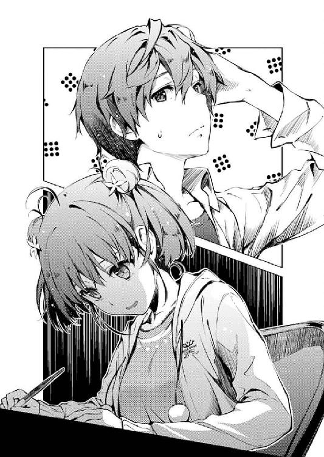

| 冴えない彼女の育てかたFD〈ファンタジア文庫電子応援店限定版〉 (富士見ファンタジア文庫) | |
| 丸戸 史明 | |
| (2014) | |
冴えない彼女の育てかたＦＤ
〈ファンタジア文庫電子応援店限定版〉
丸戸史明

富士見ファンタジア文庫
本作品の全部または一部を無断で複製、転載、配信、送信したり、ホームページ上に転載することを禁止します。また、本作品の内容を無断で改変、改ざん等を行うことも禁止します。
本作品購入時にご承諾いただいた規約により、有償・無償にかかわらず本作品を第三者に譲渡することはできません。
本作品を示すサムネイルなどのイメージ画像は、再ダウンロード時に予告なく変更される場合があります。
本作品は縦書きでレイアウトされています。
また、ご覧になるリーディングシステムにより、表示の差が認められることがあります。
口絵・本文イラスト 深崎暮人
同人誌即売会とは、ものの資料によると、同人誌を配布、頒布、販売する集会のことである。
日本のオタク文化を象徴するようなイベントで、会場内で流通する漫画、アニメ、ゲーム関連の同人誌を買いつける者、売りさばく者、買いつけてから中古ショップに売りさばく者など千差万別な参加者たちが集う。
その中でも『売りさばく者』、つまり本を作る側の人間は、もっともオタクとしての業が深いとされる。
たかが趣味のために何日も徹夜し、私生活をおろそかにしてハマり込む者。
盆と正月を始めとする休日を全て投げ打ってイベントに参加しまくり、親に心配されながら進学や就職や結婚を諦めて朽ち果てていく者。
没頭するあまりに人間関係をなくしてしまう者。逆に嫌すぎる人間関係を構築してしまう者。
また、同人誌の販売を主な収入源とみなし、他に仕事もせず確定申告もせず（イメージです）専業化していく者。
そんな色々と濃い連中にとってもっとも重要な日......それはイベント当日ではない。
これは、とある同人作家の戦いの記録。そう、イベント直前の、入稿締め切り間際の物語である......
え？ 偏見？ 何が？
※ ※ ※
「はい、はい、わかってます......あと一時間......表紙の方は一〇時までには必ず！」
テーブルの上の時計は、すでに午後九時を一五分ほど回っていた。
「え、現状？ はぁ、その......そろそろラフが上がってペン入れが始まるかな～なんて」
部屋に流れる音は、どこかの動画サイトから拾ってきたらしい懐かしの九〇年代アニソンメドレー。
「ああいえ！ モノクロじゃなくて当初の予定通り四色刷りで！ 塗ります、塗れます、塗ってみせます！ ......えっと、〇時までには」
そして、受話器から聞こえる相手の息詰まる声と、それに応えるこっちの更に息詰まった声。
「あ、でもそこまで延ばしたら朝八時でも同じことですよね？ そんなわけで山川さんが明日の朝出社されるまでには必ず！」
それらの音に紛れるように、かすかにペンの走る音が絶え間なく続いているのが、この絶望的な状況の中での、たった一つの希望。
「え？ いや、ちょっとそれは......しょ、少々お待ちください！」
そして俺は、振り返る。
その、ひとすじの希望の元へと。
「おい、英梨々！」
「今忙しいんだから話しかけないで！」
「俺がこんな目に遭ってるのは一〇〇パーお前のせいなのにその言い草かよ......」
その理不尽な希望の光は、こっちがどれだけ切羽詰まった会話をしてても、わざわざ気に掛けてくれるような非効率な真似はしない。
ついでに超悪い姿勢を直すこともしない。
背中を丸め、眼鏡が原稿に触れるかというくらいに顔を寄せ、ひたすらペンを動かす。
「何よ、手短に済ませてよ？」
「今日中に入稿できないと印刷費さらに二割増しだって......」
「わかった、払う」
「即決!?」
そんな彼女の名は澤村・スペンサー・英梨々。
さらさらの金髪と白い肌を天から与えられた日英ハーフ。
父親が外交官という生粋のお嬢様。
てなわけで、学園でも評判の美少女。
そして幼なじみ。
その、あまりにも完璧なメインヒロインの香りはしかし......
「増額って言ってもどうせ一〇万も行かないでしょ、今回ページ数少ないし」
「それだけあればアニメのＢＤが三クールは買えるだろ」
「完売すればどうということはないわよ！」
「お前それ島中でも同じこと言えんのかよ......」
原稿執筆中は徹夜続きで髪も肌も荒れ放題。
外人オタの父と腐女子の母に英才教育を受けた純粋培養隠れオタ。
てなわけで、イベントでも評判の人気同人作家。
けれど、やっぱり幼なじみ。
こんな、あまりに完璧な裏設定が何もかも腐らせる。
「よし、表紙の線画終わり。あたしは今からネームに入るからこれ塗り分けといて！」
「お前のその土壇場での速さは認めるけど、俺のこの奴隷的扱いは......」
そして、そんな金持ちお嬢様の邸宅にこうして拉致られている俺の名は、安芸倫也。
同人ゲームのプロデューサーにしてプランナーにしてディレクターを務めるマルチクリエイターの高校二年生。
その、圧倒的なカリスマを感じさせる肩書きはしかし......
「だいたい、なんで俺こんな目に遭うわけ？」
「そんなこと言ってる間にイベントはもう明後日なのよ？」
「それって印刷所との交渉から、夜食の買い出しから、あげくの果てはＣＧの手伝いまで押しつけられる理由になるわけ？」
目の前の同人女にとっては、詐欺師にして言い出しっぺにして雑用を務めるなんでも屋としか映らないらしい。
一度もゲームを作ったことがないってだけで馬鹿にしやがって......
「仕方ないでしょ。パパもママも大使に付き添って本国に帰っちゃったんだから」
「......どっかの殿下の晩餐会だって？」
「まったく、娘が締め切りギリギリで苦しんでるっていうのに吞気なもんよね！」
「いや......その二つを天秤にかけるのお前？」
それはそうと、こんな俺が夜遅くに女の子の部屋にいて、しかもこのままでは一緒に朝を迎えてしまおうかという、リア充かギャルゲー主人公のような境遇に放り込まれているのには、訳がある。
先月、とある出来事がもとでギャルゲーを作れという天啓を受けた俺は、その実現に向けて三顧の礼をもって最強の原画スタッフを迎え入れた。
それ以来こいつは、同人作家とか幼なじみとか金髪ツインテールによくあるワガママな本性をむき出しにして、次から次へと俺に無理難題を押しつけるようになった。
同人誌用の資料集め、テスト対策ノートの手配、ネット予約やオークションの代行、ブログやツイッターのなりすまし......
そして極めつけが今日のこれ。
何故か雇ったはずの俺が、雇われたはずの英梨々のサークル活動の雑用を全て押しつけられ、こうして締め切りと戦っている。
一〇年前は俺の後ろにべったり付いてくるような依存系だったくせに、どうしてこうなった。
七年間、ずっと表立って話しかけてこなかったくせに、どうしてこうなった......
「にしても今回はさすがにヤバいわ......本文がまだ一ページも上がってないのにあと二四時間しかないとか前人未踏の境地ね」
「イベント前日入稿ってだけでもあり得ないのに夜まで引っ張るつもりかよ!?」
「大丈夫、ママが現役の頃から付き合いのある印刷所だから......大丈夫、なはず......」
前人未踏の境地に達しようとしてるのはその印刷屋さんの方なんじゃ......
「なぁ、英梨々、この際だから言わせてもらうけどさ」
「この際だから言うな」
「今回は諦めるって選択肢は......」
「言うなって言ったわよ？」
「せめてオフセットはやめてコピー本にするとか......ページ数減らして、ラフイラスト程度でお茶を濁してさ」
「そんなことできるわけないでしょ！ あんた買いに来る人のことなんだと思ってるのよ!?」
「す、すまん......悪かった」
そのときの英梨々の怒気をはらんだ真剣な口調が、俺の全身に電流を走らせる。
そうだ、同人とはいえ、やっぱりこいつはクリエイターだったんだ。
質も量も足りない本なんかを出して、楽しみにしていたファンを裏切ることこそが、自分にとって一番許されない暴挙......
「だいたいあんたね、限定コピー本の恐ろしさと虚しさを知ってるの？ 徹夜で必死に描いて、早朝のコンビニで慌ててコピーして、開場前に必死にホチキスで閉じて、そこまでしてもこっちはただの赤字だってのに、ちょっとチケットで入ったダミーサークルの連中が何度も並んで買い占めてヤフオクで大儲けしやがるのよ？」
「え、え～？」
「それでいて買えなかった人たちが叩くのはそういう転売厨じゃなくてこっちだし！ そういうのに限ってすぐオワコン呼ばわりするし！ そこまで嫌な思いさせられといてあっさりｚｉｐで流れるし！」
「お前ネット見ない方がいいんじゃね？」
そのときの英梨々の怒気をはらんだ真剣な口調が、俺の全身に瘴気をまとわせる。
やっぱこいつゴロや。同人業界によくある屑や。
「そもそも、そこまで言うならどうしてこんなに遅れたんだよ？ もうちょっと早いうちから計画的に進めとけば」
「......作家が原稿遅らせることに理由なんてないのよ」
「......かっこい～」
同人界ではすでに余裕の壁サークルegoistic-lilyの人気作家、柏木エリこと澤村英梨々......
そんなコイツの含蓄ありそうに聞こえるその一言は、本当は全然カッコ良くない上に完全に自業自得なんだけど、湧き上がる強烈なシンパシーがどうしても冷静な評価を妨げる。
みんな、締め切りはちゃんと守ろうな？
※ ※ ※
「......ねぇ」
「............」
草木は眠るがオタは眠らぬ深夜アニメの時間帯。
「ちょっと......」
「話しかけるな、今作業中だ」
「塗り分けみたいな単純作業に脳のリソース使う必要なんかないでしょ。いいからこっちの話聞きなさい」
そんな「俺ゴールデンタイム」にテレビもつけさせてもらえず、慣れない画像編集ソフトに悪戦苦闘している俺に対して発せられた言葉は、それはそれは無慈悲なものだった。
「で、なんだよ？」
「ネームが進まない」
「そうか、頑張れ」
「あたしが欲しいのは激励じゃなくてアウトプット。アイデア、ネタ、できればネームそのもの」
ついでに、それはそれは自分本位なものだった。
「......なんで俺が？」
「だってあんた、この作品詳しいでしょ？ どうせ何度も見たんでしょ？」
「そりゃ、リアルタイムで悶えて録画で萌えてＢＤで泣いてる最中だけど」
今回、英梨々がネタにしてるのは『あの雪のプリズム』。
ちょうど今期放送してたオリジナルアニメだ。
雪の降らない地、静岡県（偏見）で、奇跡的に粉雪が舞った（偏見）冬のある日に主人公の公平が見つけた一人の記憶喪失の少女。
彼女との同居生活や、その存在の謎を軸に、仲間たちの友情や絆、嫉妬や裏切りを儚くも生々しく描く、伝奇系さわやかドロドロ青春群像劇。
......というのはいいんだけど。
「自分の本だろ？ だったらネタは自分で考えろよ」
「そんなこと言ったって、あたしこのタイトルまだ三話までしか見てないし」
「はぁ!? じゃあなんで選んだんだよ？」
「今一番話題になってるからに決まってるじゃない」
「おお、もう......」
この作品、今期アニメの中では、売り上げは三番目だけど、実はスレの伸び具合はナンバーワンだったりする。
しかもこの前最終回を迎えたばかりだから、需要が高い割に出してくるサークルは少なめという絶妙な狙いどころ。
本当、こいつはその辺の流れは絶対に外さない。
けど、だからって見てもいないアニメの同人誌出すって絶対おかしい......
「本当は最終回まで追いかけたかったんだけど五月から忙しくなっちゃって......なんか訳わかんない同人サークルの代表が訳わかんないこと言い出して......」
「何でもお申し付けください！」
しかしいくら世界が理不尽に満ちていたとしても、これ以上いけない。
プロデューサー兼ディレクターはキャラクターデザイン兼原画に絶対服従。
これはゲーム制作においては決して破られることのない不文律だ。
「倫也、あんた、あの作品の二次創作だったら何が見たい？」
「俺だったら......やっぱり羽衣とのイチャラブが見たいな」
この作品のメインヒロインの名は天女羽衣。
そのネーミングはちょっと......というくらい正体バレバレの記憶喪失少女。
ちなみに一話で彼女と出逢った場所はもちろん三保の松原だ。
「『あの雪』ってさ、キャラデザはめっちゃ萌え寄りなのに、ストーリーが重すぎるせいで本編ではなかなかブヒれなかったんだよな。だからその補完って意味でさ」
最初にＰＶが公開されたときは、どんなエロいハーレムラブコメが展開されるのかとｗｋｔｋしたんだけど、蓋を開けてみれば鬱と嫉妬と修羅場のオンパレード。
まぁ、その絵柄とストーリーのギャップが多くの声のデカいファンを獲得した訳だから一概に悪いとも言えないんだけど......そう、俺のようなファンを。
それでも『羽衣たんとの萌え萌え同棲生活もっと見せろやコラ！』というファンは取り残され、ネット上で未だに根強い抗議活動を繰り広げている......そう、俺のように。
「ほんのちょっとしたエピソードでもいいんだよ。二人きりで飯を食うシーンとか、一つ布団で肩寄せ合って寝るシーンとか、二人で銭湯に行って羽衣が先に外で待っててそこに雪が降ってきて真っ赤な石鹼箱がカタカタ鳴ったりとか」
「色々なツッコミどころを全部スルーして一言だけ言わせてもらうと、ありきたりね」
しかし英梨々の反応はあまりにもそっけなく、そして芳しくなかった。
「そ、そうか？ 王道だと思うんだけどな......二次創作的に」
『なら聞くなよ』という返しは、前述の通り、ディレクターと原画家の関係上無理。
「あたしああいうヒロイン嫌い」
「そういうこと言うなよ。人を呪わば二穴責めと言うぞ」
「......つまりそれって、羽衣が二人組のＤＱＮに凌辱輪姦されるお話が見たいと？」
「どんな思考回路を巡るとそういう結論になるんだよ!?」
「あんたが女の子の前で酷すぎる喩えを出したのが悪いんでしょ！」
「え、何か用法間違ってたか俺？」
国語の得意な先輩に教えてもらったことわざだったんだけど......
「なんか、あの羽衣ってコ、あまりに八方美人すぎて人形みたいなのよね。まるで物語に無理やり動かされてる感じ」
「そっか......」
「だからあたしは、麻里子の方が人間くさくて好きだな」
渚麻里子は、主人公篠塚公平の幼なじみ。
天真爛漫な羽衣とは対照的に、無口で根暗で地味なキャラクター。
この作品の鬱......というか負の側面を一人で担っている、重要ではあるけれど日陰の役割を担うヒロイン。
もちろん公平にほのかな想いを寄せるという隠し設定にブレはない。
あと、繰り返すけど幼なじみ。何の意図も意味も感じないけど、結果として幼なじみ。
「まぁ、確かにそういう感想もアリだな」
なにしろ、人の感想は千差万別だ。
だから誰がどう受け止めようが、それに異を唱える権利は、受け手側にはないし、するつもりもないけれど......
「けど俺は、物語を素直に楽しめるお得な人間だしな」
「あ、そ」
そういうのを、チョロいユーザーとあざ笑う奴らもいる。
「だって、どう見たってこの監督、羽衣に人気が出る前提で作ってるし、その流れに乗った方が楽しめるだろ？」
でも、チョロくて何が悪い。
ありきたりな物語で必要以上に感動して誰が損をする？
それで不幸になるファンはいないだろ！
......少なくとも、夢から醒めるまでは。
「あんたは昔からそうよね。いっつも王道を突き進む」
「最大派閥の倫ちゃんと呼んでくれ」
「周りをなぎ倒してでも。ついていけない人間を置いてきぼりにしてでも」
「なんの話だ？」
「............」
「英梨々？」
てっきりその『あざ笑う奴』になるかと思われた英梨々は......
「ごめん、ちょっと集中するから邪魔しないで」
「あ、ああ......」
なぜか、異様に不機嫌なオーラをまき散らしながら黙り込んでしまった。
「............」
「......？」
そろそろ、オタクも眠る深夜アニメの終了時間。
それでも俺たちは、未だに一睡もしないまま原稿の海に沈む。
締め切りまでは、何時間......？
※ ※ ※
「......ねぇ」
「......すぅ」
「ちょっと......」
「......んぅ？」
「............」
「すぅ......すぅぅ......」
「............」
「......はっ!?」
目を開いた瞬間、カーテンの隙間から朝の光が突き刺さる。
ついでその目を時計に向けると、すでに午前九時を一五分ほど回っていた。
危ねぇ、今日が土曜でよかった......これが早朝から特撮とアニメ乱発の日曜だったら恐ろしいことになってたぞ。
「わ、悪い！ 寝ちまってた」
......じゃない、入稿当日になにやってんだ俺は。
「いいわよ、あんたのパートは終わってたから。表紙の入稿は済ませたし」
「英梨々......？」
いつもならこの失態をここぞとばかりに罵倒するはずの英梨々は、今は黙々と机に向かっていた。
まぁ、相変わらず姿勢は最悪だったけど。眼鏡の意味あんのかあれって。
「え、ええと......朝飯は？」
「まだ」
「じゃあ買ってくるわ」
「ん、お願い」
と、目が覚めてからはお互いに素直なやり取りがぽんぽん続く。
さっきの、ちょっと気まずい雰囲気は、俺が寝てしまったおかげで綺麗に消え去ってくれていたみたいだった。
どうやらお互いに、このインターバルには色々と助けられたみたいだった。
だから英梨々も文句を言わなかったんだな、きっと。
「牛丼でいいよな。徹夜で腹減ってるだろうから特盛りにしとくわ」
「......朝から女の子にどんだけ重いもの食べさせようとしてるのよあんたは」
「ならサラダもつけるか？」
「その前に盛りを減らしなさいよ。並で十分よ」
あ、牛丼はいいんだ......
「で、結局どういう話になったんだ？」
「見るな」
「人を夜通し拘束しといて今さら隠すのかよ......」
朝食を済ませてすぐ、部屋から牛丼の匂いが消えないうちから、英梨々はもう続きの作業に入っていた。
......まぁ、普通の作家ならもうとっくに諦めてる時間なんだからある意味当然ではあるんだけど。
「......麻里子とのイチャラブ話」
「なるほど」
メインヒロインのあまりの優遇ぶりに難色を示す英梨々と、好きなヒロインの凌辱を見たくない俺の思惑をすり合わせた、いい落としどころだ。
「純愛系なんて......売れなかったらあんたのせいだからね」
「いや、サブヒロインをフィーチャーしたお前のせいだろ」
いい落としどころ......だよな？
「凌辱もない、一番人気ヒロインもいない......これで売るためには中身で勝負するしかないわね」
「そうだな」
『同人誌なんて表紙でほとんど勝負決まるじゃん』などという本質論は、ラノベとか他ジャンルにも当てはまるので今は自重。
「となると、相当濃いエッチシーンが必要になる......」
「......やっぱり一八禁？」
「一般同人なんて儲かるわけないでしょ」
「あ、愛があれば売り上げなんてっ！」
「問答無用！ というわけで今からエッチシーンのネーム行くわよ」
「じゃ、じゃあ俺は邪魔しないように別室で休憩してるから......」
「させるわけないでしょ、あんたは公平の台詞担当」
「って、俺にエロシチュを考えさせるな！ 未成年だぞ!?」
「あたしも未成年だから問題ないわよ！」
「ありすぎだろ！」
神様仏様都条例様......どうか囚われの俺をお救いください。
「公平、公平......苦しかった、辛かった、寂しかったの」
「そんなの......麻里子が勝手に苦しんでただけだ。俺はずっとお前のことが」
「噓、噓よ......羽衣が現れてから、ずっと惹かれてたくせに」
「それは......」
「ずっと不安だった......公平が離れていくんじゃないかって......あたしを置いて、天まで上っていってしまうんじゃないかって」
「行くわけないだろ......麻里子を置いてくことなんかできない」
「公平......嬉しい」
「だから笑って、麻里子」
「......ぅん」
「それだよ、お前は笑ってるときが一番可愛いんだからさ」
「............」
「だから、これからもずっと俺の側で笑ってて......」
「......ねぇ」
「ん？ どうした、麻里子？」
「そろそろ入れなさいよ。残りページ数が足りなくなってきた」
「わ、悪い......麻里......英梨々」
激しく叩きつけられるペンの音。
延々と続くたどたどしくも青臭い心情描写。
そして、吐息の荒い二人。
「い、痛い...っ」
「ご、ごめん、一度抜くから」
「だからそんなページ数ないって言ってるでしょ！ あんたは早く動きなさい！」
「お、おう......」
......同級生の女の子の部屋でエロ声出してる男子の中で、実際に行為に及んでいない奴の比率ってどんなくらいなんだろうな。
「もっと......もっと愛して」
「さっきから言ってるだろ......愛してる、世界で一番」
「言葉だけじゃ......噓くさい」
「じゃあ、どうしたら信じてくれるんだよ？」
「あたしを犯して」
「え......」
「もっと、あたしに欲情して」
「............」
「とんでもないことをして」
「........................」
「他の女の子には、とてもじゃないけれどできないようなことを」
「....................................」
「なんでも許してくれるあたしにしか試せないような、すごいことを......」
「のおおおおぉぉぉぉぉ～！ とんでもないことしてるのは今の俺たちだぁぁぁぁぁ～！」
「素に戻るな！ 死にたくなるでしょ！」
「俺はすでに一〇八回くらい死んでる感覚なんですけど！」
「せっかくノってきたところなんだから流れを止めないでよ！」
「お前よく男と二人きりでこんな作業できるな!?」
「締め切りの前には全ての過ちは正当化されるのよ！」
「後になって後悔したって知らねえぞ!?」
「早く次の台詞！ 今のこのゾーンに入ってるうちに描ききらないと抜け殻になっちゃうのよ！」
「作家って大変だなぁおい！」
「さあ、ここでだいしゅきホールド......いえ、それはラストの中○しシーンに回した方がいいわね。となるとここはバックが妥当かしら......ね、純愛モノでもア○ルくらいなら行ってもいいわよね？ ね、公平!?」
「俺は倫也だぁぁぁぁぁ～！」
そして一時間後。
「死にたい......あたし死んでしまいたい」
「だから言ったじゃねえか......」
そこには、激しい羞恥プレイの末に抜け殻となった二人の姿があった。
お互い身体的には何もないくせに、この精神を覆う激しい虚脱感は完全に事後の世界。
「このことバラしたら殺すわよ」
「言うわけねえだろこの馬鹿」
「ふ、二日寝てなかったせいなんだからね！」
「まぁ、そのおかげでとても麻里子らしい情念的なネームが切れたけどな」
「そ、そう思う？ 実はあたしも、これは結構イけるんじゃないかなって」
「あ～......そう」
どうして俺の周りの女性作家どもは、創作に対する意識がここまで真摯過ぎるんだろう。
※ ※ ※
カーテンの隙間から漏れる陽光は、すでにだいぶ西に傾いてきていた。
「あと何枚だ？」
「ん......三枚、と、あとがきかな」
「じゃあ、あと二時間ってとこだな」
印刷所でこの原稿を待っている、絶賛休日出勤中の担当さんと握った真の締め切りまで、あと三時間。
なんとか間に合わせやがった......火がついたら本当に速いな、こいつは。
それでいてクオリティも、いつもとほとんど変わらないのには恐れ入る。
「入稿はそうだけど、あたしにとってはあと二〇時間ってところね」
「それって......」
二〇時間後は、日曜の一一時。
つまり『開場するまでが入稿ですよ』ってこと。
「明日のイベントの準備、全然やってないから......今夜で三徹ね」
英梨々ほどの人気サークルともなると、机の上に本積み上げてはいおしまいって訳にはいかない。
お品書きのポップを作って、ポスターを刷って、ディスプレイを考えて、最後尾札も用意して......
「それでね......今になってこんなこと言い出すの、反則かもしれないんだけど」
「わかってる」
「明日のイベントさ......え？」
そしてもちろん、イベント当日の売り子......
「俺がわかってるって言ったら、本当にわかってる。だから任せろ」
「倫也......」
今まで、決して止まらなかったペンの音が止まった。
今まで、決して原稿から離さなかった視線を、こちらに向けていた。
「何ボサっとしてる、さっさと描け。これで間に合わなかったら許さんぞ」
「う、うん......ありがと」
ありがと、だと......
そんな殊勝なことを、そんなしおらしい表情で言われても困る。
困るから、なんとか話題を変えるしかない。
「明日のスペースの隣、伊吹恵那さんだろ？」
「え？ うん、そうだけど？」
「俺、開場二時間前には入ってるから......英梨々はゆっくり来ていいぞ」
「あ～、そゆことね」
「いっつも並んでるんだけど挨拶したことないんだよな、俺」
「あの人、すっごい美人だもんね」
「しかも性格も天使って話だし、同人板でも大抵トップ五には入ってるし」
「......それが何のランキングかは聞かないことにするけど、あの人既婚者よ」
「......マジ？」
「マジ。いつも一緒にいるサークル代表の男の人いるでしょ？ あれが旦那」
「そういうことは知ってても敢えて黙っているのが華だとか思わないのかよ？」
「女性作家のサークルの代表が男の人だと、それって大抵彼氏か旦那なのよね。今まで知り合った人たちの八割以上がそうだってママが言ってた」
「お前俺が今言ったこと聞いてた!?」
「ついでに、男性作家といつも一緒にいるレイヤーの売り子は九割以上が彼女か毒婦......」
「やめよう？ ねぇ、やめよう!?」
話題、変えるんじゃなかった......
※ ※ ※
「はい、はい......それで、明日の配送は......」
テーブルの上の時計は、すでに午後九時を一五分ほど回っていた。
「ええ......えっと、その時間だと開場前に全部搬入できるかどうか......」
部屋に流れる音は、どこかの動画サイトから拾ってきたらしい懐かしの九〇年代アニソンメドレー。
「はい、わかってます......せめて、あと三〇分」
そして、受話器から聞こえる相手の息詰まる声と、それに応えるこっちのさらに息詰まった声。
「ＯＫですか!? はい、はい......わかりました、ありがとうございます！」
それらの音に紛れるように、かすかにペンの走る音は......もう、聞こえてこない。
だから俺は、振り返る。
「おい喜べ！ なんとか開場に間に合わせてもらっ......あ」
「......すぅ」
その、全てを成し遂げた眠れる姫......いや、眠れる暴君の元へと。
「英梨々......」
「んぅぅぅぅ......すぅぅぅぅ」
原稿描いてるときと同じ、ひどい姿勢のまま机に突っ伏して。
戦いは、まだ一〇時間以上残っているこの状況で。
ついでに言えば、男と二人きりで、しかも両親不在の自分の部屋で。
「んふふふふ......くぅぅぅぅ～」
「馬鹿じゃね～の？」
......あまりにも安心しきった表情で、寝こけてる。
「んぅ？」
早いとこ起こさないと。
明日の準備を手伝わせないと。
じゃなくて、手伝いは俺の方なんだし、こいつが起きなくちゃ、明日のイベントはどうにもならないわけで。
「すぅぅ...すぅ...」
「ったり～なぁ」
まぁ、つまり、どのみち起こさないと。
なにしろ、英梨々ほどの人気サークルともなると、机の上に本積み上げてはいおしまいって訳にはいかない。
お品書きのポップを作って、ポスターを刷って、ディスプレイを考えて、最後尾札も用意して......
「まぁ、一四時間もあれば余裕か......」
数年前の、何度も遊びに来ていた小学校時代の記憶を呼び起こし、クローゼットを開けると、やっぱりそこには英梨々の寝具一式が入っていた。
俺はそこから毛布を一枚取り出すと、英梨々の体にそうっと掛けようとして......
「ん......？」
『臨時代表 安芸倫也様
明日は任せたわよ！
egoistic-lily 柏木エリ』
英梨々の、ペンを握った右手の先に、そんなメモを見つけた。
「確信犯......？」
きっと、半分寝かけたまま書いたんだろう。
いつも以上に適当で、ミミズがのたくったようなへったくそな文字。
そこから滲み出るのは、いつもの尊大さと、今までにはなかった、ほんの少しの信頼感。
そして......
「臨時、代表......？」
その肩書きに何の意味があるのかは、俺にはわからなかった。
※ ※ ※
そしてとうとうイベント当日。
午前一〇時五五分......つまり開場五分前のイベント会場......
「本よし、釣りよし、お品書きよし、ポスターよし、最後尾札よし......全ての準備よし！」
「う、うん......」
「役割確認しとくぞ！ 俺は品出し、列整理、混雑対応、スタッフ対応、来客対応、その他諸々！」
「た、大変だね」
「それに引き替えお前は売り子に専念！ 簡単な仕事だ、気楽にやれ」
「そ、そうなの？」
「なお、開場前にして行列は既に三桁を余裕で突破した模様。さらに開場後数分で一気に数倍に増えると予想される」
「そ、そんなに？」
「その大人数をここにいる二人で捌かなければならない。残念ながら、今日は誰の援護も期待できない状況にある」
「そうなんだ......」
「というわけで......覚悟はいいか？ 加藤」
「いいわけないよぅ!?」
「ん？ なんでだ？」
激しい戦いの幕開けを前にして、俺たち二人の鉄壁のチームワークに亀裂が入ろうとしていた。
......まぁ、ほんの一時間前に結成された急造チームなんだけど。
「日曜の早朝にいきなり叩き起こされて、イベント会場に連れてこられたかと思ったら、こんな殺伐としたサークルで売り子させられる覚悟って普通の女の子は持ってないと思うんだよ」
「いや、ほら、加藤はもう普通の女の子じゃないから。俺の手で必ず超萌えキャラに仕立て上げて......」
「今がそんなキャラクター論とまるで関係ない状況ってのはわかってて言ってるよね安芸くん？」
そう、この、今にも修羅場が始まりそうな最前線にいるのは、澤村・スペンサー・英梨々......ではなく加藤恵。
全然もの珍しくない名前と、ある程度の可愛さと、そこそこな素直さを備えた、俺のクラスメイト。
......にして、春に運命的な出逢いイベントを起こしておきながら、すぐにその存在を忘れさせてくれるほどに『キャラが立ってない』女の子。
何もかも平均からプラスマイナス五パーセントくらいを推移するというか、中央値と平均値の間くらいというか、そんな、間を取ったような普通の申し子。
まるで『普通に面白い』という評価とともに、一年後にはその存在を綺麗サッパリ忘れられている凡作と良作の中間くらいのギャルゲーの存在感を持つ......
「あと今、なんかわたしに対して延々とよからぬことを考えてるよね安芸くん」
「ああすまん、確かに加藤に対して悶々といけないことを想像してた。許してくれ」
「そうやってあさっての方向にさらっと謝る態度がおざなり感満載だよね？」
「そんなわけないだろ俺のメインヒロイン！」
そう、そんな普通の女の子にして、とある超大作ギャルゲーのヒロインキャラクターに大抜擢されたシンデレラ。
なお、その超大作ギャルゲーは、
企画：俺
キャラクターデザイン・原画：柏木エリ
シナリオ：霞詩子
ディレクター：俺
プロデューサー：俺
制作：俺のサークル（名称未定）
という豪華スタッフで絶賛開発準備中。
「それよりも澤村さんは？ だいたいここって澤村さんのサークルじゃないの？」
「英梨々は......ばっくれやがった」
「え～」
まぁ、そんな未来の激萌えメインヒロインも、今は単なる人手でしかないけど。
「いや、実はあいつ、自分のサークルを手伝ったことないんだって。いつも両親に全部やってもらってて」
「か、過保護だね？」
「いやまぁ、あの一家、英梨々の顔バレを極端に気にしてたから。ほら、エロ同人作家が実は女子高生なんて知られたら色々とマズいだろ？」
「あ～、それはまぁ......澤村さんの場合、さらにあの見た目だしね」
英梨々の口から出た『ストーカーとかついたらどうするのよ？』って台詞の、あまりの説得力に返す言葉も出なかった......
まぁ、今日になってそのことを言い出す、奴の余裕しゃくしゃくな態度には殺意が湧いたけどな！
「そんなわけでだなぁ、サークルとは無関係な上、顔バレしても話題性に欠ける加藤に白羽の矢が立ったわけで」
「立てたの安芸くんだよね？ 話題性に欠けるって認定したの安芸くんだよね？」
「頼むよ加藤......俺たちの野望のために」
「またそうやって誤魔化そうとする～」
まるでギャンブル狂いのダメ亭主に泣きつかれてしぶしぶ風俗に働きに出る世話女房のような俺たちのこの構図は、まぁ、今日に始まったことじゃない。
なぜなら......
「あ、やべ、あと一分で開場だ！」
「え～、もう？ それで安芸くん、一部五〇〇円で二限、あとペーパーは一人一枚ってことでいいんだよね？」
「ナイス記憶力！ というわけで任せたぞ加藤！」
「任されるしかないよこんな状況じゃ......打ち上げくらいおごってよね？」
「任せとけ！ 金で解決できる問題なら間違いなく澤村家が保証する」
「なんだかなぁ......それじゃ、頑張ろうねお互い」
「おう！」
ほら、結局こういうチョロさを発揮してくれるのが加藤恵という女の子なのだから。
本当にお手軽......じゃなくて使い勝手のいい......じゃなくて可愛い奴。
頑張れ、俺の、メインヒロイン。
「そんなふうに思ってるんならちゃんとヒロインらしく扱ってよ～」
「あ、悪い、つい口に出してた」
（初出：ドラゴンマガジン２０１２年９月号）
『不死川アンデッドマガジン』
それは不死川書店発行の隔月刊のライトノベル雑誌である。
不死川ファンタスティック文庫作品の紹介記事や短編小説、コミカライズ連載等の魅力的なコンテンツが目白押しであり、ライトノベル好きなユーザーにおいては買い逃したりしないよう是非とも公式サイトから定期購読を申し込むのをお薦めする。
さて、ここに一つのラノベ作品が今まさに立ち上がろうとしている。
その作家の前作にしてデビュー作である『恋するメトロノーム』は、前評判こそ大したことはなかったものの、蓋を開けてみれば全五巻で五〇万部の売り上げを叩き出し、ナンバーワンとは言わないまでもヒット作としてユーザー、業界ともに認知されていた。
そして今回、そのヒット作の流れを汲む新シリーズの満を持してのスタートとなれば、アンデッドマガジン側としても看板作品として特集を組むのは当然の流れであり......
※ ※ ※
『さて、それでは録音始めさせていただきます......霞先生、今日はお忙しいところ、インタビューに応じていただきありがとうございます』
『で、町田さん。どうしてここに倫理君がいるんですか？』
『いきなり話の腰を折らないでよ詩羽先輩......』
『いや～、それがさぁ、詩ちゃんもＴＡＫＩ君も聞いてよ！ 今まで組んでた外注ライターに佐々木君ってのがいたのね。で、今回の仕事も本当は彼に頼もうと思ってたのよ。そしたらいきなり行方くらましちゃってね。他にも色々と仕事振ってたからこっちも困って秋田の実家まで捜しに行ったんだけど結局空振りでさぁ。で、向こうのお父さんも行方知らないみたいだったから、お互い見つけたら連絡し合うって約束して東京に戻ってきたのよ。けどしばらくしたらお父さんの方から急に「いや、あの件はもういいですから」って言ってきてさぁ......ああ、今になって実家に逃げ帰ってきたんだなぁってピーンと来たんだけど、どう追い込めばいいと思う？』
『そっちも開始直後からそんな生臭い話やめてよ!?』
「ストップストップ！」
と、そんな俺の指示とともに、スピーカーから流れてきたもう一つの俺の声が唐突に止まる。
「加藤、この辺りの音声、五分くらい飛ばして」
「飛ばしちゃうの？ インタビュー結構盛り上がってるみたいだけど」
「ある意味面白いけど、絶対記事にできないから......」
いつも放課後のサークル活動で集まる、学校の視聴覚室。
......と隣接している放送室。
八畳間くらいの、学校の施設としては小さな間取りの中に、映像、音響用の機材がところ狭しと詰め込まれた雑多な部屋で、あるときは視聴覚室のオペレーションに、あるときは全校放送にと、様々な場面で活躍する学園の管制塔だ。
そんなごちゃごちゃした狭いスペースの中、録音された音声データと格闘している二人の男女がいた。
一人は俺こと、ハンドルネーム〝ＴＡＫＩ〟こと、蔑称〝倫理君〟こと安芸倫也。
豊ヶ崎学園の二年生にして、まだ名前すら決まらない同人ゲームサークルの代表。
いよいよ本命のゲーム制作も動きだし、ディレクションと制作費稼ぎに燃える熱血男子。
そしてもう一人の名は加藤恵。
同じクラスになってから名前を覚えるのに半月以上かかるくらいに印象の薄いクラスメイトだったけど、そこから色々な紆余曲折を経て一緒に放課後ゲーム制作サークルを立ち上げることになった大切な仲間。
そして、いつかは俺のゲームのメインヒロインとなる宿命を俺に負わされた可哀想な......いやいや幸運の女神。
あと、こうして二人以外に誰もいない上に、泣いても叫んでも絶対声が外に漏れない防音完備の放送室に連れ込んでいるのに全然警戒しない気安さと、それでも俺の色んな感情を煽らない安心感を兼ね備えた、可愛いのに色々と〝立ってない〟女の子。
「じゃあ、次のところ流して大丈夫？」
「ああ、頼む」
そんな俺たちがしているのは、とあるインタビューのテキスト起こし。
テキスト起こしってのは、会話を録音したテープやＩＣレコーダーなんかの音声を聞きながら、その内容を文字に書き起こし、さらに読みやすいように追記したり、問題のある箇所を修正したり、指定の容量に収めるために泣く泣く削ったりする作業のことをいう。
こうして、聞く形から読む形に直された文章が、雑誌なんかの記事として誌面を飾ることになるため、出版作業においては重要な工程だ。
で、そんな出版社的に大事な作業を、なんで高校生二人がやっているかというと......
『と、そんなわけで代役を仰せつかった安芸倫也です。今日はよろしく』
『......つまんないインタビューだったら途中で寝るわよ？ 私、今日もそこのゴリ押し編集の人に無茶振りされて徹夜でショップ特典の書き下ろし小説書いてたんだし』
『そうやって脅かさないでよ詩羽先輩。俺こういうの初めてなんだからさぁ』
『無事インタビューを終わらせたければ、今夜は私を寝かさないことね』
『だから昼間っから紛らわしい言い方やめてよ!?』
『大丈夫よＴＡＫＩ君。こんな強がり言ってるけど詩ちゃんもインタビュー受けるの初めてなんだから。きっと内心じゃ緊張でガチガチよ？』
『なっ......』
『え、そうなの？ あんなに売れっ子なのに』
『ほら、前作の時はブレイクしかかったときにちょうど完結しちゃったからこっちも推すタイミング逃しちゃってね。それに正体が正体だから、付き合いの浅いライターには任せられないし』
『ああ、そっか......女子高生ラノベ作家なんて漫画みたいなキャラクターがバレたら結構センセーショナルだもんなぁ』
『というわけでお互い初めて同士、初夜みたいに瑞々しいインタビュー期待してるわ！』
『......私もう何も喋らない』
『......このインタビューを成功させたければあなたが喋らないでください町田さん』
「......ごめん、ここからさらに五分くらい飛ばして」
「え、また？」
「うん......ここからしばらく、先輩、本当に喋らなかったから」
「大丈夫？ このインタビュー、記事として使えるところあるの？」
「............多分」
そう、この気難しい女子高生ラノベ作家のインタビュー記事作成という難事業を、不死川ファンタスティック文庫編集部の町田苑子女史（三〇代独身）から直々に仰せつかったからに他ならない。
霞ヶ丘詩羽。
豊ヶ崎学園三年生。俺のサークル仲間にしてシナリオ担当。
けれど世間的に知られているのは、霞詩子というペンネームの方で。
高校一年の時に大賞受賞、二年の時にデビュー作全五巻を書き切り、三年になって期待の新シリーズを立ち上げるという、アメリカンドリーミーなシンデレラストーリーを地で行くラノベ作家。
で、その大物作家様の新作立ち上げにともない、不死川アンデッドマガジンにて特集記事を組むことになり、その目玉となるのがこの『霞詩子ロングインタビュー』。
インタビューそのものは昨日、株式会社不死川書店社内の第二会議室で滞りありまくりつつ終了した。
そして今、こうして俺と加藤が格闘しているテキスト起こしの締め切りは今日中......どんだけ綱渡りなんだよ不死川書店。どこかの人気同人作家かよ。
そんな重要な仕事が一介の高校生である俺に回ってきたのは、ひとえに俺が世界で唯一の霞詩子ファンサイトの管理人だからであり、そして、そんな大変な仕事を俺が引き受けたのは、ひとえに正味二日間で三万円という魅力的なギャラのためだった。
ゲーム制作には金がかかるんや......わかってくれるのは加藤だけだよ！
「あんまりわかってないけど安芸くんが泣いて頼むから仕方なく手伝ってるだけだよ？」
「あ、ごめん、また口に出してた」
※ ※ ※
『さて、ファン待望の新作についてですが、タイトル未定ながらようやく設定の概要が公開されましたね』
『......そうね』
『まずイメージ画を見て驚いたんですが、いきなり「恋するメトロノーム」の舞台となった〝あの街〟が今回も登場するんですね！』
『......使い回しね』
『となると、前作とのリンクも期待されますが......？』
『......かもね』
『例えば、直人や沙由佳や真唯が登場するとか、あるいは前作のサブキャラが今回はメインを張るとか』
『......どうかしらね』
『連載が進めば、アンマガ誌上でコラボレーション企画として「恋するメトロノーム」復活なんてことも！』
『............』
『あ、あの、霞先生？』
『............』
『......詩ちゃん』
『......そろそろ機嫌直してよ先輩』
『眠いんだから仕方ないじゃない』
〝『恋するメトロノーム』に関しては自分の中でも出し切ったって思いがあるから、復活というのはちょっと考えにくいかな〟
〝じゃあ、沙由佳や真唯はもう二度と見られない？〟
〝読者さんから強い要望があればまだまだわかりませんけどね（笑）〟
〝そうですか！ じゃあこのインタビューを読んだ方は是非、『恋するメトロノーム』復活大希望！ とアンケートに書いて送ってください、ということで（笑）〟
「ええと......よし、こんな感じかな」
「すごいね、インタビュー記事ってこうやって作られるんだ......」
俺のノートパソコンに軽やかに綴られる捏造記事を、加藤が呆れたような感心したようなため息とともに見つめる。
「本人は自分の原稿以外はまるで見ないらしいから大丈夫。町田さんが嘆いてた」
しかし今は捏造ごときを気にしてる時間はない。
なぜなら、記事にならない会話から、記事になりうる文章を作り出すのが今回の俺のミッションだからだ。
......まぁ、記事にならない程度しかコメントを引き出せなかった自分の尻ぬぐいをしているだけとも言うけど。
「でも確かにそんな感じだよね。霞ヶ丘先輩って、自分がどう思われてるかとか全然気にしてなさそう」
「何しろ学校での評判が評判だからなぁ」
授業中は居眠りの常習犯なのに学園トップを譲らないわ、誰に対しても等しく毒舌だわ、気に入らない相手なら教師だろうが壮絶にシカトするわで、実は結構風当たりは強い方だったりする。
それでも全然気にすることなく、今日も窓際の席で居眠りしては、テストで高得点を取りまくる孤高の天才。
彼女が気にするのは作品の評判......つまり、ファンが自分の本をどう思っているかだけ。
他人が霞ヶ丘詩羽という個人をどう思っているかなんてのは、まるっきり蚊帳の外......たぶん。
※ ※ ※
『さて霞先生、続いては気になるストーリーの方ですが』
『まぁ......男の子と女の子が出会って、恋をして、なんだかんだあって、別れそうになって、でも結局くっつくような話？』
『......な、なるほど！ 前作を踏襲した、胸が締めつけられるような切ない恋愛メインのお話になると、そういうことですね!?』
『あ、でも町田さんが今回はもう少し笑えて萌えるものにしろって』
『ということは、今回は同じラブコメでもコメディ寄りということですか。それはどういった狙いから？』
『さあ？』
『ええっとぉ！ 霞先生がおっしゃりたいことを代弁するとですね、今回はもっとライトな層にも楽しんでもらえるものを作りたいということでして』
『なるほど、対象とする読者を広く大きく取りたいと？』
『別に私はそこまで......』
『ええそうなんです！ 前作は評判は良かったものの、やはりシリアスな場面がほとんどなので、アンケートの中にも〝読んでて辛い〟とか〝楽しくない〟という意見も結構あったんですよ』
『そうでしたか。しかしその深さこそが霞詩子作品の真骨頂でもあるし、そういった作風を突き詰めるという選択肢もあったと思いますが？』
『そうね、私はどっちかと言えばその方が......』
『それはある意味賭けなんですよ！ ヒット作を出した作家さんは、次回作でそのように〝自分の作りたいモノ〟にこだわりすぎるという傾向がありまして。で、蓋を開けてみると前作ほど評判も売り上げも良くないことが多いんです』
『確かにヒットした直後であれば、作家さんの意向が通りやすい状況ではありますよね。しかし敢えて今回はそういった欲求は抑えたと？』
『だから別に抑えるつもりはなかったのに......』
『霞詩子は次がまだ二作目だし、何より若い作家です。自分の思うがままに書いてもファンがついてくるようになるにはもう少し経験を積む必要がある。なので、今はまだ広く読者に彼女の魅力を知ってもらうことが先決なんです。そのための今回の新作なんです！』
『なるほど～、今回の作品は、まだまだ進化を続ける霞詩子ワールドのほんの始まりに過ぎない、けれど大きな二歩目ということですね？』
『全然そんなこと考えたこともないし言ってもないんだけど......』
『もちろんそうです！ 全力を尽くして面白いものを作ります。なのでたくさんの人にこの作品に触れて欲しいと思っています......って、こんな感じのコメントを詩ちゃんが言ってる風にまとめられる？』
『大丈夫、いけます！ この辺りはいい感じでページ稼げそうですよ！』
『やっぱりこのインタビュー、私必要ないじゃない......』
「ふぅ～、ちょっと疲れた。五分だけ休憩な」
夢中でキーを叩き続けていた指がさすがに疲れ始めてきた。
ふと放送室のガラス窓越しに視聴覚室を見ると、そこはもう夕陽で真っ赤に染まっている。
「ねぇ、今って何時かな安芸くん？」
「ええと......そろそろ六時になるな」
「運動部もほとんどいなくなってるね」
「ああ、そうだな」
防音壁で覆われた放送室からではよくわからないけれど、校内に人がいる気配はかなり少なくなっているようだ。
「で、これって、あとどのくらいで終わりそう？」
「そうだな、終わったときにわかると思うぞ」
ちなみに、まだ半分も終わってないというのは俺の心の中だけの話。
「えっと、だからね？」
「加藤がいないと作業効率めちゃくちゃ落ちそうだなぁ」
「わたしなんて言われるままに再生してるだけだよ？」
「加藤が側にいてくれるだけでモチベーションが違うからなぁ」
「今思いつきで喋ってるよね安芸くん」
「二人で作業すれば二倍以上のスピードで進みそうなんだけど、一人だと朝までかかっても終わらないかも」
「朝まで二人でここにいたら、さすがに言い訳できない状況だと思うんだけど」
「でも終わらせないと雑誌の目玉企画に穴を開けることに......これはもはや俺と加藤だけの問題じゃない。詩羽先輩の、ひいては不死川書店の名誉を守る戦いにまで昇華してるんだよ！」
「......せめて家に電話する時間くらい欲しいんだけど」
「ありがとう加藤！ ギャラが入ったらおごるからな！」
そんなわけで、いつもながら倦怠期の人妻並みに流されやすい加藤とともに、さらなる修羅の後半戦に突入だ。
さあ、締め切りまでは何時間......って、こんなんばっかだな、最近の俺。
※ ※ ※
『さて、ここからは新作のお話から少し離れて、作家・霞詩子の実像に迫っていきたいと思います』
『と言いつつ実際に迫ってきたことないのよね。倫理君の名が示す通り』
『......「恋するメトロノーム」は、ここ最近では珍しいほどまっすぐで純粋な、とても魅力的な恋愛小説でした』
『そうやって、小説に対しては歯が浮くような台詞でガチに口説けるのに、リアルの女の子相手だとどうしてヘタれるのかしら』
『............このような物語のアイデアはどこからヒントを得ているのでしょうか？』
『ヒントを得ようにも、普段は調子いいことばかり言ってるくせに土壇場になると逃げ出す男の子のサンプルしかないのが悩みの種なのよね』
『..................例えば先生の創作の原点となった作品などがありましたら』
『私の主人公がヘタレばかりなのは、出版コードという倫理に縛られた安芸倫也とかいうチキン系男子のせいで』
『普通にインタビューやらせてよ!?』
『さっきから眠くて頭が回らないのがいけないのよ。ちょっとコーヒー買ってくる』
「............止めて、加藤」
「え、なんで？」
「飛ばすんだよ、記事にできないだろこんなの」
何しろこの辺りは、詩羽先輩がある意味調子に乗ってきたというか、毒を取り戻してきたせいで色々なコードに引っかかりそうな話題が盛りだくさんだった。
ついでに、この後に続く、先輩が席を外している間の、俺と町田さんの一連のやり取りも、かなり人に聞かせられないというかなんというか......
『はぁ......もう勘弁して』
『ほんっと、ああやって悪ぶるところが可愛いのよね詩ちゃんって』
『そうは言ってもね町田さん、こっちとしては心臓に悪いんですが』
『でもね、彼女って君が思ってるよりもずっと純情よ？』
『そ、そうなの？』
『もちろん。ＴＡＫＩ君がリアル童貞であるように、詩ちゃんはガチ処女よきっと』
『怒ればいいのか落ち込めばいいのか喜べばいいのか驚けばいいのか迷うようなこと言うのやめてよ!?』
『だいたいね、恋愛経験が豊富だからいい恋愛小説が書けるなんてのは幻想。人々の共感を得るのは、いつの時代も体験ではなく妄想なんだから』
『信じたいような、信じたら負けなような......』
『だって、その方が夢がある。読者の求める世界がある』
『それはつまり、恋愛小説にハマる読者も処女や童貞ばっかだと......？』
『そういうこと言ってるんじゃないわよ。妄想はみんなの〝美しい思い出〟にシンクロしやすいってこと。実体験が〝思い出したくない過去〟を想起させるのに対してね』
『なるほどなぁ......わかったようなわからんような』
「いや、だから止めてって加藤」
そうお願いしてからほぼ一分間。
けれど、まだスピーカーから流れる音声は途切れないまま、処女とか童貞とかアレな単語を次々と放送室の中にまき散らしていた。
「あ、ごめんスイッチ切るの忘れてた。ええと、停止ボタンはどれだっけ......」
「......思いっきり目の前にあるだろ」
本当に忘れてたのか加藤......？
『つまりね、詩ちゃん......霞詩子が当たったのは、彼女が夢見る乙女だったからなのよ』
『なんかあの人を表現するのにもっとも合わない単語が出てきたような気がするんですが』
『本当の恋を知らない、そしてすごく憧れてる。そんな自分が大嫌いな、コンプレックスの塊みたいな女の子』
『え......』
『優等生だからこそストレスが溜まり、頭がいいからこそ、それを妄想で解消してた』
『............』
『つまり詩ちゃんって、一皮剝けば超ヤンデレの本質が眠ってるってわけ』
『う、詩羽先輩がヤンデ......って、いやいや！ やめてよそういうこと言うの！』
『気をつけなさいよＴＡＫＩ君？ 彼女、取り扱いを間違えると大変なことに......あ、やば』
『やばって何が？ ......ってうわっ!? あちちちちっ！』
『ごめんなさい倫理君。コーヒーを零してしまったわ。思いっきりわざとだけど謝っておくわね』
『せ、先輩!? ホットはやめて！ せめてアイスにして！』
『あら、アイスを買ったつもりだったけど、私の怒りに触れて沸騰してしまったみたい』
『ていうか俺は何も言ってないじゃん！ 喋ってたの全部町田さんじゃん！』
『仕方ないでしょ。主犯はとっくに逃げちゃったんだから共犯に怒りをぶつけるしかないのよ』
『ああっ、いつの間に!?』
「あ、ごめん安芸くん。これ音量スイッチだった」
「ここまで来たらいくらなんでもわざとだろ！」
昨日、コーヒーまみれとなった時の俺の悲鳴は、いつの間にか大音量に変換されて放送室の中に響いていた。
※ ※ ※
〝霞先生が一番得意なジャンルは？ やはり恋愛系ですか？〟
〝それは秘密ですが、実は今まで一度も書いたことのないジャンルです〟
〝おお！ まだ変身を二回残している的なコメントですね（笑）〟
「ねぇ、安芸くん」
「ん～、もうあと少しで終わるからちょっとだけ待っててくれよ」
「もうレコーダーの方は再生しないの？ インタビューまだ途中だったみたいだけど」
今や俺の軽快なキータッチだけが響く放送室の中で、ちょっとだけ退屈を持て余したような加藤の声が久々に俺の耳に届く。
「ああ、あとは取材にならなかったから録音打ち切った。もう何も入ってないよ」
「じゃあ、今書いてる記事はなんなの？」
「今までの町田さんのコメントから適当に使えそうなところを抜き出してるだけ」
「やっぱり霞ヶ丘先輩がいなくても成り立つんだ......」
結局、インタビューの間じゅう、詩羽先輩は使えそうなコメントをほとんど寄せてくれなかった。
まぁ、彼女にしてみればインタビュアーと付き添いが置いてきぼりにしたせいだと反論したくなるかもしれないけど。
でも、俺や、多分町田さんにしてみても、それで一向に構わない。
「先輩は俺を泣かせる話だけ書いてりゃいいんだよ。インタビューとかあとがきとか推薦文とか、そんな余計なことをやらせる才能じゃないんだから」
実際『恋するメトロノーム』のあとがきは全部町田さんが書いていたというのは、昨日のインタビューで初めて知った、けれど絶対に記事にできない衝撃の事実だった。
あの人って、いっつも先輩をからかってばかりだけど、実のところよっぽど惚れ込んでるんだろうな......
「ふぅん......」
「なんだよ？」
けれど加藤は、そんな俺の何気ない言葉に、なんか喉の奥に小骨が刺さったような、ほんのちょっと微妙な相槌を打つ。
「安芸くんって、本当に、心の底から霞ヶ丘先輩の信者なんだね」
「何言ってんだよ、もう加藤だって信者だろ？」
「そりゃね、小説は面白かったよ？ 一晩で何回も泣いちゃったくらい」
「じゃあ同じじゃん」
「同じかなぁ......？」
「だから、なんなんだよ？」
そして加藤は、そんな俺のありきたりな言葉に、なんか小首を傾げて、ほんのちょっと曖昧な態度を取る。
「安芸くんってさ、詩羽先輩のこと語るときものすごくドヤ顔するよね？」
「そ、そうかぁ？」
「うん、で、澤村さんのこと語るときは、少し辛そうでとても懐かしそう」
「い、いや、別に？」
「そっかなぁ......」
「加藤......？」
ついでに、今日はまったく関係ない某幼なじみまで持ち出してきた。
一体、何が言いたいんだ......？
「............」
「............」
「......あ、あのさ、加藤」
「あ、もう九時過ぎだね」
「......は？」
「もう作業終わるんだよね？ そろそろ帰り支度しようか」
「あ、ああ、うん、そうだな」
......などと、ちょっと思わせぶりな態度と思いきや、実は大して深く考えずに適当に話してたというオチは、もはや加藤のお家芸。
「今から帰ると一〇時だよ。なんだかわたしたち本当の編集さんみたいだね」
「本当の編集は毎日終電ギリギリで駅まで全力疾走らしいぞ？」
「出版社への就職はないな～、絶対ないな～わたし」
「安心しろ、そんなに門は広くない」
こういうところが微妙というか薄いというか、とにかく安心な奴なんだよな。
〝それでは最後に、読者の皆さんに一言〟
〝新シリーズ、全力を尽くして面白いものを作ります。なのでたくさんの人にこの作品に触れて欲しいと思っています〟
〝本日はありがとうございました、霞先生〟
最後に、前の方のテキストをコピペして、ようやく霞詩子ロングインタビューのテキスト起こしは終了した。
......本日はありがとうございました、加藤恵さん。
いや本当に、心の底から感謝してる。
面と向かっては絶対に言わないけど。
※ ※ ※
『ああ、ひどい目にあった』
『それは私の台詞よ。結局コーヒー飲めなかったから全然眠気覚めないし』
『それじゃ、そっちのソファーで寝てればいいじゃん。町田さんが戻るまで』
『けどインタビュー......』
『もう詩羽先輩のパートはほとんど終わってるよ。後は町田さんと俺で少し打ち合わせるだけでいけるから』
『そう？ じゃあ遠慮なく一休みさせてもらうわね』
『ああ、おやすみなさい、先輩』
『って、吞気に挨拶してる場合じゃないでしょ倫理君』
『え？ なに？』
『こっちに......来なさい』
『え......』
「あれ？」
教室のロッカーの荷物を取って、待っているはずの加藤を迎えにふたたび戻ってきた放送室。
視聴覚室からしか入れないその唯一の扉は、なぜか施錠されていた。
「加藤......？」
放送室のガラス窓から明かりが漏れてるから、その中に彼女が残っているのは間違いない。
てことは、なぜか加藤が内側から鍵を掛けているという可能性しか思いつかない。
「おい、開けろよ？ 帰ろうぜ？」
「あ、安芸くん」
扉をノックすると、俺の予想通り加藤はまだ中にいるらしく、いつものフラットな声で応えてきた。
「何やってんだよ？」
「う～ん、それがね」
けれど防音完備の放送室、普通なら中の人の声がそんなハッキリと聞こえるはずはない。
加藤の奴、鍵を閉めた上に、スピーカー機能をＯＮにして、放送室の音声を視聴覚室に流していやがる。
「インタビュー音声、まだ残ってるみたい。これもテキストに起こした方がいいんじゃないかなぁ？」
「そんなはずないって。俺、さっきのところまでしか録音してないし」
「じゃあ、心当たりないの？」
「最初からそう言ってんじゃん。それはともかく開けろよ」
加藤はそんな感じに要領を得ない態度を取りながら、未だに放送室の機材を操作しているみたいだった。
しかもそっちが忙しいのか、鍵を開けようとする気配の方は全然ない。
「ところが残ってるんだよねぇ......」
「いや、だから俺のレコーダーには」
「そっか」
と、加藤が呟いた瞬間、視聴覚室のスピーカーから彼女の声とは違う音が流れ始める。
『............』
『ん......』
『......な、なぁ、先輩』
『ん～？』
『俺、コーヒー臭くない？』
『大丈夫、私にとっては故郷の香りよ』
『......生まれはブラジルあたり？』
『............』
『............』
『......ねぇ』
『何ですか先輩？』
『この体勢って、角度によれば私が倫理君の股間に顔を埋めているようにも見えるわね』
『見えないから全然！』
「うわぁぁぁぁぁぁぁ～！ 止めろ止めろ止めろ！」
その俺の絶叫が......いや、絶叫とともに窓ガラスを叩く音と姿が放送室の加藤に伝わり、ようやく音声が途切れる。
「......本当に心当たりない？」
と、続いてスピーカーからは加藤のフラットな声が続く。
「な、ない......」
厳密に言うと、ここの会話を残しておいた記憶はない......はずなんだけど。
「そっか」
『......ねぇ』
『何ですか先輩？』
『この体勢って、角度によれば私が倫理君の股間に顔を埋めているようにも見えるわね』
「わざわざ巻き戻すなぁぁぁぁ～！」
「え？ どうして？」
加藤の声......フラット、だよな？
「開けろ！ ここを早く開けるんだ加藤！ 今ならまだ間に合う、投降しろ！」
「これって、状況を推理すると、霞ヶ丘先輩を膝枕してるよね......安芸くんが」
「わ～！ わぁぁぁぁ～！」
その時、俺の脳裏に一つの光景がフラッシュバックしていた。
取材が終わり、会議室から帰ろうとする俺に、町田さんが何かを差し出したあの瞬間の......
『これ、私のＩＣレコーダー。録音ミスがあったときのためのバックアップとして使って』
そんな、純粋に親切な申し出を、今の今まで忘れていた。
そうだ、あの人のレコーダーの方は、こんな、人には絶対に聞かせられないシーンの時も、スイッチはＯＮになったままだった......
『でも......私に本当にできるのかな......学園ハーレム』
『へぇ、あの霞詩子でも不安なんだ？』
『そりゃ、町田さんに乗せられてプロットは作ったけど、新しいヒロインが毎巻のように出てくるし、全員主人公のことが大好きだし、しかも毎巻お風呂シーン完備とかもうね』
『......そりゃ、濃い霞詩子ファンはびっくりするだろうね』
『もしかしたら、すごく叩かれるかも』
『気になる？』
『自分のことはどうでもいいけど、自分の子供のことは気になるわね、正直』
『そっか』
「加藤......加藤......っ！ う、うう、うぅぅぅぅ......っ」
放送室と視聴覚室とを繫ぐ窓に顔をつけ、わなわなと震える俺を、室内から加藤がフラットに見つめる。
「なんだかすごくインタビューっぽい会話だよね。ここは拾った方がよくない？」
「よくないから！」
加藤の目......フラット、だよな？
『でもさ』
『ん？』
『俺はものすごく読んでみたいな......詩羽先輩の学園ハーレムコメディ』
『そうなの？』
『だって、単なるハーレムのまま終わるわけないじゃん？ あの霞詩子作品がさ』
『倫理君......』
『きっと後半になっていくにつれてハーレムが崩れていってさ、バトルロイヤルみたいに一人ずつ脱落していくんだよ』
『それがあなたの予想？』
『しかもその脱落する一人一人のラストシーンがすっごく魅力的に描かれて、毎巻涙なしには見られない物語になってると思うんだよなぁ』
『ふぅん......』
『そう、「恋するメトロノーム」の、あのラスト前のシーンが何巻にもわたって繰り広げられるんだ！ それってコアな霞詩子ファンにとってはたまらないモノになるんじゃないかな？』
『あなたは、そういうのがお望みなんだ？』
『違っててもいいよ。最後まで学園ハーレムでも霞詩子の作品は面白いものになるって信じてるから』
『みんなもそう思ってくれればいいんだけどね』
『一番濃いファンがこう言ってるんだから大丈夫なんじゃない？』
『信者の言うことは当てにならないって昔から言わない？』
『大丈夫、この信者は声が大きいだけじゃない。変なアンチがわいたら叩き潰してやるよ』
『そういうのステマって言うんじゃないの？』
『俺は逃げも隠れもしないし、最初からファンサイトの管理人だからステマとは違うだろ？』
『ま、今はそれにすがるしかないのかしらね......アテにしてるわよ？ 倫理君』
『消去法なのが気になるけど、まぁ、お任せください』
「この辺いい話だね。わたし、ちょっと感激したかも」
「............」
などと感激しているはずの加藤の声は、やっぱりフラットで。
「ただ、わたしはいいんだけど、これって霞詩子先生のファンの男の子たちにとっては凄いショックだろうなぁって」
「バレなきゃショックじゃないから！」
「そっか......ならこの音声が外部に漏れないように気をつけなくちゃいけないね」
「それ以前に再生しないように気をつけてよ!?」
というか最近、加藤に対してフラットという単語を使いすぎて、その時のこいつの心情判断が曖昧になってきてるような気がする。
なんの感情も浮かんでないんだよな......加藤？
今のお前は、別にキャラが立ってる訳じゃないんだよな？
『そろそろ寝なくていいの？』
『うん......今度こそ限界が来たみたい』
『それじゃ、お休み前に一言だけ』
『なに？』
『次回作への意気込みを』
『意気込み、かぁ』
『目指せ一〇巻？ それとも一〇〇万部？ ついにアニメ化？』
『別に、そんな大したことない目標はどうでもいいんだけど』
『......〝大それた〟の間違いじゃなくて？ 実はもう寝ぼけてない？』
『そんなことより......もう一度、あのひとを夢中にさせられたらなって』
『え......』
『............』
『先輩？』
『............』
『ねぇ？』
『......すぅ、すぅぅ』
『......おやすみなさい』
今度こそ、ここでインタビューの音声は完全に途切れた。
「大丈夫だよ？ わたし誰にも言わないから」
窓に手を掛けたまま、ズルズルと膝から崩れ落ちる俺を、スピーカー越しに加藤の声がいたわる。
「加藤......違うんだこれは逆取材なんだ。詩羽先輩お得意の創作ネタ探しなんだよ......」
「うん、わかってるよ」
「ほ、本当か......？」
「わかってるわかってる。本当言わないから。安芸くんが霞ヶ丘先輩を膝枕で寝かしつけてあげるとか、そんな優しいところもある素敵な男の子だなんて誰にも言わないよ？」
「お前絶対に言うなよ約束だぞ!?」
などと俺は逆ギレしながら、絶望の淵にほんの少しの安堵を見出していた。
よかった......実はこのとき手を繫いでて、髪も撫でていたことはバレずに済んだみたいだ。
※ ※ ※
後日、この霞詩子新作特集が掲載された不死川アンデッドマガジンは無事発売され、インタビューを担当した俺のところにも、編集部から献本が届いた。
そして注目すべきは、その特集の中のインタビュー......ではなく、霞詩子短編書き下ろし小説の一部のシーンで。
『......ねぇ』
『何だよ？』
『この体勢って、角度によれば私があなたの股間に顔を埋めているようにも見えるわね』
『見えないから全然！』
......本気で創作に活かしやがった、あのひと。
さすが作家、作品のためならどんな犠牲も厭わない。主に俺の。
（初出：ドラゴンマガジン２０１３年１月号）
ロケーション・ハンティング──通称、ロケハン。
映画やテレビの制作において、主に屋外のロケ地を探すことを指す。
アニメやゲームなど、実際にその場で撮影を行わない作品に関しても、背景や設定にリアリティを盛り込むための素材集めとして行われることもある。
一部には、自治体とタイアップして大規模なロケハンを行い、ご当地アニメとして作品とロケ地双方の人気が上昇するという相乗効果をもたらすこともあり、昨今では制作過程の中でも重要なポジションを占めることが多い。
しかし当然、物事には光があれば闇もまたあるもので。
プロデューサーが女子高でのロケハンと聞いてやたら色めき立ったり、ディレクターだけ奥さん連れて経費で高級ホテルに宿泊したり、まだ舞台も決まってないのに社長がいつの間にか海外ロケに行ってきて渡された写真で物語を組み立てなくてはならなくなったりと、えらい人絡みの悲喜こもごもなエピソードには事欠かない。
そして今回、最強のギャルゲー制作に燃える某サークルでも、プロデューサー兼ディレクターと看板原画家の、そんなロケハンを巡る戦いが幕を開けようとしていた。
※ ※ ※
熱かった夏コミが終わってから数日後。
暑かった夏休みも終盤となった、けれど当然のようにまだまだ暑い八月下旬。
「............」
「......何よ」
俺の家の玄関前で、集合時間から一〇分遅れて顔を合わせた二人は、なんとも微妙な表情で見つめあった。
「お前......マジでその格好で出かける気か？」
一人は俺こと、安芸倫也。
小学校時代には『倫くん』と、中学校時代には『あのオタク』と、そして現在、豊ヶ崎学園時代には『倫也』と、ある特定の人物にそう呼ばれてきた歴史を持つ高校二年生。
「まさか文句があるとでも言うつもり？」
そしてもう一人は、ある特定の人物こと澤村・スペンサー・英梨々。
小学校時代には一七種類あった呼び名にいちいち可愛い反応を返し、中学校時代にはどんな呼びかけにもシカトを決め込み、豊ヶ崎学園時代になってやっと『英梨々』にだけ反応を返すようになった、俺とまったく同じ学歴を持つ高校二年生。
「いや、文句があるとかじゃなくて......どこ行くつもりだよ？」
「今日の目的地を遊園地って指定したのはそっちでしょ？ 今さら何言ってんのよ」
「にしてもやりすぎだろそれは......今から行くところは、夢と希望と著作権の国じゃなくて、電車ですぐそこの豊楽園ゆうえんちだぞ？」
で、俺たちが今話題にしてるのは、そんな英梨々のお出かけファッション。
夏を思わせるスカイブルーの、またえらく高そうなパーティドレス。
上はビスチェタイプで肩をむき出しに、下はフリルが大きく広がるミニ。
ついでに萌えアクセントとして白のオーバーニーソックス。
いつもの金髪ツインテールの髪型とあいまって、どこのセレブのパーティか、それともアキバのＪＫリフレかというくらい世間ずれしたファッションのように見えるのは俺だけだろうか。
「しょうがないでしょ！ 今日は遊園地だって言ったらコーディネーターさんにこれ着せられたんだから！」
「服くらい自分で選べよ」
ていうか専属コーディネーターとか......相変わらず無意味にブルジョワな。
「だってあたし、普段は休みの日に外出なんかしないし。今日だって本当なら家で原稿やってるはずだったのに倫也が無理やり外に連れ出すから......」
まぁ、普段のジャージと眼鏡とぼさぼさ髪よりはマシだと言えないこともないけど......ていうか、こいつってもしかして、ファッションにおいて『ちょっとした外出着』という概念がないんだろうか。
「待て、俺は確かに言ったよな？ 『ロケハンくらい俺一人で何とかなるから任せろ』って」
「あんたのセンスに任せられるわけないでしょ。ちゃんと自分の目と鉛筆で確かめないことには信用なんか無理」
「その格好でセンス云々言われるとは夢にも思わなかったが......とりあえず、ここで言い争っててもしょうがない。今日は色々とやること多いんだからさっさと出かけるぞ」
まぁ、服のことはそろそろ置いておくとして、あとは今日の外出についての言い訳......というか説明がまだだった。
高校生の男女が二人で待ち合わせて遊園地に出かけるとか、色んな方面に誤解を与えそうな行動だけど、で、でもこれはデートなんかじゃないんだからねっ。
というのはさておき、今回の目的はさっきも言った通りロケハンだ。
俺と英梨々と、あとここにはいないクラスメイトの加藤恵と、一学年上の霞ヶ丘詩羽先輩......この四人は、俺の立ち上げたサークル『blessing software』で、一緒に最強のギャルゲーを作ろうという誓いのもとに固く手を取り合った同志たちだ（注：サークル代表の個人的感想です）。
そんな俺たちのゲーム制作は、夏休みの間も順調に進み、詩羽先輩が手がけるシナリオも半分近く、英梨々の手がけるキャラデザもほぼ終わりに近づいている。
なおその間、加藤も忙しく働く皆の邪魔にならないように、順調にその存在感を消していた。
ま、そんなこんなで、そろそろゲーム本編の素材に着手しようかという話題になった前回のミーティングのときに詩羽先輩がぽつりと言い出したんだ。
『そろそろ背景素材が欲しいわね』と......
だから今日は、ようやくディレクター兼プロデューサーの出番ということで、こうしてデジカメを手に背景写真を撮りまくるという、俺にとって超重要な任務が待っている。
で、そこに『ついでに背景ＣＧ担当』の英梨々も現場に同行すると言ってきた。
しかも、ミーティングが終わって、他の二人が帰ってから......
※ ※ ※
「お～、なんか久しぶりだな、豊楽園ゆうえんち」
「暑い......」
というわけで、徒歩と電車でわずか二〇分弱。
どこぞの大人気テーマパークと違って、チケット売り場でもほとんど並ぶ必要のない近場の小さな遊園地は、園内も予想通りのどかなものだった。
視界に入るジェットコースターやメリーゴーランドなんかの乗り物も、ちょっと待てばすぐに順番が回ってくる程度の人混みで、これなら一日で全てのアトラクションを制覇することもできそうなくらい。
唯一プールだけは、雲一つないこの快晴のおかげで盛況なようで、ここからだと少し離れているにもかかわらず、水しぶきと子供の歓声が響いてくる。
しかしまぁ、この程度のほどほどな人入りの方が、今日の俺たちの目的にとっては好都合だ。
「さて、それじゃさっそく活動開始といくか！ まずは......」
俺はさっそく鞄からデジカメを取り出すと、園内へと一歩を踏み出し......
「冷房の効いたカフェテリアで一休み」
「......今来たばっかりなんですけど？」
そして、いきなり暗礁に乗り上げた。
「は～、このレモンティー美味しい。いい人工香料使ってるわねこれ」
「そこを褒めるのかよ......」
遊園地に入場して五分後。
俺たちは、こちらも開店したばかりで人もまばらなカフェテリアで、偽物レモンティーを堪能しつつ、優雅なひとときを過ごしていた。
午前一〇時半という、アフタヌーンティーとも言えないこの時間帯に。
しかも、飲み物だけじゃなく......
『番号札一番のお客様、フィッシュバーガーとフライドポテトお待たせしました』
「あ、きたきた、倫也、あたしのフィッシュ＆チップス取ってきて」
「なぜそこまでイギリス人として偽物っぽいんだお前は」
何もしない前から飯まで食おうとしてるし。
「ねぇ倫也、あたしたち、さっきから周りの人にジロジロ見られてるような気がするんだけど」
「アトラクションの一部だと思われてんだろ、主にお前が」
まだ自分の格好の特殊さに気づいていないらしい同級生は、そう言いつつも周りの視線をそれほど気にしたふうもなく、タルタルソースの利いた白身魚フライに舌鼓を打っている。
子供の頃から金持ちのお嬢様として育ったくせに、こういうジャンクフードに全然抵抗がないんだよな、こいつ。
まぁ、半分イギリス人だから味覚が（以下略）。
「それにしても、こうも暑いと、もうここから一歩も動きたくなくなるわね」
「だから何しに来たんだよお前は」
何度も言うが、まだ園内を一〇分も歩いていない。
だから虚弱引きこもりの代名詞である同人作家なんかを外に連れ出すのは嫌だったんだ。
創作に情念を燃やす作家さんたちのことはみんな尊敬してるけど、もうちょっと体を鍛えてから本を作って欲しいとも思うんだよ俺は。
「とにかくまずは作戦会議よ。この炎天下じゃ、効率的に回らないと日射病でダウンしかねないし」
「まぁ、それはそうかもしれないけど」
「それで、今日はこの後どこを回るつもり？」
「ええと、ちょっと待ってくれ。詩羽先輩が作ってくれた指示書があるんだ」
「......霞ヶ丘詩羽の命令で動くの？ なんか嫌」
「だからお前は何しに来たんだと......」
どうして俺はこんな身勝手な奴とわざわざ国交回復してしまったんだろう。
「ええと......まず、一番の大物はやっぱりプールだな」
「そ、そう......」
詩羽先輩の指示書には、（創作に関してだけは）几帳面な先輩らしく、ゲーム中に出てくる舞台のリストがきっちりまとめられていた。
「それも、どうやら遠景じゃなくてちゃんとプールに入場する必要がありそうだ」
「......入るの？」
「嫌か？」
「そ、それは......」
しかも、舞台の一つ一つに対して、この背景がどの時間帯に、どんなシーンで使われるかもしっかりと補足してあって、ロケハンをする側としてもすごくやりやすい。
こういう情報がなくてやみくもに素材を集めてきても、『夕暮れのシーンで使いたいのに真っ昼間の画像しかない』とか、『遠くに見上げる感じで配置したかったのにアップしかない』とか、そういう無駄足を踏んでしまうことになる。
本当、シナリオライターとしても、俺みたいな初心者ディレクターのアドバイザーとしても、凄く頼りになるプロフェッショナルだ。
「ここだけはカメラ使えそうにないから、できれば英梨々にスケッチして欲しいんだよ」
「そ、そっか......それもそうね」
さらにリストの補足文に『プール内は写真撮影禁止だと思われるので注意のこと』とご丁寧に指示が飛んでいる。
「水着なければレンタルもやってるみたいだし」
「あ、そっちは別に......持ってきてるし」
つまり、このプールでのスケッチこそが、今日、英梨々が一緒についてきた最大のメリットということであり。
なので自然と英梨々を誘うその言葉にも力が入るわけで。
「頼むよ、英梨々......俺の、俺たちの夢のために！」
「そんなに見たい？ あたしの水着」
「いや背景素材が欲しいんだってば!?」
「......見たい？」
「......っ」
口の端にちょっとだけタルタルソースが残っているのにも気づかずに、英梨々が俺のことを見つめてる。
その表情に浮かんでいるものは、不安か期待か、はっきりとはわからなかったけれど、少なくとも嫌悪には全然見えなくて。
それってつまり、俺の熱意を別の方向に解釈したのか、それとも......
「だ、だからそうじゃなくて、ゲームの完成のため......このイベントのためにだなぁ！」
と、俺は英梨々の眼前に、詩羽先輩の作った背景リストを差し出す。
それは、単なる照れ隠しだったのかもしれない。
俺の、心の底の本音を英梨々に悟られないためのカモフラージュだったのかもしれない。
しかし......
「............なんなのよこれ」
「ん？」
詩羽先輩の罠は、実に巧妙だった。
背景16：遊園地のプール
登場キャラ：サブヒロイン（幼なじみ）
背景構図：できればプールに入っている視点希望
イベント内容：サブヒロイン河村・スパイダー・きらり（仮名）とプールにやってきた主人公、安曇誠司。しかしそこで幼なじみヒロインきらり（仮名）のブラが外れるというお約束イベント発生。大慌てで隠そうとする日英ハーフお嬢様のきらり（仮名）とのやり取りをコミカルに描く。なお、お子様体型ヒロインのきらり（仮名）は、いくら隠そうとしてもブラが胸に引っかからないため、またすぐにずり落ちる（笑）。
「............」
「あ、あれ～？」
舞台の一つ一つに対して、この背景がどの時間帯に、どんなシーンで使われるかもしっかりと補足してあって、ロケハンをする側としてもすごくやりやすい。
......このリストを渡されたとき、その詳細さに『さすが頼りになるぜ詩羽先輩！』と、ろくろくチェックもしなかったあの時の俺に言ってやりたい。
『そんな甘いわけないだろあの暗黒作家が！』と......
「倫也......」
「や、や～、これはなかなかコミカルなイベントだよな！ なっ？」
と、俺は慌ててリストを鞄にしまい込み、とにかくカフェを出ようと英梨々を促して......
「あたし行かない」
「え、英梨々......」
「絶対にプールになんか入らない......そりゃもう、一生入らない勢いで！」
「あ、あは、あはは......」
そして、ふたたび暗礁に乗り上げた。
※ ※ ※
「ただいま......」
「............」
一時間後......
英梨々は、疲れ切った表情でカフェに戻ってきた俺に、ねぎらいの言葉の代わりにアイスティーのストローをずずずと吸い込んだ。
......既に同じカップが三つ並んでいるのは見ないことにしよう。
「とりあえず、プールの中、何枚かスケッチして来たけど」
「......見せて」
「あいよ」
と、俺は英梨々から借りたスケッチブックを差し出す。
英梨々は、不機嫌そうに受け取ったスケッチブックをパラパラめくると、そこに描かれた適当な鉛筆線の羅列をこれまた冷ややかな目で流し見る。
「まったく、この程度のラフスケッチにどれだけ時間かけてるのよ......おかげであたし、あんたが戻ってくるまで五人の男に声かけられたわよ」
「あ～、そりゃ悪うござんしたね～」
俺は、少しだけふてくされたような態度で応えたけれど、それ以上何も言わなかった。
時間がかかったのも、成果がこの程度だったのも、男どもに声をかけられたのも、全部英梨々がついてきてくれなかったから......などと本質を突くことは御法度だ。
そりゃ、写真撮影ほどではなかったけど、オタクっぽい男が一人でプールサイドでスケッチブックを広げているときの周りの反応を甘く見ていた。
監視員を含めたいくつもの視線が鋭く突き刺さってきて、落ち着いてスケッチなんかできる雰囲気じゃなかった......
「こんなの全然使えないじゃない。結局、想像で補完するしかないわね......ほんっと、使えないディレクター」
「はいはい」
「まぁいいわ、お疲れさま。倫也もスコーン食べる？」
などと罵りつつも、最後に英梨々はほんの少しだけ俺をねぎらった。
まぁ、なんだかんだ言って無慈悲に放り出したことを少しは気にしてるんだろう。
にしても......
「お前、イギリス人なのにスコーンがそれって......」
「だって美味しいじゃない」
「そりゃ、まぁ......」
そう、英梨々が俺に差し出したスコーンは、丸っこいパンの方ではなく、湖○屋のコーンスナックの方だった。
どうしてこうまでわざとらしいくらいにエセ英国人臭が漂うかな、こいつは......
「............」
「へぇ......」
「なに？」
「いや、やっぱプロだなと思って」
「おだてても何も出ないわよ？」
「スコーンもらうぞ？」
「それ、意地でも何か出させようとしてるだけでしょ」
コーンスナックを口の中に放り込みながら、英梨々が抱えているスケッチブックを覗き込む。
そこでは、さっき俺が描いたラフの上に英梨々が素早く線を継ぎ足して、ちゃんとしたスケッチに仕上げている最中だった。
で、そんな真夏のプールの風景は、もはや俺が描いたオリジナルなんか見る影もなくなっていた。
......もちろん、いい意味で。
強い陽射し、跳ねる水しぶき、はしゃぐカップルや子供たち。
汗をタラタラ流しながらこの風景を目に焼きつけていたのは俺の方なのに、ずっと建物の中で涼んでいた英梨々の方こそが、まるで見てきたような絵を描いてみせる。
キャラクターだけじゃなくて、風景もソツがないんだな、こいつ。
こういうのを見てると、エロ同人作家という道以外にも、英梨々には色んな道が開けているんだなって思う。
「お前さ、将来どうすんの？」
「なっ......!?」
が、次の瞬間、鉛筆が壮絶に滑り、描いていた最中のスケッチを真っ二つに切り裂いた。
「あああああぁぁぁぁぁ～ 」
」
そして直後に英梨々の断末魔の叫び声......まぁ、ほとんど完成しかけてたしなぁ。
「しょ、しょ、しょ......」
「いや、そんなに衝撃受けるほどの質問か？」
そんな英梨々になんかデジャブを感じてしまうのは、この反応が、こいつがテンパってるときのテンプレだからだ。
「な、なに？ なんなの倫也？ それってどういう......」
「大学行くのか？ やっぱ美大？ それともさっさと商業作家目指すのか？」
「～～っ、まだ全っ然決めてないに決まってるでしょそんなことっ！」
「そ、そっか、悪かった」
そんなに怒るようなクリティカルな質問じゃなかった気がするんだけど......まぁいいか。
こいつの逆鱗の位置は未だによくわからんし。
「......で、あたしはともかく、倫也こそどうなのよ？」
「え？ 俺？」
そこでてっきり話は終わっていたかと思ったけれど、機嫌を損ねたはずの英梨々はまだ、その禁断の話題を引っ張るつもりらしかった。
まぁ、相変わらず手の方は超速で動いたままだったけど。
「この前の進路調査の紙、なんて書いたの？」
「あ～、あれかぁ」
そういえば、夏休み直前に、そんな進路調査の紙が回ってきてたっけ。
まだ二年なのに、ウチの学校そういうの早すぎんだよな。
「文系？ 理系？ 確か三年は文理でクラス違うわよね」
まぁ、俺に関しては別に早すぎても何も問題ないけど。
何しろ、もうとっくに決めてるし。
「それはどっちでもいいけど、とりあえず俺は就職組」
「え......」
と、そんな俺の確固たる選択を、なぜか英梨々はかなり狼狽しつつ受け止めた。
「倫也、進学しないの......？」
さすがに今度はスケッチブックを突き破ったりはしなかったけど、その代わり手が完全に止まってる。
......ほんと、こいつのクリティカルはどこにあるかわからんな。
「ま、確かに大学に行った方が、色々と見識が広まることは認める」
何しろ時間が有り余るから、決してアニメやゲームを積むことなく、様々なジャンルの数多くの作品に対しての見識を広めることができるだろう。
「けど俺、ずっと親父の背中を見て育ったからな。早く親父みたいに働きたいんだよ。社会に出たいんだよ」
「そ、そう......結構、真面目に考えてるんだ」
「当たり前だろ、そんなの」
真面目に考えるに決まってる。
だって俺、正社員の給料の額を知ってるんだ。
たった一月の給料でゲームが何本買えるか知ってるんだ......
ああ、大人の収入ってなんであんなに魅力的なんだろう。
一年くらい前、バイト先のレンタルショップで、俺たちをアゴでこき使うだけの本社から出向してきたボンクラ正社員のボーナス額を聞いて、俺はすぐにでも社会に飛び立とうと決意を新たにしたんだ。
けれど......
「困る......」
「英梨々？」
なぜか一〇年前からの知り合いは、俺のそんな崇高な決意をなかなか理解しがたいようだった。
「あたし高卒は困る......」
「言い方が生臭いなおい!?」
「え、えっと、ごめん......大学は行って貰わないと困る」
「なんでお前が困るわけ？」
「え、ううん、あたしというより、家が......」
「いや、だからなんでスペンサー家が？」
「............」
「英梨々？」
「............」
それから、英梨々はなぜか思いっきり口数を減らしてしまった。
気を使って俺が話しかけても、なんか微妙にノリが悪くて、黙々とスケッチブックに鉛筆を走らせるだけ。
だから、なんとなく居心地が悪くなってしまった俺は、またしても英梨々を置いて、逃げ出すようにロケハンへと一人で向かう。
背景21：遊園地のお化け屋敷
登場キャラ：サブヒロイン（幼なじみ）
背景構図：お化け屋敷内、メジャーなお化け（番町皿屋敷、ろくろ首、お岩さん等）を画面右半分に収める感じで。
イベント内容：サブヒロイン河村・スパイダー・きらり（仮名）と今度はお化け屋敷にやってきた主人公、安曇誠司。しかしそこでお嬢様ヒロインきらり（仮名）が大のホラー嫌いだったことが判明するというお約束イベント発生。負け犬ヒロインきらり（仮名）は恐怖のあまりアヘ顔ダブルピースの醜態をさらすのであった（笑）。
「............詩羽先輩ェ」
それはともかく、今回は背景指示書を決して表沙汰にすることはなかった。
※ ※ ※
「ただいま......」
「............」
数時間後......
本日、何度目かの本部基地への帰還を果たした俺に、英梨々は、もはや一瞥もくれず、ただスケッチブックと向き合っていた。
とはいえ、そのことに関してもはや文句を言う筋合いは完全になくなっていた。
何しろ英梨々は、俺の撮ってきた風景写真を次から次へとスケッチブックに描き起こし、今日一日でもう二〇枚近くの背景ラフを仕上げていたのだから。
あの後も俺は、色んなアトラクションに〝一人で〟乗りまくった。
ジェットコースターにメリーゴーランドにコーヒーカップにミラーハウス。
そんな、とっても二人用っぽい乗り物に乗るときの居心地の悪さは特筆に値した。
......本当、何のための二人組でのロケハンだったんだろう。
結局、午後になってからほとんど英梨々と話せてないし。
「あ......」
そして、そんな会話のきっかけも摑めないまま、園内に流れる音楽がやたらと寂しい曲に変わる。
「そろそろ閉園時間ね」
「............」
時計を見ると、一七時四五分。
英梨々の言う通り、ここにいられる時間も、あと一五分。
「じゃ、帰ろっか」
「英梨々......」
数時間ぶりに、英梨々が口をきいてくれている。
けれどそれは、何かが変わったわけでも、修復されたわけでもなくて。
というか、そもそも何かが壊れたのかもわかってなくて。
お互いが、ただなんとなく虚しい気分を引きずってるだけ。
「残りの画像はメールで送っといて。始業式までには起こしておくから」
英梨々が立ち上がり、カフェテリアの出口へと、そして遊園地の出口へと向かう。
つまり、これでロケハンは終わりってこと。
俺も、詩羽先輩に指定された全てのミッションはきちんと完遂してる。
だから、もう......
「ごめん、実はまだ一つだけ行ってないところがあってさ」
「そう？ じゃあ、あたし先に帰って......」
「いや、悪いけど、これだけは一緒に来てくれ」
「え......？」
「頼むよ......お願いだ、英梨々」
「倫也......？」
なんて、そういうわけにも行かないんだよなぁ......
背景47（追加）：遊園地の観覧車
登場キャラ：本日限定メインヒロイン（幼なじみ）
背景構図：観覧車内の座席に座り、向かいの座席を見る構図で。
イベント内容：主人公（安芸倫也）次第。
※ ※ ※
「あ、あれお前んちじゃね？」
遅めの日が沈んでいく、ちょっと北に寄った西の方。
小高い丘の上の邸宅は、そこだけ高層ビルに隠されずに俺たちの目に届いた。
......というのも、今になって俺たちの視界が大きく開けたおかげなんだけど。
「俺んちは......さすがに見えないか」
閉園の曲が流れ続ける遊園地。
最後に俺たちが乗ったのは、観覧車だった。
「............」
英梨々は相変わらず無言のまま、けれどちゃんとついてきて、今は俺の指し示す方角を素直に見つめてる。
どうやら昼前のこと、今もまだ怒ってるわけでも、そんなに引きずってるわけでもないっぽかった。
ただ、相変わらずノリの方は悪いまま、どこか俺に話しかけ辛い雰囲気を醸し出していた。
どうやら、ここ数時間の自分の態度に対してのバツの悪さを抱えてるみたいだった。
「あのさ、英梨々」
だから俺は、観覧車がちょうど真上に到達したタイミングを見計らって......
「今日は、ありがとな」
自分の方から手を差し伸べることにした。
それが、俺たちにとって正しい選択だと思ったから。
「別に、感謝されることなにもしてない」
「そんなことない、背景の方が一気に進んだ。英梨々がものすごく頑張ってくれたから......サークルのために」
だって、今さら素直に謝る英梨々なんてキモい。
そういう素直なキャラは、小学生のときに封印したはずだ。
「あれは......ただ単に手持ち無沙汰だっただけで」
けれど逆に、こっちが素直に出れば、途端に弱気になるのがこの強気女の弱点で。
「それでも助かった、ありがとう」
「感謝される理由なんか......だってあたし、今日はすっごく態度悪かったって自覚あるし」
ここで『いや態度悪いのはいつものことだし』とかネタに走ると、途端にいつもの強気を取り戻して台無しかつ元通りになる自信はある。
けれど今日は......
「それでも、これ、感謝のしるしだ」
「え......」
そっちの方向に進むことはしない。
英梨々は、俺が差し出したモノを、じっと見つめる。
もし、プレゼントがあることがあらかじめわかっていたなら、それはとんでもなく残念なアイテムだったに違いない。
何しろそれは、園内の自動販売機で買った、豊楽園ゆうえんちの日付入り記念メダルだった。
センスもない、オタクっぽくもない、中途半端にもほどがある、今どき誰が喜ぶんだって代物だ。
けど今の俺が英梨々にあげられるものなんて、そんなのしかなかった。
オタクグッズはいつでもトレードしてる。
高価なプレゼントなんて、このお嬢様には何の意味もない。
だったら、今日、ここに俺たちが二人でこうしていることの証明ができるものこそが一番なんじゃないかって......
「もし俺たちが、違う道に進んでさ......」
「え......」
「進路も、サークルも、もしかしたら住む場所も別々になって、毎日どころか、週に一度も、月に一度も顔を合わせなくなったとしてもさ」
昼間、一人でロケハンしてる間、ずっと考えてた。
あのあと、英梨々がどうして静かになってしまったのか。
何に不安を感じて、何に寂しさを感じたのか、って。
「それでも俺たち、必ず会えるだろ？」
で、俺の辿り着いた結論に、結局、今でも自信がないけれど。
「年に二度は、コミケで会えるだろ？」
実は英梨々も、今の俺たちの微妙な国交回復を、それなりに喜んでくれてるんじゃないかって。
「俺は何があってもオタクをやめない。絶対にコミケに来ることもやめない」
だからこそ、またあと一年半で離れ離れになるかもしれないのを寂しく思ってくれてたんじゃないだろうかって。
「英梨々はどうだ？ お前がオタクをやめることなんかあるか？」
そんなふうに、推測づけたわけで。
「コミケに来ないことなんか、あるか？」
英梨々は、相変わらず無言のまま俺を見つめてる。
俺の、そんな当てずっぽうの思い込みに、どこか釈然としない表情を残している。
けれど......
「今どきこんなの喜ぶ女がいると思う？」
「大丈夫だ、男だって喜ぶ奴を知らない」
「あは......」
結局、ほんのちょっとだけくすっと笑って、その安っぽいメダルを受け取った。
贖罪か、配慮か、どうでもよくなったのかはわからない。
けれど、間違いなく、さっきの英梨々とは違う英梨々になってくれた。
「はは、ははは」
だから俺は、嬉しくて、ついついつられて笑ってしまう。
そんな俺を、英梨々はやっぱりくすくす笑いながら見つめてて。
そして、再度口を開いたとき......
「ね、倫也」
「ん？」
「眼鏡、外して」
「え......」
「そして、目を閉じて」
「え、英梨々......？」
ちょっと、誤解を招きそうなことを、言った。
「できたよ、倫也......目を開けて」
「え......」
眼鏡を外し、目を閉じて、数分......
次に英梨々が声を掛けたとき、観覧車はもうすぐ着地しようとしているところだった。
数分ぶりに光を取り込んだ俺の目に届いたのは、まずは眩しい夕陽。
そこから少しずつ目を慣らしていくと、今度は窓から見える園内の風景。
そして、ようやく観覧車の室内を見極められるようになり。
最後に、目の前の英梨々と、その手に持った......
「はい、これが誠司」
俺が目を閉じている間、ずっと鉛筆の走る音が聞こえてた。
だから、英梨々が何かを描いているのはわかってた。
けれどそれは......
「......イケメン過ぎないか？」
「そりゃそうよ、主人公なんだもん」
「そう、なのか......？」
そこに描かれていたのは、確かにかなり美化された男の子の顔だったけれど。
それでも、ベースは確かに眼鏡を外した俺にしか見えなくて。
英梨々はそれが、俺たちの作るゲームの主人公〝安曇誠司〟だと言う。
それって、つまり......
「ほら、あげる」
「え、けど......」
そんなイケメン男子の肖像画を、英梨々は無造作にスケッチブックから切り取ると、俺に押しつけるように渡した。
これって、さっきのメダルのお返しってこと......？
「もうデザインは頭の中に焼き付いたから、そのラフはあたしには必要ない」
「英梨々......？」
「さ......降りるわよ、倫也」
英梨々がなんでそれを描いたのか、そして俺に託したのか、結局俺にはよくわからなかったけれど......
「そうだな、じゃあ、そろそろ帰るか」
それでも、俺にはもう、どうでもよかった。
だって、英梨々はそのとき笑っていたんだから。
ほんの少し前の小さな笑顔よりも、もっと朗らかで、憑き物の取れたような清々しい表情で、笑っていたんだから......
※ ※ ※
そして、暑かった夏休みも終わり、けれど当然のようにまだまだ暑い九月初旬。
「ほんと、あの時は助かったわ加藤」
「わたし別に何もしてないよ？」
始業式に向かう、久々の通学路。
そして、会うのは久しぶりじゃないけれど、制服姿は久しぶりの加藤恵。
小中学時代にはまるで接点がなく、同じ豊ヶ崎学園時代に通うようになってからも一年間、あまつさえ同じクラスになってからの一月間すらもその存在を認識できなかったクラスメイト。
......まぁ今は、そんな個性の薄さを省みて、俺たちのサークル『blessing software』にて、ゲームのメインヒロインとして存在感を磨く日々を過ごす、可愛いけれどフラットな女の子。
「いや、加藤の言う通り、プレゼントがめっちゃ有効でさぁ」
「あ～......例の、澤村さんとのロケハン？」
「そうそう！ 休み中にいきなり電話してごめんな？ いや、あの時はちょっとどうしたらいいかわかんなくてさ」
そして俺個人にとって、〝今のところは〟何でも気兼ねなく話せる気のいい友人。
「でも、そんな特別なアドバイスなんかしてないって。澤村さん限定の話じゃなくて、『女の子なら誰でも』っていう一般論だし」
「いや、それでも助かった、本当にありがと」
「う、うん、まぁ......どういたしまして」
そう、こんなふうに、他の女の子の扱いについても相談できるほどの。
だから、あの夕方の遊園地のときも。
「あ、それでさ、そのお礼って訳でもないんだけど、加藤、今度の土曜空いてるか？」
「あ......」
「いや、やっぱりロケハンなんだけど、あと残ってるのが、ほら、例の六天馬モールみたいなショッピング街なんだよな」
「あのさ、安芸くん......」
「今回も別に手伝いとかは必要ないんだけど、やっぱああいうとこに俺一人で行くのはまだ抵抗があるというか、なんというか......」
「えっと、そろそろこの話題は......」
「加藤はまた適当に買い物してればいいからさ、俺がそこについてって撮影する感じで」
「やめにしたほうが......」
「頼むって！ 今度こそ最後までつきあうし、そうだ、新しい帽子欲しくないか？」
「あ～あ......」
「って加藤、なんだよ？ 後ろに誰か......っ!?」
「あ、おはよう澤村さん」
「............」
「......澤村さん？」
「あ、ああ......おはよう石巻さん」
「どうしたの？ なんだか顔が真っ赤よ？ それにすごい汗！」
「い、いえ、なんでもないの......お久しぶりね......っ」
「やっぱり震えてるじゃない、それに歯も嚙み合ってない......ね、保健室行きましょう？」
「い、いいえっ、本当になんでもないの......なんでも......っ」
「駄目よ、無理しないで」
「............」
「............」
「あの、安芸くん......」
「加藤......」
「わたし、警告はしたからね？」
「はは、ははは......」
で、それからたっぷり二週間......
英梨々は、サークルにこそ休まず参加してはくれたものの、その間、俺と一言も口をきいてくれなかった。
（初出：ドラゴンマガジン２０１３年５月号）
「先輩」
「............」
電車のリズミカルな揺れに合わせて、こっくんこっくんと俺の右肩に重みがかかり、さらさらさらりんと目の前を黒髪が流れ、ふんわりふわりとシャンプーの香りが漂う。
「詩羽先輩」
「......んぅ？」
そんな色々と幸せな五感に名残惜しさを感じつつ（いや、ほんのちょっとだけど！）、俺の右隣の席で、乗車した瞬間から俺にもたれかかって爆睡を始めた彼女に、ほぼ一時間ぶりに声をかける。
「そろそろ終点だから起きてよ」
「ん～......そっか、もう新潟？」
「別に国境の長いトンネルとかくぐってないから！」
するとその『文学少女とめんどくさい性格』というタイトルを付けたくなるような長い黒髪の女性は、寝ぼけまなこのまま、こことは全然違う雪国っぽい終着駅の名前を口にした。
なおドラマにも詳しい彼女のことだから、『小指と小指を赤い毛糸で結んで心中とかしてないから！』というツッコミも選択肢としてはあったけれど、大昔に、しかも再放送でやっと見た番組のネタなんてさすがにわかんないよなぁと思って自重しておいた。
「いつもの和合市だよ。ほら、降りる準備して」
「わかった......ん、と」
「ちょっと！ 俺の肩でよだれ拭わないでよ！」
「大丈夫、汚れてないわ。全然垂れてなかったみたい」
「俺が控えていただきたいのはそういう挑発的行為をナチュラルに実行するその危険思想の方なんですが......」
などと、無意識なのかそうでないのか微妙なスキンシップを交わしつつ、最後にもう一度大きなあくびをして座席を立った危険人物の名は、霞ヶ丘詩羽。
『霞詩子』というペンネームで既に五〇万部を売り上げている新進気鋭のラノベ作家でもある彼女は、今日も思いっきり徹夜明けっぽい雰囲気を漂わせていた。
※ ※ ※
九月中旬の、よく晴れた土曜日。
今年の冬コミに最強のギャルゲーを投入するために日々奮闘する俺、『blessing software』代表、安芸倫也にとってこの週末は、ゲーム制作費稼ぎのバイトを三本こなすという、個人的勤労感謝の日のはずだった。
そう、早朝に不死川書店からの電話で呼び出されるまでは......
※ ※ ※
「おはようＴＡＫＩ君。さて、今回の君の任務だけど」
「いきなり朝っぱらから休日の出版社に呼び出された挙句の第一声がそれですか......」
年代的にお互い劇場版しか知らないはずなのに、どう考えても往年のドラマバージョンのノリで語りかけてくるのは不死川書店ファンタスティック文庫編集部の町田苑子女史。
そして場所は、大手出版社である不死川書店の第二会議室。
以前、霞詩子インタビューの時にも使ったお馴染みの場所だ。
まぁ、本来、一介の高校生オタがお馴染みになる場所じゃないんだけど、そこはそれ、同級生や先輩にチート級の業界人がいる俺にとっての災難......いや役得と思って欲しい。
「実は私ね、今日、詩ちゃんと和合市に取材に行くという予定が入ってるのよ」
「へぇ......って、確か七月にも行ってませんでしたっけ？」
「あの時は、地元への挨拶とか、ロケハンとかが主目的だったの。でも今回は、どっちかって言うと作家様のアイデア出しがメインかな」
作家、霞詩子の新シリーズについては、タイトルや発売時期は未定ながら、すでに舞台が前作『恋するメトロノーム』と同じ和合市であるということだけは発表されている。
「へぇ......じゃあ、打ち合わせのためにわざわざ現地まで行くってこと？ 休日なのに頑張りますね町田さんも」
「相手も命を削って創作してるんだもの、その意気に応えるためなら心の底から平気よ。本業持ちで土日しか会えない作家さんなんてザラだしね」
「......それ詩羽先輩に面と向かって言ってあげたら？」
人見知りで毒舌で、実は結構コミュ力の低い詩羽先輩がこの業界で作家を続けられているのは、この、身を挺して作家を守る縁の下の力持ちのおかげに他ならない、と思う。
「だいたい、休日も一緒に働いてくれる相手なら全然問題ないわよ。問題は私たちが働いてる時にも堂々と休みやがる相手の方ね。連休中ずっと稼働しない印刷所とか。そのせいでどれだけ締め切りを前倒ししなくちゃならないか......奴らなんかこの世から滅んでしまえばいいのにっ」
「すいませんそれ以上は俺の精神衛生上よくないのでやめてください！」
出版社って、組織だけじゃなくて個人もブラックなんだな......
「まぁ、そんな訳で、九時に飯塚橋駅西口集合ということになっててね」
「それじゃ、こんなところでのんびりしてる時間ないんじゃ？」
「そうね、移動時間も含めると、そろそろ出ないとマズいかも」
言われて壁に掛けられた時計を見ると、その集合時間まであと一五分を切っている。
「なら俺とこんなところで無駄話してる場合じゃないでしょ？」
「ええ、これ以上は無駄話ね。本当、ＴＡＫＩ君は飲み込みが早くて助かるわ」
「いや、だから今は俺の話じゃなくて......」
「というわけで、これが今日のスケジュール表、緊急連絡先一覧、それからお財布......当座の取材費として十分な額は入れてあるから遠慮なく使って頂戴。ただし領収証は必ず取って。宛先は不死川書店で......」
「ちょっとちょっとちょっとぉ!?」
他人事として聞いていた苦労話がいつの間にか自分事にすり替わっていた時の恐怖と焦燥を知っているかい？ 俺は今、リアルタイムでそんなしなくても良かった無駄な経験を積んでいるところさ......
「や～、本当は私が行かなくちゃならないし、とっても行きたいのよ？ ......だから恨むなら昨夜バイク事故を起こした三島君にしてね？」
「三島さんって、確かファンタスティック編集部の......」
「大腿骨骨折で全治三か月なんですって......このクソ忙しいときに事故るとか○ねばいいのに」
「いやそこは命に別状なかったことに安堵してあげようよ......」
うん、やっぱり出版社のブラック体質って個人に依存する部分が多いよな。
「さらに運の悪いことに、今日、三島君の担当作家さんのサイン会が秋葉原であってね。しかもその後、ウチのえらい人と銀座でフレンチって段取りになってるのよ」
「うわその接待プラン微妙にノンフィクションっぽくて嫌だなぁ」
「で、三島君が同席できなくなった以上、その直属の上司である私が代役を務めない訳にいかなくなってね......」
「そんな......」
「だから、ね？ お願いよＴＡＫＩ君......詩ちゃんとの突発デートイベント、発生させてあげて？」
などと町田さんが、まるでギャルゲーのヒロイン攻略必須イベントのような選択肢を提示してくる。
確かに彼女の語る言い訳......じゃなくて事情は、いちいちやむにやまれぬ事情に満ちている。
そういうことなら、今日の詩羽先輩の側にこの人がついていられないのは当然だろうって、誰にも納得できてしまう。
けれど......
「町田さんは......それでいいんですか？」
「ＴＡＫＩ君......」
「ロケ地で新作のプロット作りなんて、担当編集の一番の腕の見せ所じゃないですか......そんな作品の根幹にも関わる重要な仕事を、たかが一ファンに任せていいんですか？」
俺は見逃さなかった......町田さんの瞳に宿る、忸怩たる想いを。
「そうよ。私だって本当はこんなおいしい仕事、他人に任せたくない。シャンパンで乾杯してる暇があったらコーヒー一杯で何時間も粘りながらキャラの名前を考えていたい！」
そして、すぐにでも零れ出しそうになる、その本音を。
「だったらそれやりましょうよ！ 何があっても自分の担当作家を優先するのがホンモノの編集者ってもんでしょ！」
「そうなの！ 本当にあなたの言う通りなの！ でも今回のサイン会って本当は詩ちゃんがやるはずだったのを原稿がちっとも上がらないから仕方なく三島君に土下座してねじ込んでもらったものなの！ だから私が尻ぬぐいしない訳にはいかないの！ ところであなたのゲームの方のシナリオの進捗はいかがかしらＴＡＫＩ君？」
「お任せくださいっ！ この不肖安芸倫也、敏腕副編集長町田苑子様の代役、きっちり務め上げさせていただきますっ」
九月中旬の、よく晴れた土曜日。
今年の冬コミに最強のギャルゲーを投入するために日々奮闘する俺、『blessing software』代表、安芸倫也にとってこの週末は、自らのゲーム企画を頓挫の危機から救い出すという激しい戦いに身を投じる日となった。
※ ※ ※
そして時間と場所は戻り、午前一〇時半の和合市──
先週よりも、昨日よりも、徐々に陽射しが優しくなっていく空を見上げつつ、俺たちはお馴染みの駅前広場に下り立った。
「さて、とりあえず駅には着いたけど......これからどこ行こうか？」
「そんなの私が知るわけないでしょ」
「おおぅ......」
......途端に、詩羽先輩の機嫌が一気に最悪値を更新する。
まぁ、そりゃ、わざわざ一時間以上かけて遠出してきた末にノープランなんて、俺、というか編集部さんサイドに問題があるのは確かだけど。
ちなみに、事前に町田さんに渡されたスケジュール表という名の紙片には、二三時以降の和合市駅始発上り列車の発車時刻がメモられているだけだった。
すいませんこれ俺たちのじゃなくて電車のスケジュールです......
「だいたい、作品の舞台に来てみれば何かアイデアが閃くかもとか、安易にも程があるわよね」
「町田さんによれば『現地に行かないとネタが浮かばない』と駄々をこねる作家がいたという話だけど......」
「あれは先月の締め切り一時間前につい口から出たとっさの言い訳だったのに、まさか真に受けるなんてねぇ」
「いやそれ絶対わざと真に受けてるから」
それは、作家の言い訳がましい無茶振りをさくっと受け入れることによって逃げ道を塞ぐという、何度も修羅場をくぐってきた編集者だけができる高等戦術だ。
......あまりやりすぎると作家は口だけでなく物理的に逃げるらしいけど。
「けど、そうやって自分から呼び出しておきながら、その当人が来ないどころか、こっちに何の断りもなく身代わりを立てるとか、一体全体どういう了見なのかしら不死川ファンタスティック編集部は」
「だからそれはさっきから何度も説明してるじゃん。昨夜のトラブルからみんなバタバタしてるんだってば」
説明してるそばから何度も寝始めるから全然聞いてもらえてないのはわかってるけど、それでも雇い主の名誉は守らなければならない。
いやそれくらいのバイト代は弾んでもらってるし......
「担当編集が作家に対してそういうおざなりな態度取るってレーベル末期よね。そろそろファンタスティックに見切り付けてＧＡＧＡ文庫にでも売り込みに行っちゃおうかしら」
「ネタでもそういう発言やめてよ!?」
まぁ、一つ増やしたり一つ減らさなかったところがほんの少しの良心だと信じよう。
にしても今日はいつにも増してとってもご機嫌斜めだな......
寝てるときはすごく素直で可愛らしかったのに。
何しろ今日は寝言も歯ぎしりも貧乏揺すりもなかったし。
「だいたい文句だったら向こうを出る前に言ってよ。飯塚橋で会ったときにはいつも通りだったじゃん」
「今になってだんだん怒りがこみ上げてきたのよ。特に、町田さんの私に対する認識に」
「十分大事にされてると思うけどなぁ、詩羽先輩」
「そういうことじゃなくて......そういうことじゃなくてね」
「じゃあ、なんなのさ？」
「こういう見え見えのお膳立てしておけば私がホイホイ釣られると思ってるのね、あの人......っ」
などと意味不明な供述をしており......？
※ ※ ※
さらに時間は進み、けれど場所は動かず、午前一一時ちょっと前の和合市駅前公園──
「............」
「............」
駅前のベンチに腰掛けてぼうっと空を見上げる敬老クラブのような俺たちがいた。
原稿書かない作家をここまで手持ち無沙汰に放置するとは、これでいいのかファンタスティック......いや俺。
「ねぇ、倫理君」
「なに？ 詩羽先輩」
「お腹すいた」
「まだ何も成しちゃいませんけど俺たち......」
やがて、いい加減痺れを切らした詩羽先輩が発した言葉は、心の底から湧き出る創作への渇望ではなく、もう少し原始の欲求に近い内容だったりした。
「朝から何も食べてないのよ。こんな状態でまともなアイデアが浮かぶとは思えないわ」
「それもそっか......なら、ランチタイムを待ってどこかのお店に入ります？」
「そんなに待てないからとっととパンとジュース買ってきなさい。それが編集の仕事でしょ」
「いやそれ部活の後輩の仕事でしょ......」
実は編集の仕事でもあるらしいです。
「......（はむはむ）」
「さてと、それじゃ改めて、今日のスケジュールを考えようか」
「......（こくこく）」
「メインは新作の構想だけど、すぐに喫茶店とかにこもって打ち合わせしても、わざわざ和合市まで来た意味がないよなぁ」
「......（もふもふ）」
「とりあえず、夕方までは思いつくところを回って、そのロケーションで作れるシーンとか設定とかを溜め込んでから、一気にパァ～っとまとめる感じでいいのかな？」
「......（ずずっ）」
「......で、いいのかな？ 詩羽先輩」
「......ごちそうさま」
「てか、その辺は先輩の方がプロなんだから、素人編集を上手く導いてくれると助かるんだけど」
「お腹が満足したら眠くなったから休憩」
「仮にも作家なんだから本能だけで生きるのやめてよ!?」
人の話をまるで聞く気配もなく、駅前公園のベンチでパンとジュースをあっという間にお腹の中に収めると、詩羽先輩は電車の中と同じように、一つ小さなあくびをしながら、さっさと俺の肩に頭を乗っけてきた。
相変わらず、その感触と景色と香りは抗いがたいものがあるけれど、まぁそんなことを言ってたらいつまで経っても新作は完成しない。いやだから今になっても完成してないのかもしれないけど。
「今は食べたばかりで脳に血が回らないのよ。こんな状態でまともなアイデアが浮かぶとは思えないわ」
「というかそういうみっともない言い訳のアイデアは次から次へと浮かびますよね？」
ああ、やっぱり餌を与えるんじゃなかった......
「まずは一つでも作中で出てくる場所に行ってみようよ。一応、候補地とかはあるんだよね？」
などと嘆いていても始まらないので、我慢強くネタ振りを続ける。
こうやって、作家が気持ちよく構想を練られるように水を向けるのも編集者の大事な仕事だと町田さんも言っていた。
「逆に候補があり過ぎて絞り切れてないのよね。全部回ってたらとても一日じゃ足りないだろうし」
「ならさ、シーンを絞り込んで......そうだ、最初のヒロインとの出逢いの場所なんかどうかな？」
「ヒロインとの......出逢い？」
「そうそう、『恋するメトロノーム』だってさ、最初に直人が沙由佳と出逢った本屋が後々も印象的なシーンで登場したじゃん」
「それは、まぁ、確かにね」
その本屋ってのは、駅前通りのすぐ先に見える帖文堂書店和合市駅前店。
主人公とヒロインが出逢い、毎巻ごとに会話を重ね、時には衆人環視の中で喧嘩して、仲直りして、そして......別れちゃったりした、『恋メト』ファンにとっての聖地だ。
......ついでに、どっかのオタク少年と女子高生作家の出逢いの場所でもあったりとか。
「だから、そういうキーになるロケーションさえ決めちゃえば、その後の構想もはかどるんじゃないかな？」
「なるほど、それなら......」
と、さっきまでの眠そうな態度はどこへやら。
詩羽先輩は、いつの間にか獲物を狙う作家の......いや、物語を紡ぐ作家の眼になっていた。
「水族館......かな？」
「それだ！」
そして、ようやく詩羽先輩が少しだけ自分の構想を語り始めたとき、俺はいつも通り思いっきりベンチから立ち上がり拳を振り上げていた。
「このすぐ先にある小さな水族館なんだけどね......一応、最初のヒロインの登場シーンで使うつもりなの」
「いいじゃんいいじゃん、ちゃんと考えてるじゃん先輩！」
「ただ、まだ展開のさせ方に迷いがあるから、行っても何も浮かばないかも」
「その構想を練るために行くんじゃん！ もしいい展開が浮かばなくても、きっと何か得るものはあるはずだよ！」
「そう、ね......」
と、一人盛り上がる俺とは対照的に、先輩の方は何故か少しばかり及び腰だった。
頰に指を当てて考え込む仕草をしたり、俺の顔をちらちらと意味ありげに覗き込んだりと、少し照れ気味の、妙に可愛らしく初々しい反応を見せ......
「......行くの？ 本当に、一緒に行ってくれるの？」
「もちろん！ 今日の俺は先輩の担当編集だからね」
けれど最後は、覚悟を決めたようにしっかりと俺を見つめ、こくんと頷いた。
「そうね、一人で行くのにはちょっと抵抗のあった場所なんだけど、でも、倫理君がついてきてくれるなら......」
「ああ、行こう先輩！」
そして先輩は、ゆっくりと俺の手を取ってベンチから立ち上がる。
「そうね、イきましょう......私たちの、はじめての、場所に」
「......？」
で、そのときの先輩の口元は、何故か微妙な形に歪みつつ、不自然に震えていたりした。
※ ※ ※
そして時間がちょっと進み、そろそろ正午になろうかという和合市駅裏の歓楽街──
「よかった、空いてた」
「............」
詩羽先輩の案内に従って辿り着いた〝水族館〟は、確かに駅前から歩いて五分もかからない近場にあった。
「ええと、入場料は、二時間で八千円......ちょっと高いわね」
「............」
入り口のドアをくぐると、そこには人の姿はなく、土曜の昼間にもかかわらず、どことなく寂しい雰囲気を漂わせている。
「でもまぁ、どうせ経費で落ちるんだからいいわよね。倫理君、支払いの時にちゃんと領収証を切ってもらっておくのよ？」
「............」
入り口横の壁を見ると、熱帯魚の写真入りのパネルが一面に貼られ、南国の海の雰囲気を醸し出している。
「で、どこの部屋にする？ アロワナの間？ ネオンテトラの間？ それともグッピーの間とかエンゼルフィッシュの間とか......」
「ちょっと待てやぁぁぁぁぁぁ～～～っ!?」
いや、本当は入る前に気づいてたよ？
入り口前の看板にデカデカと『ＨＯＴＥＬマリン』と書かれてたのを見たときにさぁ！
「どこがも何も......これだけの種類の熱帯魚が勢揃いしている場所のどこが水族館じゃないのかという方を説明して欲しいわね？」
なお、写真の貼られたパネルを押すと、そこに写っている熱帯魚の水槽がある部屋の鍵が出てくるシステムになっているらしい。よく知らないけど！
「てかあんた、一巻めからこんなラノベにあるまじきクライマックス用意する気かよ!?」
ここが初めての出逢いの場所って、それって一体どんなデリバリーヒロインなんだよと......
「え、だってハーレムラブコメって、いつエロシーンが始まってもおかしくない、挿すか挿されるか、そんなジャンルよね？」
「喝だ！ 喝！」
いや、没だ没。
※ ※ ※
結局、その場所で何かあったのかは敢えて語らないが（いやナレーションの内容に変化を付けたかっただけで実際なにもなかったんだけどな！）、その後、俺たちはいくつか場所を変え、市内を歩き回り、そして語りまくった。
例えば、午後二時頃の駅前商店街のアーケード──
「うわ、なんだこりゃ？」
「私が小学校に上がる前からあったわよ、このお店」
「よくもまぁ一〇年以上も続いてるもんだなぁ......こんな悪趣味な店が」
駅から一番離れた、商店街の外れにある一軒の雑貨屋で、俺たちの足が止まった。
ちょっと、いやかなり古めの木造家屋に建て付けの悪いガラス窓。
店先の棚に並べられているのは、和紙細工とか万華鏡なんかの純和風土産品。
......かと思えば、店内に飾られているのは浮世絵Ｔシャツとかニンジャグッズとかの勘違いジャパン。
............などと思えば、店奥のレジ前に陳列されているのはガシャポンの景品とかＴＣＧとかのオタクグッズ。
「で、誰が来るのこの店？」
「時々見かけるのは外国人観光客かな。まぁ、そもそもそういう人たちが来るような街じゃないんだけど」
確かに和合市と言えば、人口はそこそこあるものの、特に目立つ観光資源があるでもなし、大きな企業があるわけでもない、比較的新しい住宅街だ。
だからここは、どう考えてもこの街と徹底的に相性の悪い、アンバランスな店のはずで。
......いや、待てよ？
逆に考えれば、そこに、こんな風に歴史を感じさせる、しかも流行りそうもない店がひっそりと軒を構えているというのは、ちょっと面白いかもしれない。
そう、例えば店主がミステリーマニアで、たまに来る外国人観光客やオタク客の持ち込んだグッズから、その歴史や、客の抱えている悩みや事件を暴き出す安楽椅子探偵のようなストーリーが......
「......何匹目だよそのドジョウ」
うん、それってまんまビ......アレの流れだ。
鉱脈もあらかた掘り尽くされた上に、学園ハーレムとは趣が、というかレーベルが違う。
う～ん、やっぱりここでもいいアイデアは出そうに......
「そうだわ......こういうのはどうかしら？」
「詩羽先輩？」
と、俺が自らのアイデアの限界を感じてため息をつきかけた時、一緒に店内を散策していた詩羽先輩が何かを思いついたように呟く。
その目は、どうやら何かのインスピレーションを受けたように、強い光を放っていた。
もしかしたら、これは......
「ほら、ここにあるのは外国人向けのお土産とオタクグッズでしょ？」
「何か浮かんだの詩羽先輩!?」
「ということは......外国人オタクヒロインを登場させる舞台としては最適なのではないかしら？」
「外国人......オタク？」
......と、色めき立った俺の背中を、なんだか冷たいものが走ったように感じたのは気のせいだろうか？
「展開としてはこうね......日英ハーフのオタクヒロイン、河村・スパイダー・きらりがこのお店に来店してくるところから物語は始まるの」
「ああっ！ やっぱりっ！」
そして詩羽先輩の語る物語が幕を上げ......
始まって一秒で暗礁に乗り上げた。
「で、その負け犬お嬢様ヒロイン河村・スパイダー・きらりが主人公の前でぶざまな醜態をさらすところがこのイベントの見どころで......」
「早速で悪いけどその展開なかったことにしてください！」
「あら倫理君、この段階で編集がそういうネガティブなことを言い出すのは愚の骨頂よ？ ブレインストーミングというのは本来、否定を差し挟まないのがルールだということを知っているかしら？」
「そういう問題じゃないことも本当は知ってるよね？ ていうか俺、ゲームの方でもそのサブヒロイン反対したよね!?」
「安心なさい。そのときの反省を活かして幼なじみヒロイン河村・スパイダー・きらりはメインヒロイン昇格よ」
「それもう外国人でも何でもないじゃん昔から日本在住じゃん！」
「まぁ、負け犬であることに変わりはないけど......本当にぶざまね河村・スパイダー・きらり......ふふっ、ふふふっ」
「わかったハーフのヒロインは認めるから！ せめてキャラ名変えようそうしよう!?」
少なくともミドルネームは何があっても外そうと決意した。
※ ※ ※
例えば、午後三時半頃の遊歩道──
「この辺り、私の中学時代の通学路でね......」
「へ～、いい所じゃん」
駅から北の方に一五分ほど歩いたその先には、幅一〇メートルくらいの川が道なりに流れていた。
川沿いの堤防はコンクリで固められ、川の中にもブロックが並べられ、ところどころから生活排水が流れ込み、わざとらしく鯉が放流され、なぜか亀が甲羅干ししてて......
そんな、ちょっと自然で、ちょっと人工的な川の周囲に、こちらも緑と人工物が適当に融合した遊歩道がこぢんまりと続いている。
「今度の作品はね、一巻でヒロインを三人は出す予定なの」
そんな遊歩道を、川の流れを眺めつつ歩き、詩羽先輩は新作の構想を語り出す。
「へぇ、『恋するメトロノーム』と比較すると、ものすごいハイペースだなぁ」
「ま、あれは賞の応募作だから読み切りのつもりだったし」
あの作品の一巻（正確には、巻数がつくのは二巻目からだけど）には、ヒロインは沙由佳しか出てこなかった。
つまり最初に書き上げた時点では、あれは直人と沙由佳の物語だった訳で......まぁ、その、先の読めなさも、霞詩子作品の醍醐味なんだけどな。
「で、せっかくだから、この道を主人公たちの通学路にしようかなって」
「四人は一緒に通学するんだ？」
「そうね、主人公と、妹と、転校生と、幼なじみの河村・スパイダー......」
「きらりはえ～から」
同じネタを何度も引っ張るなぁこの人。
「で、この道で毎日のようにイチャラブイベントや、恋の鞘当てや、痴話喧嘩が繰り広げられる訳ね」
「うんうん、やっぱ楽しみだなぁ、霞詩子のハーレムラブコメ」
「けど、改めて考えてみると、そんな状況あり得るかしら？ 毎日のようにセクハラまがいのラッキースケベイベントを起こしておきながら、それでも美少女ヒロインたちに嫌われるどころかモテモテの主人公なんて」
「......それ言っちゃったらハーレムラブコメ全部成り立たなくない？」
「少なくとも、主人公がそれだけモテる理由付けは欲しいわね......何の特徴もない、冴えない主人公がモテモテなのは納得いかない」
「さ、冴えない？」
その詩羽先輩の問題提起は、なぜだかわからないけど俺の心臓に氷の錐を揉み込んだ。
「だいたい、ハーレム状態のままで物語が展開するというのが、そもそも主人公以前に人としてどうかと思うのよね。日本という一夫一妻制の国に生まれたからには、ちゃんとパートナーは一人に絞るべきなのに......倫理君はどう思う？」
「お、俺のゲームの主人公はちゃんと誠実だし！」
「でも、誰にでも誠実なのが仇になって、逆にヒロインを傷つけるわよね彼。そういうのも結局人間のクズだと思うのだけど？」
「そのシナリオ書いたの先輩だよね!?」
それからも、詩羽先輩と俺の主人公論争は、どんどん嫌な方向に流れていき......
「そ、それじゃあ先輩は、俺ＴＵＥＥＥ系のチート主人公なら納得するのかよ！」
「けれどこの作品はファンタジー戦記モノじゃないのよ？ ラブコメで主人公が強くて何と戦うっていうのよ？」
「と、東京都とか！」
「......それはやめた方がいいと思うのだけど」
やがて二人とも何を議論しているのかよくわからない、単なる感情論にまで発展し......
「そもそも、容姿も普通で、相手が退くほどオタクで、語り出すとすごくウザいくせにやたらモテる主人公とかも納得いかない......っ」
「大丈夫そいつ本当は全然モテてないから！」
もう、何が何だか......
※ ※ ※
そして例えば、午後六時の裏山の高台──
「おっ」
「そこそこでしょう？ ここからの景色......天気のいい時は、ここで日が暮れるまで本読んでたのよ」
確かに、そこそこだった。
登り切る苦労も、見下ろす風景も、通り過ぎる微風も。
夕焼けに照らされた和合市街を、ほんのちょっと上から見下ろすその場所は、子供の秘密基地としては十分な威容を誇り、けれど街の名物としては微妙なレベルで埋没してた。
「で、詩羽先輩。ここはどんな場面で使う予定？」
「ん～、まだ深く考えてないけど、とりあえずヒロインとの別れの場所かしら？」
「それ何巻後の話だよ......」
出だしすら固まってもいないうちから畳むときの構想とか練ってるのかこのひとは。
「わからないわよ？ 二巻打ち切りかも」
「今の編集部の押し方でそんなわけないじゃん。詩羽先輩が続けたいだけ書かせてくれるって」
「あいにくとそんな持ち上げられる境遇に慣れていなくてね......まだデビューして一年の新人だし」
「新人作家なら新人作家らしく担当編集に従順でいて欲しいってこれ町田さんの遺言......じゃなくて伝言」
「あら、今、向こうの方で発売日が一か月延びたような音がしたわね」
こんなふうに、ああ言えばこう言う、ブレインストーミングとは対極的な、俺たちの打ち合わせ。
わざわざ作品の舞台を、作家の故郷を、ずっと二人きりで歩き回って、やってることはただのデー......雑談。
そう、それは一年前、初々しい作家と鬱陶しいファンだった頃からなにも変わらない。
「あのさ、先輩」
「なに？」
「俺のアイデアだけど......言ってもいいかな？」
「今まであなたの意見を閉ざしたことはないわよ......私の方からはね？」
「......まずこの場所をさ、主人公の家のすぐ裏あたりに設定するんだよ」
先輩のその『俺にしかわからない嫌味』を必死にさり気なくスルーして、言葉を続ける。
「でさ、主人公は毎晩、寝る前にこの場所で夜景を見るのを習慣にしててさ」
「街を見下ろしながらギターでも弾いてるの？」
「......それはやめておこう」
そこまでやるといくらなんでもクサすぎるし、何より先輩はギターとあまり相性が良くないはずだ。
いや全然心当たりはないんだけど。なんとなくそんな未来が見える気がするだけで......
「毎巻のエピローグでさ、主人公と当番ヒロインが、ここで二人きりになるんだよ」
「......毎巻野外プレイを用意しろと言うの？ バリエーションを考えるのが大変ね」
「ラノベだから！ 健全だから！ 倫理君だから俺！」
観光地でも、ハイキングコースでもない小さな山には、俺たち以外に誰もいなくて。
さらに相手は、口を開けばすぐに下ネタに結びつけようとする暗黒先輩。
「そうじゃなくて、二人でその巻の出来事を振り返るんだよ。で、ヒロインと仲直りしたり、フラグ立てたり、新たな火種を起こしたり」
そんな、一歩間違えばクライマックス一直線な状況の中で、俺は、ドキドキして、キュンキュンして、それでいて寸止めの夢を語る。
「なんか昔のホームドラマみたいね」
「詩羽先輩は嫌い？ 昔のドラマ」
「嫌いもなにも、そういうのよく知らないし」
「噓ばっかり」
そう、それが噓だってことを、俺は知っている。
もしかしたら、俺だけが知っている。
子供時代はいつも一人で、本とテレビが友達だったとか。
部活もせずに家に帰って、ドラマとか時代劇の再放送ばっかり見てたとか。
あと、一度見た物語の内容は、今でもずっと覚えてるとか。
「そういうくだらないことだけ忘れないのね......倫理君のくせに」
「信者ですから」
一年前、眠たそうな目で、ぽつりぽつりと語ってくれた作者のプロフィールを、熱狂的なファンは今でもずっと覚えてる。
「これで、だいたい回るべきところは回ったかな？」
「そうね、時間も時間だし」
いつの間にか夕陽は沈み、辺りは薄闇に包まれて。
さっきまで、夕焼けに照らされていた和合市街は、いつしか街灯に包まれた和合市街へと姿を変えつつあった。
「じゃあロケ地巡りはこれにて終了ってことで。あとは飯でも食いながら一巻のプロット作りに入ろうか」
「......いいの？」
「まだ晩飯代くらいは残ってるよ。まぁ、フレンチって訳にはいかないけど」
「そっちじゃなくて......プロット」
「......それが俺の、今日の仕事ですから」
結局、踏み込んでしまった......
覗くのが不安で、触れるのが畏れ多くて、影響を与えるのが怖くて。
「本当に、いいのね？ 物語の結末まで話すかもしれないけど？」
かつて逃げてしまった、霞詩子の物語の闇に。
「本当は聞きたくないよ、今だって」
俺が、とても知りたくて、けれど絶対に知りたくないもの。
それは、霞詩子のアイデア、プロット、初稿。
「だってさ、詩羽先輩の作った骨組みはとても魅力的だけど、肉付けするともっと魅力的だから」
最高の作者の作品は、最高の部分にしか触れたくない。
それが俺の、詩羽先輩じゃない霞詩子に対する、たった一つの、そして最大のワガママだったけど......
「それって、やっぱり女の子は肉付きがいい方が好きってこと？ スレンダーと言えば聞こえはいいけどやせっぽちの澤......女の子なんて価値がないと？」
「いやそういう話じゃないから全然！」
でも、もう踏み込むしかない。
俺の思い描くゲームの完成のため。
不死川書店への、町田さんへの借りを返すため。
そして......
※ ※ ※
『でも俺、やっぱり自信ないです......霞詩子の新作に責任を負うなんて』
『まぁ確かに、私とＴＡＫＩ君以外には不可能な話でしょうね』
『いや、だから俺を買いかぶりすぎだって、町田さん』
『私以上に「恋するメトロノーム」を売った人間に言われたくないのよねぇ』
『俺、ただのファンですよ？』
『そのスタンスを強硬に守り続けると、いい加減ブチ切れる人がいるかもよ？』
『けど俺、霞詩子作品は、一番早く読みたいけど、一番関わりたくないっていうか......』
『自分のゲームのシナリオ書かせてるくせに？』
『だからこそサプライズも欲しいじゃん。「恋するメトロノーム」のラストみたいにさ』
『あれは......だって、ねぇ』
『小説の方ではさ、俺のご都合主義に染まって欲しくないっていうか、純粋に霞詩子の世界に浸りたいっていうか......』
『それはつまり、自分でオ●ニーするよりも、詩ちゃんに手コ●でイかせてもらいたいって、そういう......』
『俺を未成年と認識して会話してよ!?』
担当編集も作家も、どうして揃ってそういうネタに持って行きたがるんだろうか。
本当にいいコンビだよ、この人たち......
※ ※ ※
そして例えば......
半年前まで俺たちの拠点だった、バーガー屋の、駅前公園を見渡せる窓際の席──
「あら、もうこんな時間？」
「うげ、マジ？」
......の、午後一〇時。
食べかけのバーガーは冷め、コーヒーの氷は溶けきり、辺りに客はいなくなり。
都会と田舎の中間の街の駅前は、急激にその賑わいを収束させていた。
「そろそろ帰らないと、家に辿り着いたときには日付が変わっちゃうわね」
「悪い、向こうに着いたら家まで送るよ」
「いいわよ別に。私の方が年上なんだし」
「でもさ......」
「じゃあ、親に怒られた時にだけ仕方なく倫理君の名前と電話番号をバラすから、そっちに連絡がきたらうまく誤魔化しておいてくれる？」
「誤魔化さないから真実告げるから！ いややっぱり送る！ 送った方が安全だし！」
主に俺の風評的に。
「にしても、今日は本当に疲れたわね......」
「精神的にね......」
そう、今日一日の俺たちは......特に、夜になってからの俺たちは、今までで一番と言ってもいいくらいに全力で、真剣で、そして健全だった。
いつもみたいに、下ネタ混じりの雑談でお茶を濁したり、詩羽先輩の挑発的で危険な雰囲気にもならず。
ただ純粋に、作家と編集者として、霞詩子の新作をどうやって面白く、楽しく、萌えて、ワクワクして、ハラハラして、そして売れる作品に仕上げようかという、そんな超真面目な作戦会議をしていたんだから。
時には激論し、時には暴走し、時には言葉を失い、時には頭を抱え。
面白いネタが浮かんだときには笑顔を浮かべ、意見がぶつかったときには怒号が飛び交い、何度も何度も同じストーリーを別の視点から検証し、ネタが浮かんだら次から次へとノートに書きまくっていたんだから。
「さてと、それじゃ最後に......」
そしてやっと、物語の世界から現実に戻り、下ネタや黒さを取り戻した詩羽先輩は......
「改めて、どうだった？ 私の生まれた街......そして、新作の舞台」
帰り支度をしつつ、ふざけてるのか真剣なのかわからない質問を投げかけてきた。
さっきまでの真剣な眼差しじゃない、いつもの何か仕掛ける気満々の悪戯っぽい表情でもない、素の、霞ヶ丘詩羽の表情で。
「えっと......」
だから俺は、とっさに言葉が出なかった。
「なんていうか、その......ちょっとだけ懐かしさを感じるっていうか......」
そろそろ二桁に達しようという聖地巡礼。
けれど今日は、今までに来たところのない場所にいくつも足を運んだ。
「だからって、田舎って言いたい訳じゃないんだけど......駅前なんかかなり賑わってるし。ただほら、ちょっと街を外れると結構、ね」
詩羽先輩が子供の頃を過ごした場所にだって触れた。
だから、今日の景色は、一つ一つが忘れようのない印象的なものであるはずで。
「あ、でも、あの裏山からの景色はよかったかも......うん、結構」
「褒めるのに苦労するでしょ？」
「い、いやぁ............ごめん」
なのに、ほら......
こんな、ありきたりにもならない小学生並みの感想しか出てこない訳で。
「別に謝らなくていいわよ。多分そう感じるだろうと思ってたし」
「そう、なの？」
「だって、当たり前じゃない、こんな中途半端な街」
「中途半端って......仮にも自分の生まれ故郷でしょうに」
「だってここには、住んでいた自分ですら胸を張って自慢できる名物も観光地もない」
その点、さすが作家は違った。
「住宅だけはそこそこあって、住民も結構いて、けど産業が栄えてる訳でもなくて、ほとんどの人が都心で働いてる。首都圏まで電車一本で行けるベッドタウンってだけの街」
まるで立て板を流れる水のように、語彙豊かに、次から次へとこの街をうまいこと表現する言葉を並べ立てる。
「今まで、アニメや小説で取り上げられていた、聖地巡礼がイベントとして盛り上がった街と比べても、あまりにも地味よね」
......ものすごく、微妙な内容で。
「えっと、不死川書店はその街と大々的にタイアップを進めようとしてるんですけど～」
「きっとタイアップの方はコケるわよ？ もし作品が売れたとしてもね」
「うわぁ......」
と、肝心の作者に企画開始前からダメ出しされてしまった和合市......
こんなていたらくで『ア○街』に取り上げられるのはいつの日か。
「......ま、それこそが、この街を作品の舞台に選んだ狙いなんだけどね」
けれどその言葉は、なんというか、このひとなりの愛情に満ちているようで。
「自分の経験が活かせるからじゃなくて......？」
「もちろん、そっちもあるけどね」
くるくると髪をいじりつつ和合市をディスる詩羽先輩は、なんていうか、ただ、この街を面白半分にからかっているような感じだった。
「でも一番の理由はね、この街が、何の変哲もないってこと」
「それって......？」
えっと、いつも俺にするみたいに。
「だって私の作品って、基本的に何の変哲もない話でしょ？」
「作者がそれ言う......？」
「ファンタジーも、ＳＦも、事件も事故もない。何の変哲もないラブストーリーに、何の変哲もない学園ハーレム」
「後者のはそのジャンル自体がすでに何の変哲もなくないような......」
「......だからこそ、この何の変哲もない街がふさわしいってこと」
あ、スルーした。
「ありきたりな生活環境や変わらない周囲の人間関係に不満を持って、けれど何もできない臆病な女の子がいる」
けれど、そんな少しばかりの齟齬なんかものともせず、霞詩子は語りをやめない。
「明日は今日より少しでもいい日を望んで、けれど結局同じ毎日を繰り返して、いつの間にかその向上心すら忘れて馴染んでしまう男の子がいる」
だから単なる熱狂的な読者は、その言葉の奔流にただ流される。
「そんな何の変哲もない街にいる、何の変哲もない女の子だって恋をする。何の変哲もない男の子だっていつかは変わる」
騙されてるかもしれないのに、騙されることを望んでしまう。
「......そういう、本当に普通の話を書きたいって、思ったから」
いつも通り、霞詩子マジックに翻弄される。
「詩羽先輩は...」
「ん？」
「この街で、恋、したの？」
......のも癪だったので、ほんの少しだけ仕返しを試みる。
「『恋するメトロノーム』の沙由佳や真唯みたいに？ 今度の新作のヒロインたちみたいに？」
いつもなら、かなり危険なブーメランだってわかってるのに、踏み込まずにはいられなかった。
だって、そうでもしなければ......
「うん、してたなぁ......」
「っ......」
「相手は、いつか出会う、イケメンで年収数億円で都内の高級マンション住まいの青年実業家でね......別れた後も、年間数千万の慰謝料を手に入れるまで二人の恋は続くの」
「ロマンチックな話が一気に生臭くなったよ!? 夢がなさ過ぎるよ先輩！」
ほら、そうでもしなければ、先輩の落としどころがなくなっちゃうからね。
......うん、落としてくれて本当に助かった。
「だいたい、そんなことしてる暇があったらさっさと寝るわよ。普段から執筆と勉強で二時間しか寝てないもの......」
「わ～寝てない自慢かっこい～」
「そういう設定で登場人物を追い込むのが好きな作家とかいるけど、下策も下策よね」
まぁ、そんなこんなで......
今日は、二時間睡眠どころか徹夜明けで一日中歩き回り、語りまくった詩羽先輩は。
最後の最後に、いつも通りの、眠そうな表情を取り戻した。
※ ※ ※
「先輩」
「............」
こっくんこっくんと俺の右肩に重みがかかり、さらさらさらりんと目の前を黒髪が流れ......
「詩羽先輩」
「......んぅ？」
さっきから、俺にもたれかかって爆睡してる彼女に、何時間かぶりに声をかける。
「いい加減起きてよ......」
「ん～......そっか、もう着いたの？」
「......いや、まだ和合市」
「......んぅ？」
けれどそこは、電車の中ではなく、電車の駅のホーム。
それも、帰り着いた先ではなく、始発駅......
「えっと、電車を待ってる間に二人して寝こけてたみたい」
「......ふぅん」
「で、さらに悪いことに、終電出ちゃってるみたい」
「......へぇぇ」
......の、午前〇時半。
実は、俺が起きたのもついさっきだったり。
「どうしよう先輩？」
「そうね、じゃあ、始発まで時間潰しましょうか......水族館行く？」
「行かないから！」
結局その後、二四時間営業のファミレスで始発まで粘りましたとさ。
（初出：ドラゴンマガジン２０１３年11月号ふろく）
オタクと非オタの間には、越えられない壁がある。
人の趣味は千差万別。しかしそれでも人は自分の指標で他人を定める。
そして、自分の指標に照らし合わせて理解できない趣味や考え方に対して差別、迫害が起こったりする。
それは差別される側だけでなく、差別しなければならない側にも不幸なことだ。
なぜなら人は、社会で生きている以上、人と触れあわずに生きていく訳にはいかないからだ。
そんな、触れあっている周囲に対してネガティブな感情を抱き敵視するのは、人生を幸せに生きる上でマイナスにしかならない。
そう、人は人を愛し、そして人は心開き、やがて傷つき、すきま風を知るだろういや知らんけど。
これは、そんなオタクと非オタに分かたれた二人の、壁越しの物語。
差別と、融合と、迫害と、勧誘の入り混じった、綱引きの勝負のお話。
それをどうしてもオタクっぽい表現で喩えたければ、『Ａ○フィールド消失』とか『ウォールミチル陥落』とかにしておけば迫害の可能性は低いと思われる。
うん、やっぱメジャーにならなきゃ意味がないよな（差別）。
※ ※ ※
一〇月末の週末、秋真っ盛りの真っ昼間。
「ねぇトモ、ちょっと相談があるんだけどさ」
「なんだよ美智留？ 肉ならやらんぞ？」
そして場所は、オタク街こと秋葉原のすぐ隣、楽器街こと御茶ノ水駅前の、カウンターだけの小さな豚丼屋。
そんな典型的な男飯の聖地に、空気を読まないかのように並んで座っている一組の男女。
「あんたあたしのことなんだと思ってんの？」
「一緒にメシ食ってると、いっつもおかずを奪いやがる強欲の食欲魔人、かな？」
「ちょっ、なにそれ！ 女のコ相手にその言い方って酷くない？」
「そう訴えるなら俺のドンブリに突っ込んで来やがったその箸をどけてからにしろ！」
「ギター弾いてるとお腹空くんだって！ トモもバンドやってみればわかるよ！ というわけでいただきま～す♪」
「や～め～て～よ～、俺の肉返してよ～、みっちゃ～ん！」
......こんな感じで、気持ちのいい秋晴れの昼時に、食欲の秋と芸術の秋を絶妙に会話に盛り込んで軽快なトーク（自己申告制）を繰り広げているうちの一人は俺こと秋......いや安芸倫也。
世間的にはカースト最底辺のキモオタとして認識され、差別と迫害の中、それでも自らの嗜好と権利を声高に主張し続けるプロオタク。
なお親戚筋には『お坊ちゃん私立に通う成績優秀な都会っ子』などと、まるでカースト最上位のエリート高校生みたいに認識されていたりして逆風評被害に困ることもある。
「ほれはほもはふ、ほうらんっへのはもっほひんほふなはなひなんらっへば」
「......俺から強奪した肉を食いながらでなかったらその言葉も少しは信じられたんだけどな」
そして、そんな俺の豚丼大盛りから肉だけを大量に持ち去り、思いっきり頰張りつつ語っている、ちょっと女のコとしてはどうなんだというもう一人の名は氷堂美智留。
隣県の県立女子校に通う、俺と同い年のイトコ。
俺とほとんど変わらない、女子にしては高い背丈。
バネも柔らかさも兼ね備えた、引き締まった肢体。
ちょっとクセのあるショートカットにつり目の、ボーイッシュで凜とした容姿。
そんなこんなで、校内でも絶大な人気を誇る、スクールカースト最上位のリア充女（重ねて強調しておくが、こいつが通っているのは女子校だ）。
なお親戚筋からは『飽きっぽくて極楽トンボな不良娘』と、俺とは対照的な正しい風評被害に悩まされ......ることもなく、やっぱり日々適当に生きている極楽トンボの不良娘だ。
そんな美智留は、今月の初め頃、親と喧嘩していきなり俺の家に転がり込んできた。
そして、同じ屋根の下で過ごした数日の間に、様々な紆余曲折を経て、ようやく俺は、このイトコの彼女を口説き落とすことができたんだ......
「実はさ......来ないの、アレが」
「アレって何！ なんなのアレって!?」
「つまりさ、パッションが来ないの。新しい曲のイメージが湧いてこないんだよ」
「そういう特殊な単語に意味ありげな指示語を使うな！ 心当たりもないのに心臓止まりそうになったわ！」
......え～と、ここで改めて補足させてもらうと、俺はゲーム制作サークル『blessing software』を主宰し、冬コミに向けて最強の同人ギャルゲーを世に出すべく、日夜サークル活動に邁進している。
そのサークルは、最強のイラストレーターとシナリオライターを擁し、ゲームの基本部は申し分のないものが出来上がりつつあったけれど、その物語と絵を彩る音楽に弱点があった......というか作る人がいなかった。
そんなとき俺の前に現れた、ギターと作曲の確かな腕を持つ美智留は、俺にとっては運命の相手に見えたんだ......そう、音楽担当としての。
つまり『口説き落とした』というのは、サークルメンバーとしてであり、他の心当たりは一切ありえないことをここに明記させていただく。
「というわけで、明日のサークルミーティングを前に、まだ一曲も上がってないという状況だけ先に説明しとくね？」
「......ってのをこっちに来てから言われても困るって。明日のミーティングだって音楽関係がメインなんだぞ？」
「や～、こんなことなら明日は延期にしときゃ良かったね～。でもそれに気づいたのはついさっきでさ」
「お前深刻に悩んでたってのは噓だろそうなんだろ」
「まぁ怒らないの。そうだ、きっとカリカリするのはお腹が空いてるからだね。ほら、優しい優しい美智留お姉さんがご飯を分けてあげよ～」
「肉を奪っておいて返すのは白飯かよ......ていうか勝手に入れるな」
「ま～そう固いこと言わずに～、あたしとトモの仲じゃんか～」
さっきも言ったけど、ここはカウンターだけの豚丼屋。
そんな男だらけの狭い店内で、同じ豚丼をわざわざ分け合って食べている俺たちは、他の男性客から見れば超イラっとするカップルにしか見えないんだろう。
その証拠に、さっきから店内の空気がものすごく悪いし。隣の兄ちゃんの肘が俺の脇腹にガシガシ食い込んで痛いし！
けどみんな信じてくれ。これは俺のせいじゃない。こいつはただのイトコなんだ。
ただ、子供の頃から顔見知りという気安さと、女子校という無菌室で奔放に育った境遇があいまって、俺に対する言動があまりに無防備なだけなんだ。
このままだとこいつ、いつか悪い男に騙された上に『こいつぁ上玉だ』などと賞賛される（？）未来しか見えないけど大丈夫なのかよ。実際上玉なのは疑いようがないし。
「で、その深刻な悩みってのは？」
「実はさ......最近、バンドのみんなとちょっとうまく行ってなくてさ」
「喧嘩でもしたのか？」
「別にそういうわけじゃないんだけど......」
美智留は、こっちのサークルの音楽を担当する前から、自分の学校の同級生たちで結成した『icy tail』というガールズバンドでボーカルを務めている。
一年くらい前から活動を始め、先月の学園祭で校内の話題をかっさらい、いよいよインディーズデビューも近いとまで噂された、新進気鋭のロックバンドだった。
そう、つい先日までは......
「たださ、最近、四人で話してても、なんか置いてきぼり感があるっていうか、全然話しについていけない瞬間があるっていうか......」
「え～と、それってつまり」
「うん......みんながオタクだってカミングアウトしてから」
「あ～......」
そのつい先日、『icy tail』の初ライブの日、彼女たちの音楽性に、決定的な転機が訪れた。
というか元々、美智留以外のバンドメンバー全員が〝俺たち側〟だということが発覚してしまったのだ。
その日以来、彼女たち『icy tail』は、『なんちゃって硬派ロックバンド』から、『実力派アニソンバンド』へと劇的な転身を......いやそれ変わってるかというのはともかく、少なくとも看板だけは転身を遂げた。
「今まではアーティストの話題だったところが声優の話題になって......」
「い、いや、けど今じゃ声優だって紅白に出る時代だし」
「それに、テレビの話と言えばカ○ントダウンＴＶや月九とかだったのに、今じゃほとんど深夜アニメの話ばっかりで」
「それはほら、カウントダ○ンＴＶだって思いっきり声優出てるし。よく見りゃ３Ｄアニメだし。何より月九でラノベ原作やったりすることもあるし」
「それに、帰りの寄り道も、タ○ーレコードからアニメ○トになったりして......」
「今じゃどっちもそんなに変わんないから、いやマジで」
「そうなんだよね、気づかなかったんだ、あたし......今まで自分の過ごしてきた場所が、これほどまでにオタク文化に汚染されているってことに」
「汚染って......」
「なのにあたしだけ、何も知らないままでさ。気づかないうちに時代遅れになってたみたいな感じでさ」
「美智留......」
「あたし、本当に今まで通りでいられるのかな？ あのコたちに見捨てられたりしないのかな？」
今じゃ立派なアニソンバンドの一員だけど......
つい数日まで、オタク文化のことを何も知らなかった無知留......いや美智留にとって、今のオタクまみれの状況はかなりのデカルチャーなんだろう。
バンドの連中も悪いコたちじゃないんだけど、少しは手加減してやっても。
......なんてことを、そんな彼女たちですら引かせてしまうこともある語りオタの俺が言える訳なんかないけどな。
「でさトモ、最初の話に戻るんだけど......」
「それが相談ってやつか？」
「ねぇお願い......あたし、もう限界なんだ！」
「......で、俺は何をすればいい？」
美智留の目が潤む。
箸を持っていた手は、今はぎゅっと俺の手を包み込む。
そして一際大きな声で、とうとう俺に懇願する。
「あたしを、あんた色に染めて！」
「......いいのか？」
それはずっと俺が宣言し、けれど美智留には拒絶されていたこと。
「そういう言葉を聞くたびに、体が反応するような女にしてよ！」
「今度こそ、本当に、お前を目覚めさせてもいいんだな？」
「うん......あたしに悦びを教えて」
こいつを......加藤以上にオタクネタに疎いリア充女を、にわかじゃない生粋のオタクに染め上げるという最高難度の布教活動。
「わかった......一から仕込んでやる」
「あ、ありがとう、トモ」
今までは、俺の熱意だけが空回りしてた。
けれど、やっと通じた......というより、周りの状況に追い込まれたというのが正しいのかもしれないけど、それでも美智留の方からやる気になってくれた。
だから、全身全霊をもって、その想いに応えてみせる。
「だが覚悟しろよ？ もう許してって泣き叫んでも、二度とやめてやらないからな？」
美智留が握ってきた手を握り返し、熱い視線を返す。
「大丈夫だよ......あたし、トモと一緒なら、乗り越えてみせる！」
それは、新たなオタク師弟が誕生した、記念すべき瞬間だった。
......という、熱い男好みの展開だったはずなのだけど、周囲の客たちの阿鼻叫喚なドン引きぶりは一体どういうことなんだろう。
※ ※ ※
御茶ノ水駅前から一駅分。電車に乗るのも勿体ないので、坂を下りつつ一〇分ほど歩き辿り着いたのは、いつもながらの俺のホームグラウンド。
午前中は『ギターを見て回りたい』という美智留の願いに付き合い、御茶ノ水をうろついた俺たちは、午後こそ俺のカテゴリーの......いや、結局美智留の願いに付き合うという形で秋葉原に下り立った。
ただ、いつもの俺の順路とは微妙に違い、今日は電気街口ではなく中央口方面。
「というわけで美智留......ここがヨ○バシカメラアキバ店だ！」
「いや、さすがにそれくらい知ってるけどさぁ......何回か来たことあるし」
この店ができたことによって、『街を巡る』という電気街のコンセプトは覆えされ、『店を巡る』だけで秋葉原の存在価値を完結させてしまった......そんな罪深くも功著しい、ヨドバ○カメラアキバ店。
俺たちは今、その、大量の来客でひしめく出入り口に佇んでいた。
「そう！ 非オタのお前ですら何回か来れた場所！ そこが重要なんだよ！」
「それってどういうこと？」
「なぁ美智留、お前最近初めてアニメ○トに行ったんだろ？ そのとき何を感じた？」
「ん～......何っていうか、ここは今のあたしがいていい場所じゃないってことかな？」
「......例えば？」
「来てるお客がさ、女の子ばっかなのはいいんだけど、喋ってる内容が全然意味わかんなくてさ」
「ふむ」
まぁ口に出して『ホモォ』とか言ってないとは思うが、会話の内容を紐解くと八、九割はそこに帰結するしな。
「それに売ってるモノもさ......普段行ってる本屋とかと全然違ってて、何か訳わかんなくなっちゃって」
「......わかった、皆まで言うな」
そりゃアニ○イトに村上○樹とかロングブ○スダイエットとかは置いてないしな。黒○スなら全高校の全キャラ商品取り揃えてるのに。
「そんな美智留でも、この店なら何度か来たことはある......つまり、それほど抵抗はない、そういうことだろ？」
「だって、ここなら誰だって来るじゃん」
そう、ここには誰もが来る。
秋葉原の素人も、玄人も、腐女子も、親子連れも、キモオタも、カップルも、誰もが。
「けどオタクショップに負けない品揃えだ。そうだよな？」
「そりゃ、品物の数が違いすぎるもん」
そして、ここでは何でも手に入る。
携帯も、ガンプラも、一般書籍も、アニメも、はたまたエロゲーも......いや最近そっちはかなり扱い減ってきたらしくて将来的に危機感はあるんだけどまぁそれは置いといて。
「だからまず、こういう店で少しずつ慣らしてくんだよ」
「ああ、そういうことかぁ」
と、そこまで説明して、やっと美智留は俺のやろうとしていることを理解したようだった。
「まずはこういう総合店でオタク商品に触れてみる。それで慣れたら専門店だ」
オタ黄門 作詞：安芸倫也
始めヨド○シソフマッ○
と○にメ○トにゲー○ーズ
Ｚ○Ｎもメ○ンも忘れるな
ケ○とだ○けはお好みで
これが俺の提唱する、非オタからオタクへの、もっとも理想的な秋葉漫遊だ。
なお、ちゃんと某時代劇主題歌のメロディでも歌えるから試してみて欲しい。
「なるほど......つまりヨ○バシは前戯ってことかぁ」
「そういう表現する人は詩羽先輩だけで十分だから」
そんな爛れた会話をしつつ、俺たちはその狭い入り口にゆっくりと侵入していった。
※ ※ ※
「ほら、こっちだ美智留」
「ちょっと待ってよトモ～」
店内に入ると、エスカレーターを何階も上った末にようやく辿り着いたのは、映像ソフトのコーナー。
専門店の、狭いスペースに客がひしめく店内と違い、広い開放的なフロアには映画やＴＶ作品の大量のソフトに混じって、それでも品揃え豊かなオタク系商品が並んでいる。
各ジャンルは分かれてはいるものの、それほど明確に仕切られている訳ではなく、そこにはオタクも一般人も均等に、ゆったりと存在し、妙な圧迫感や疎外感は感じられない。
「まずはこんなのなんかどうだ？」
「へ～、武道館ライブかぁ......凄いな、声優もこういうところで歌うんだ」
「何言ってんだよ、今やドームだってアリーナだって、声優が歌えないハコなんて日本に存在しないぞ？」
美智留をオタクに慣れさせるためにと、まず俺が手に取ったのは、本格的にアーティスト活動をしている人気声優たちのライブＤＶＤだった。
これこそが、自分でも気づかないうちにアニソンに慣らされていた美智留にとって、比較的馴染みやすい、間口の広いオタク道に違いないという判断からだ。
これで美智留が、声優の歌唱力やパフォーマンス能力の高さに目覚めて、こっち側の音楽にシフトしてきてくれれば......
「ほら、こっちのモニター見てみろよ？」
「うわぁ、満席じゃん」
店内据え付けのモニターには、俺が手に取ったのとは別のライブＤＶＤのデモ映像が流れていた。
「ほら、こんなに盛り上がるライブもなかなかないだろ？」
その画面の中の映像は、歌や舞台演出もさることながら、会場全体を巻き込んだ雰囲気が凄かった。
サイリュームの色や振り方、掛け声、ジャンプ。
それらすべてが、もうどこのアイドルやロックバンドよりも統率が取れてて、その光景だけでも見る価値がある。
それでいて歌手も観客も、皆が全身でこのライブを楽しんでいるのが手に取るようにわかり、こっちがモニターの外に弾き出されていることをしばし忘れさせてくれる。
「............」
美智留もしばし言葉を失ったように、その光景を呆然と眺め......
「ねぇトモ」
「なんだ？」
そして、ようやく我に返ったように、口を開く。
「この声優さん......ううん、歌い手さんなんだけどさ」
「凄いだろ？ この人こそ声優界でも......」
「歳、いくつ？」
「........................一七だよ」
......それも、わざわざ余計なことを言うために。
「......いくらなんでも、それは噓だよね？」
「あのな美智留、そういうのを噓と本当の二択で括るのは馬鹿げた考え方だと思わないか？」
「そりゃ、確かに思いっきり年齢不詳の声と衣装だけどさぁ」
「不詳だと思うのなら詮索しないのが一般常識だろ!?」
「けど一般常識に当てはめるなら、この年齢でこの格好は......」
「やめろやめろやめろ！ 声優はキャラクターに命を吹き込むのが使命なんだよ！ その時演じているキャラクターの年齢こそがその時の彼女たちの年齢なんだよ！」
「でもこれ声優さん単体のライブだよね？ キャラクター関係ないよね？」
「だからやめてぇ！ 声優ファンの人たちに喧嘩売らないでぇ！」
「いや、別に売ってないよ。そりゃ、ネットとかで全方面に言っちゃったら問題かもしれないけど、今はただ身内に話してるだけじゃん」
「お、おう......」
そ、そうだな、別に誰にも聞かれてないからいいよな......？
これはあくまでオタ常識をわきまえない非オタの純粋な知的好奇心とか不勉強による失言であり、誰も何も意図しない、単なる世間的な日常会話ってことだよな？
本当に、そういうことでいいんだよね......？
スルーしてくれるよね？ ね......？
※ ※ ※
「さあさあ美智留！ こっちがお待ちかねのアニメコーナーだぞ！」
「別に待ちかねてないけど......なんで声優コーナー離れるの？」
「いや、ちょっと......」
うん、実写はやめよう。
ファンを敵に回すだけでなく、レコード会社とかに顔向けできなくなる可能性もある。
......などという自分でもよくわからない政治的判断はおくびにも出さず、俺は美智留をアニメコーナーの方にさり気なくなく誘導する。
「ほら、どんな作品に興味がある？ ロボットもの、ファンタジー、ラブコメ、ギャグ、ホラー、セカイ系、ガ○ダム......ここにはフィクションの全てがあるぞ？」
「え？ ガン○ムってロボットものじゃないの？」
「ガ○ダムはガン○ムなんだよ......お前もオタクになればわかる」
「......なんか知らないけどオタクも色々あるんだね」
などと零しつつ、美智留はその大量のソフトが並んだ棚を、途方に暮れたように見つめている。
「なんか沢山あり過ぎて、もうどれを見ればいいのかわかんないよ、トモ」
そして、一〇秒も探さないうちに音を上げる。
まぁ、非オタのその気持はわからないでもない。
近年では、毎週放送されているＴＶアニメだけでも数十本。
それが三か月の番組改編期ごとに切り替わるから、年間にすると百を優に超える。
その中からキラリと光る数作品を見つけるなんて、オタクですら友人やネットの評判に頼らなければ難しいだろう。
だが......
「大丈夫、任せておけ！ そのための俺やバンドの仲間たちじゃないか！」
そう、大丈夫......今の美智留には、生粋のオタ友がいるんだ。
「......えっと、バンドメンバーは面白いアニメ紹介してもらうためじゃなくてロックやるために誘ったつもりだったんだけど」
「そんな細かいことはいいだろ！ 気にしない気にしない！」
と、俺はその棚の中からさっと目についた一本を抜き出すと、美智留の前に差し出す。
いや、別に色々と不都合な真実から目を逸らすためじゃないぞ？
「なぁ美智留、これなんかどうだ？ 個人的にはかなりオススメだぞ！」
「......『メランコリーパラダイス』？」
「最初から設定の難しいやつは敷居が高いからな、まずはオーソドックスなラブコメがいいだろう......それも去年の中じゃ出色のデキだ！」
「ふぅん......」
美智留は、俺の差し出したＤＶＤのパッケージをまじまじと見つめる。
そこには、一人の優柔不断そうな男の子を四人の制服姿の女の子が取り囲むという、学園もののアニメによくある構図が描かれていた。
「あ、気になったら上映会やるか？ 大丈夫、ちゃんとウチにも全巻あるぞ！」
なお、もちろん保存用を含めた二セットだ。
そしてもちろん、片方を布教用に用途変更することもやぶさかではない。
「ええと......主人公、静寂洋介は私立耀銘学園に通う二年生......？」
と、美智留は今度はパッケを裏返し、あらすじの方を読み出した。
【あらすじ】
主人公、静寂洋介は私立耀銘学園に通う二年生。今年の春、両親が海外出張に行ってしまったため、悠々自適の一人暮らしをしながら、幼なじみの嘴宮みのりや、クラスメイトにしてお嬢様の本妙寺エレナ、後輩オタク少女の谷沙姫祥子たちと楽しい学園生活を送っていた。しかしそこに、自分の双子の妹と名乗る謎の少女、由良ヶ峰手鞠が押しかけてきたことで、平和だった洋介の日常は、波瀾万丈の様相を呈していく......
「............」
「な？ 面白そうな導入だろ？ これがまた本当に話が二転三転して息もつかせぬ展開になるんだよ！」
「そう......」
美智留は、俺の説明も上の空で、じっとパッケ裏を見つめたまま微動だにしない。
この食いつきっぷり......もしかして、もしかする？
「序盤の方はさ、手鞠が本物の妹なのかの謎解き展開でさ、洋介が、過去の写真から、自分の妹には太股の付け根の所に三つ並んだホクロがあるってことを思い出して......」
「へぇ......」
「で、中盤はその件も片づいて、今度は次から次へと他の女の子たちが洋介の家に押しかけてきて......」
「......ねぇ、トモ」
と、ようやくパッケージに落としていた視線を上げると、美智留は探求心に満ちた目を、ゆっくりと俺に向けた。
やっぱりこれは、もしかすると......
「おう、なんだ美智留？ 聞きたいことがあったら何でも......」
「前から気になってたんだけどさ......アニメって、どうして登場人物がみんな訳わかんない難解な名字ばっかなの？」
「......え」
「『静寂』とか『由良ヶ峰』とか『谷沙姫』とか......普通こんな変な名字がひとところに集まることなんてありえなくない？」
「い、いや、それはほらキャラ付けってやつで......他の作品のキャラと被ると印象薄くなっちゃうだろ？ だから......」
「その割にはさ、やってることや設定は他の作品と被りまくりな気がするんだけど」
「......美智留？」
......と思ったところで美智留からやってきた問いかけは、なんというか、まるっきり予想外のものだった。
「ねぇ、トモ......どうしてアニメの主人公の家って、いっつも親がいなくて一人暮らしなのかな？」
「そ、それは......えっと、その方が展開が動かしやすいから、かな？」
しかも何か、内容的に俺が答えていいのか微妙な気がするのは......気のせい？
「なんで主人公の周りに可愛い女のコたちがこんなたくさん集まってくるのかな？ しかも全員主人公のこと大好きとかありえなくない？」
「しゅ、主人公がそれほど魅力的だからということで納得してはいただけないだろうか......？」
「あと、どうしていつも金持ちお嬢様のくせに暴力的でツンツンしてるキャラは金髪ハーフなのかな？」
「え！ それを俺に聞く？ 聞いちゃいます!?」
「それに最近さ、アニメとかエロゲとかが好きなオタクヒロイン多いよね。あれってやっぱりお客さんのニーズなのかな？」
「だから答えらんねぇよその質問！」
「ついでに、幼なじみって大抵かませ犬っぽいのもなんでだろうね？」
「もうやめて......やめてぇぇ......っ」
「あとさ、あとさぁ......ヒロインと同居してるくせになにもしないとか、主人公以前に男としてどうなの？ 女の方が明らかに誘ってるのに『え、何だって？ 聞こえなかったんだけど』とか、息の根止めてやりたいレベルなんだけどトモはどう思う？」
「だからやめてってばみっちゃん!?」
いやもう本当にやめて......フィクションの話を現実の基準に照らし合わせないで......
※ ※ ※
「いや～、今日はたくさん歩いたねぇ、トモ」
「ああ......」
秋葉原を離脱して、自宅の最寄りの駅で電車を降りた頃には、辺りはもう、とっぷりと暮れていた。
「なに、さっきから口数少ないじゃん？ 疲れた？」
「もう一歩も歩けないと思えるくらいはな」
人と車の往来が激しい国道を抜け、いつもの坂道に差し掛かった頃から、だんだん美智留の口数が多くなってくる。
どこまでも元気だな、こいつは。
「......完全に普段の運動不足だよそれ」
「そもそも基礎体力が違うんだよ、俺とお前とじゃ」
あと、美智留のお泊まり道具入りのバッグを持たされている負担というものも考慮して欲しかったけど、そもそも明日のミーティングのために招いたのがこっちである以上、そのことにだけは意地でも触れないでおく。
「そっか、よし、じゃあ帰ったら久しぶりにあたしがマッサージしたげるよトモ！」
「......なぁ、子供の頃から聞きたかったんだけど、逆エビ固めって本当に腰のマッサージになるのか？」
というわけで、今日はこのまま、二人とも俺の家に帰る。
......たったの一泊だから、こういうの同居って言わないよね？
「にしてもさ、結局、あたしってオタクにはなれそうもないね」
「そうかぁ？」
結局、美智留とのアキバ巡りは、何の成果も得られませんでした。
「だってさ、あれだけ色々教えてもらったのに、最後まで素人みたいなことばっかり聞いてたし」
「いや、あれはあれでかなり玄人くさいツッコミだったけど」
そう、ついつい昨今のオタク産業の闇に切り込んでいきそうになるくらいに......
「ま、どっちにしても、興味が持てなかった時点でアウトだよね」
「............」
そう、結局のところ、美智留は俺が指し示す作品たちに、ただの一度も食指（みんな、ここでの言い回しは『触手』じゃないんだぞ？）を伸ばさなかった。
「本当にあたし、ゲームの音楽なんか作れるのかな？」
声優ライブも、アニメも、ゲームも、コミックも......
別に、難癖を付けて意地でも手に取らないとかそういう感じじゃなくて、本当に、なんとなく、今はまだ興味が持てないような感じで、少し逡巡しては棚に戻すという行為を繰り返してた。
「バンドのみんなに............に、呆れられたりしないかな？」
そんな、いつもとはちょっと違う弱気な言葉とともに、美智留の上目遣いの視線が俺を捕らえる。
普段は『美智留が男の子だったら良かったのになぁ』と常々思ってる俺でも、ちょっと胸がざわつくような、色々と微妙な表情だ。
けれど......
「大丈夫だろ」
俺は、な～んも気にしてない感じで、美智留のその不安を一蹴する。
「なんか、な～んも考えてないみたいな言い方......」
もちろんその口調や感覚は、幼い頃から長い付き合いのイトコには、あっという間に伝わってしまう。
けれどやっぱり俺は、本気でな～んも気にしてないし、心配してない。
「なぁ美智留、やっぱお前はそのままでいいよ」
「けどさぁ......」
「そのままのお前でも、絶対にバンドの連中は、お前のこと大好きだぞ？」
「なんでそんなこと言えんの？」
「だって俺、今日お前といて、楽しかったぞ？」
「え......」
「今日のお前、完全にアンチオタだったけど、俺のネタ振りに全然食いついてこなかったけど、それでも楽しかったぞ」
うん、本当に楽しかった。
俺のオタク的パッションはことごとく否定され、ツッコまれ、蹂躙され......
けれどそれがまた『美智留じゃしょうがないな』で済まされてしまうのが心地良かった。
......こういうところはちょっと『まぁ、加藤だし』に通じるところがあるかもしれない。
「結局さ、順番が逆なんだよ」
「逆って、どういうことよ？」
「相手のことを好きになれば、それがオタでも非オタでも関係ないってことだろ」
それは、あまりにも一般的すぎて、あまりにもありきたりすぎて、言い出すのも恥ずかしいくらいの正論で。
「互いの趣味や嗜好が違っても、お互い理解しようと頑張って、気を使って、けれどできなきゃ謝って、最終的に水に流す。それで十分楽しいだろ」
けれど結局、それしかないわけで。
「今日、お前がそうしたように、さ」
「トモ......」
そして美智留は、もうそれをやっている訳で。
だとしたら、これ以上何を望むことがある？
「だいたいお前の方はどうなんだ？ 今までみたいなリア充っぽい話ができなくなったあのコたちは用済みか？ 別の仲間を捜して違うバンドを作るか？」
「そんなっ！ するわけないじゃん！」
「じゃあ、あのコたちは？ 今さらお前を見捨ててオタクサークルでも作ると思うか？」
「............」
「俺は自分がオタだけど、俺の好きな人にはオタであって欲しいけど......けど、オタにならなくたって嫌いにはなれないぞ？」
人が人を好きになるのは、相手の趣味や考え方が自分と合うからってだけじゃない。
第一印象だったり、そのときの状況だったり、ほんの偶然だったりもする。
......例えば、ただ桜舞う坂道で、帽子を拾ったとか、ただそれだけみたいな。
「お前だってそうだろ？ 美智留」
あとは、そのときの『好き』って気持ちを大切にすればいい。
互いに好きなことを語り合い、もしそれで合わなかったとしても、相手を否定せず、一緒に楽しむ努力をすればいい。
「なんかさ、今のトモの言ってることって、イケメンっぽいよ？」
「......それは最大級の侮辱と受け取ってもいいのか？」
「あはは、あんたにしてみればそうかもね」
やっぱり今も、美智留は俺の言っていることに、いちいちちょっかいをかける。
でもまぁ、その言葉尻に嚙みつくつもりもない。
何しろ今の俺は『イケメンっぽい』らしいからな。
本物のイケメンってのは、相手が誰でも、どんな嗜好を持っていても協調できる。
表面だけでなく、心の底から相手を尊重し、気づかうことができる。
たとえ八方美人と罵られようが、ぶれることはない。
そんな、男でも惚れるような、真のいい奴だって聞いたことがある。
......それって間違いなく俺のことじゃないけどな。
「ま、いいや......」
坂道の上で、ふと美智留が俺の方に振り返る。
その表情は、さっきまでのちょっと自虐的なものとは違ってて。
「つまりさ、トモがあたしにそう言ってくれるのは、あたしを理解しようとして、今のあたしを見捨ててないってことだよね？」
「あ～、まぁ、そうかもな」
ちょっといつも通りの、ちょっと挑発的で、ちょっと悪戯っぽい......
「ということは、トモって......あたしのことが大好きなんだね？」
「あああああ当たり前だろイトコなんだから！ てか勝手に〝大〟付けるな！」
そんな表情から放たれた言葉は、やっぱりその表情通りの衝撃を俺に与えてくる訳で。
「や～照れるな～、あははっ、あははははっ」
そして美智留は、そんな俺のうろたえる姿を見ると、思いっきり満足したような笑顔を一瞬だけ浮かべ、そのまま坂道を駆け上がっていく。
その、この期に及んでまだ走れるかという健脚についていけるはずのない俺は、その跳ね回る背中を見つめ、苦笑気味にため息をつく。
そこにいるのは、親戚の中で一番歳の近い、いじめっこの女の子。
カウンターオンリーの豚丼屋ですら平気でついてくる、気の置けない女友達。
そして......
その夜、美智留は俺の部屋に押しかけてきて、しかも一睡もしなかった。
一睡もせずに......ゲームのための新曲を、あっという間に三曲も作り上げた。
※ ※ ※
翌日、日曜日。
昨日と同じ、秋真っ盛りの気持のいい陽気の真っ昼間。
俺の部屋で開催されたサークル『blessing software』のミーティングは、当初の宿題だったシーンＢＧＭが、予定通り、しかも文句の付けようのないクオリティで用意されていたこともあり、いつも以上にスムーズに進行し、予定より一時間も早く終了した。
「ねぇ、ちょっと......澤村さん、だっけ？」
「............」
「あんた、澤村英梨々さん、だよね？」
「............」
「ちょっと、金持ち暴力系お嬢様でオタクヒロインでかませ幼なじみの、エレナと祥子とみのりを足して三で割ったみたいな人」
「人をアニメヒロインで喩えるな！ しかも平均取るな！」
「なによ～、散々呼んでるのに答えないのが悪いんじゃん」
「だいたい氷堂さんあなたね、この前、自分の方が倫也と古い付き合いだって散々自慢してたじゃないのよ。かませポジションくらいあなたが持って行きなさいよ！」
「......あんた思ってた以上に余裕ない上に了見狭いね」
「で、なんの用？ あたしまだ作業が残ってて忙しいんだけど」
「いや、あの二人のことなんだけどさ......」
「二人って？」
「いや、ほら、あっちの......トモと、加藤さんってコ」
「............それが？」
「どういう関係なの？ あの二人」
「........................自分で見て判断したら？」
「いや、さっきからそうしようとしてるんだけどさぁ」
「よし、それじゃあ次は第六話な」
「あのさ安芸くん」
「ここからが急展開なんだよ。とうとう手鞠が本物の妹かどうか判明するかもしれない可能性が提示される確率がぐんと上がってきて......」
「いや、だからさ安芸くん」
「なんだよ加藤？ 俺、今布教で忙しいから手短にな」
「ええと、わたしも布教されてて忙しいから手短にまとめるけど、今日はちゃんと帰るって親に言って来てるんだけど」
「帰れるかどうかは加藤の努力次第だな......」
「何を努力したらいいのか提示されないまま五話までアニメを見せられて、わたしはこれからどうすればいいのかな？」
「どうすればいいだぁ!? 加藤！ お前、ここまで『メランコリーパラダイス』を見てきて何も感じてないのか？」
「あ、え～と、最近ありがちなハーレムアニメだなってことは感じてるけど」
「馬鹿野郎！ 何もわかってない......お前何もわかってないよ！」
「あ～、うん、その自覚は誰よりもあるつもりだけど」
「いいか？ この作品のメインヒロインである手鞠はさ、妹キャラだろ？ しかも主人公の出生に深いところで絡む超重要キャラだ」
「まぁ、それはわかるけど」
「つまりだな加藤......俺たちの作るゲームのメインヒロインである前世の妹キャラ、丙瑠璃の設定に深く関わってくるんだよ！」
「ああ、つまり瑠璃の設定ってここからパクったんだ？」
「違うっ！ あくまで参考だ！ だがこの作品の手鞠の心情は、俺たちのゲーム制作に絶対に生きるはずなんだ！ だから加藤は、この作品の本質に触れなければならないんだ！」
「ならないんだ......」
「ということで、帰りたければ手鞠の心情をちゃんと理解してからにしろ。それができるまでは本編、ドラマＣＤ、ＯＶＡ、コミカライズ全部制覇させるからな！」
「え～」
「............」
「............」
「なんで嫌がんないの彼女？ あたしと同じ非オタなんでしょ？」
「そんなの本人に聞きなさいよ」
「ていうかさ、どうしてトモは、あのコにだけはオタクを強要するの？ オタでも非オタでも関係ないんじゃなかったの？」
「っ、あたしは最初からオタだから知らないわよ！」
「あの二人って、なんか変じゃない？ なんていうかさ......」
「......『一番気安い関係』を奪われそうになって焦っているのね？ 氷堂さん」
「え......？」
「けれどそれは、そこにいる澤村さんが何年も前に通過した道......最古の幼なじみポジションはあなたに、愛弟子ポジションは波島出海さんに、そして、尊敬するクリエイターのポジションは私に奪われて、自らの存在価値を見失い、ボロボロに堕ちていく金髪ツインテール堕天使......ああもう惨めにも程があるわね、ふふっ、ふふふっ」
「ずっとハブられてたからって、人の話に勝手に入ってこないでよ霞ヶ丘詩羽」
（初出：ドラゴンマガジン２０１３年９月号）
総集編......
それは、アニメで喩えると、制作進行上支障が発生した時など、次回放送予定日に本編の完成が間に合わない場合に放送される、過去の映像をつぎはぎして短期間で制作される作品のことである。
当初予定していた話数が一話分削減されるため、シリーズ構成がグダグダになったり、次回放送を待ちわびるファンを落胆させたりとデメリットも大きいが、今までの話を見逃していたり、十分に理解し切れていなかったりでついてこれなかったユーザーの間口を広げるというメリットもないわけでもない。
ただ、いくらなんでも一作品に何度も挿入されたり、シリーズが後半になるにつれどんどん短いスパンで挿入されるようになったり、あるいは一クール程度の短い作品なのに挿入されてしまったりすると、制作現場に何があったのかと勘ぐらざるを得なくなるので、なるべくなら避けた方が賢明だろう。いや避けられるならだけどさ。
......まぁ、そんなわけで、今回の短編については色々な裏事情をあることないこと邪推しつつ、適度に肩の力を抜いてお楽しみいただければ幸いでございます。
※ ※ ※
学園祭が終わり、その裏で繰り広げられていた〝裏学園祭〟も終わった晩秋。
冬休みまで、そして冬コミまでもあと一月を切った、とある週末......
「ええと、企画・プロデュース、安芸倫也、と......」
先々週末、先週末と立て続けに貫徹を繰り返し、今週末も絶賛修羅場★ラ★バンバ中の俺、同人ゲームサークル『blessing software』代表兼プロデューサー兼ディレクター兼スクリプターの安芸倫也は、すでに土曜の深夜三時を過ぎた今も休むことなく眠い目をこすりながら、自室のテーブルの上にノートＰＣを広げ、キーボードを叩き続けていた。
「ディレクターも追加しとくか？ いや、それは最後に回した方がいいかな？」
なお、俺がそこまで時間を掛け根を詰めやり続けていることは、まぁ肩書きからもわかるように、同人ゲームの制作だ。
今年の年末の冬コミに参加する予定の俺たちは、そこで頒布する処女作（別に出てくるヒロインの設定のことではない）を、春頃から半年間掛けて作り続けている。
そしてとうとう、素材データもほぼ九割以上が完成した今、その戦いは最終段階に入ったところだった。
ゲームを組み上げ、動かし、不具合を洗い出し、直し、そしてまた動かし......
そんな地道で、けれどソフトウェアにとって最も重要なデバッグと言われる作業を、金曜の夜から延々と続けている。
「......待てよ？ そもそも本名をそのままクレジットしていいのか？」
とはいえ、デバッグばかり延々と進めていても効率が落ちるだけなので、今はそんな作業の片手間に、もう一つ別の作業を並行して進めているところで......
「あら倫理君、それエンディングクレジット？」
「あ、詩羽先輩......」
と、俺が作業をしているノートＰＣの画面を覗き込みつつ、テーブルに腕を乗せ、体を寄せてくる一人の女性。
いつから俺が一人で作業をしていると錯覚していた......いやそう感じてたならこっちの描写不足だよね、ごめん。
「なんか、こういうの見ると、もう完成間近なんだなって感慨深いわよね」
「ムービーはさすがにもう無理だから、プログラムでスクロール表示するくらいしかできないけどね」
「あ、ごめんなさい、作業邪魔しちゃったわね。こっちには構わずに続けて？」
「う、うん......」
と、その女性は、俺のすぐ隣で頰杖をついて、じっとこっちを見つめてくる。
その瞬間、ふわりと舞った長い黒髪が俺の頰を優しく撫でた。
そんな感じに、深夜三時過ぎの俺の部屋で、まるで普段通り......どころか、普段よりも甘い雰囲気で振る舞うこの女性の名は、霞ヶ丘詩羽。
俺の一年先輩で、優等生で、長い黒髪が艶やかで、凄い美人で、二次オタの俺なんかとは本来接点なんかないはずで......
「え、えっと......次はシナリオ：霞詩子......と」
なのに毒舌で、結構怠惰で、俺の前ではいつも眠そうで、無防備なこのひとは、俺のサークルのシナリオ担当にして、人気ラノベ作家、霞詩子という二つ名を持っている。
「倫理君、間違ってるわよ？」
「え、もしかして詩羽先輩も本名プレイ？」
「違うわよ。この作品だけは、合作ペンネームにするって約束したじゃない......ほら」
「え？ あ......」
と、そんな色んなチート設定を持つ詩羽先輩は、キーボード上の俺の手をどけると、右手の人差し指一本で、ぽちぽちと画面上にゆっくり文字を刻んでいく。
『ＴＡＫＩ ＵＴＡＫＯ』
「......ね？」
「先輩......」
それは、俺のネットでのハンドルネームである『ＴＡＫＩ』と、詩羽先輩の作家としてのペンネーム『霞詩子』をミックスして作った、合作ペンネーム......
そう、実はこの作品のシナリオは、最初は詩羽先輩一人で書いていたのだけれど、途中から色々と事情というか俺の強い思いとかがあって、最終的には一部を俺が書くことになった。
初めてのシナリオがプロ作家との合作とか、無謀にも程があるチャレンジだったけれど、詩羽先輩の厳しくも愛のある指導により、やっと、なんとか、曲がりなりにも形にはなったんじゃないかって、一応自分でも思ってる。
でも、俺と詩羽先輩が一緒にシナリオを書くに至るまでには......
いや、そもそも俺たちが出逢って、一緒にゲームを作るに至るまでには、この半年間では収まらない、一年半にも渡る、様々な紆余曲折があったんだ......
※ ※ ※
初めての出逢い......ていうか、俺たちが初めてお互いを自分に近しい人種だって認識したのは、去年の初夏。
詩羽先輩......霞詩子の処女作（重ねて言うが、別に作家の現状のことではない......いや知らんけど！）『恋するメトロノーム』にドはまりした俺は、自分のブログでその作品をステマ......いや完全に自分の趣味で大プッシュしつつ、とうとう開催されることになったヒット御礼サイン会に、全てを投げ出して参戦した。いや別に切り捨てるモノなんて何もなかったけどさ。
その時初めて会った霞詩子先生は、想像していたよりもかなり若く、しかも呆然としてしまうほどの黒髪美人で、そして......
自分の通う豊ヶ崎学園でも有名な、秀才かつ毒舌家の上級生、霞ヶ丘詩羽だった。
そんな詩羽先輩......霞詩子は、学園内での最底辺オタクとしての俺を知っていて、さらに彼女の担当編集である町田さんは、ネット上での霞詩子ファンサイト管理人としての俺を知っていた。
そういった経緯もあり、俺たちはそれ以来、霞詩子作品について語り合う、作家とファンというにはほんのちょっと近すぎる関係を築いてきた。
そんな、俺にとって至福の、詩羽先輩にとってはどうだかわからない時間がしばらく続き......
出逢ってから半年後、今から一年前の冬、俺たちにとってちょっとした、けれど深刻だったかもしれないすれ違いが起きた。
『恋するメトロノーム』完結にあたり、出版前の最終巻の原稿を俺に見せて意見を聞こうとした先輩。
それは、純粋に作品をよくするための意見交換のつもりだったのか、ただ一番身近なファンを贔屓してくれようとしたのか、それともまた別の意図だったのかは、今でもわからない。
けれど俺は、その先輩の勿体なさ過ぎる申し出を、あろうことか拒絶した。
誰よりも次巻を、それも最終巻ならなおさら心待ちにしてたのに、その待望の原稿に最速で触れる機会を切り捨てた。
だって、その時点で俺が読んだら中身が変わってしまうかもしれなかったから。
霞詩子が魂を削って書き上げた作品を、俺みたいなオタクのワガママで汚したくなかったから。
まぁ、そんなキモいくせにナイーブという、厄介なオタクのメンタリティは当然のように詩羽先輩にはカケラも理解されず、彼女はその後、俺との連絡を絶った。
だから半年前の春、俺がこのサークルを立ち上げたとき、彼女をシナリオ担当として一番にリストアップしたにもかかわらず、そこから実際に参加してくれるようになるまでには相当の苦労を要求された。
......いや、実は現在進行形で、その苦労は今もずっと続いている。
そもそも、最初から結構ワガママというか身勝手なところも多々あった先輩は、サークル仲間になってからはますますその本性を隠さなくなり、俺をからかっては楽しむようなドＳの本性をむき出しにしてきた。
口を開けば出るのは暗黒トークか下ネタのオンパレード。
やることなすことハニートラップ。
作家としての才能か、それともただの性格破綻者か、こっちの反応を常に先回りして逃げ道を潰し、俺の胃に多大なダメージを与えてくれる暗黒神。
けれどそこは作家の性か、クリエイターとしての矜持か、創作に対する真摯な思いは誰にも負けることはなく、せっかく仲直りした現在に至っても、俺たちはたびたび作品の内容を巡って衝突した。
最初は七月の初め頃。
詩羽先輩の提出したプロットに、俺がずっと違和感を抱き続け、あげくの果てに、『恋するメトロノーム』の聖地でもある和合市にまで彼女を追いかけていき、ホテルで夜を徹して作品の方向性について激論を交わした一夜の過ち......いや、企画会議。
俺の求める作品と、先輩の活かせる能力を互いに理解し合い、初めて俺たちが同じチームの一員だと信じ合えた、ほろ苦くも、記念すべき夜。
......あの時撮られた記念画像はまだ先輩のフォルダに残っているのだろうか。
そして、続いてのトラブルは、そう、つい先週。
まるで夏の繰り返しとばかりに、今度は完成したシナリオにまで素人の俺が口を出し、前とは比べものにならないほどの険悪な雰囲気を招いた学園祭当日。
でも、そこでも彼女は、いや、俺たちはクリエイターであることを捨てずに、作品について本気で、奥の奥まで、やり過ぎて元の作品を壊してしまっても構わないとばかりに激論し、肯定し、否定し、そして大幅に作り直した。
......最後には、俺がシナリオを書いてまで、元の作品の雰囲気を変えてしまった。
※ ※ ※
「とうとう、完成ね」
「うん......」
画面上のクレジットを覗き込みつつ、詩羽先輩がごく不自然に姿勢を変える。
と、次の瞬間、俺の肩にこつんと軽い重みが被さり、ふわりとシャンプーの香りが漂う。
そう、出逢って以来トラブルだらけの俺たちだったけど、中でも一番の問題はこれ。
どれだけ先輩を怒らせても、負担を強いても、傷つけても、こんなふうに、なんとなくいい雰囲気が続いてしまうこと。
だいたい詩羽先輩って、やっぱり性格が破綻してる。
自他共に認める毒舌でワガママでサディストな本性を持っているくせに、その毒舌が思いっきり優しいこと。ワガママがいちいち可愛いこと。最後の最後で、俺に甘すぎること。
「ね、倫理君」
「な、なに？」
と、先輩が、キーボードの上の俺の手に、さらに自分の手を重ねてくる。
その仕草は、やっぱり世間の評判と全然違ってて、温かくて、柔らかくて、そして......
「あのね、このゲームが完成したら......」
「せ、先輩......？」
「って、ちょっと待ったぁぁぁぁぁぁ～」
......なんて、色々と後には引けなさそうな雰囲気が部屋中を支配しようとしたとき。
部屋の窓際......俺の学習机の方から、いきなり金ピカの高音が鳴り響いてきた。
「さっきから聞いてりゃ、人が修羅場ってる時にイチャイチャイチャイチャイチャイチャイチャイチャと......っ！」
「え、英梨々......？ いや別にそんなことしてないって！」
「相変わらずツッコミの内容やタイミングがテンプレ過ぎて新鮮さに欠けるわね澤村さん。もうちょっとこう、面白いアレンジできないものかしら？ 例えば翌朝、ベッドで抱きあいながら眠る二人を冷静に起こしてツッコミ入れるとか」
「あんたなに最後までいたす気満々なのよ霞ヶ丘詩羽っ！ どうせ本当はそんな勇気もない隠れチキンのくせにっ！」
「いや先輩お得意のネタだろ？ いちいち反応すんなよ」
「......ネタだと一言で片付ける倫理君機構側の対応にもいちいちイラっとするけどね」
いつから俺と詩羽先輩の二人きりだと錯覚して......いや本当はミスリード狙ってた。ごめん。
そう、実は最初から、それこそ合宿の始まった金曜夜からずっと俺の学習机を占拠して、ひたすらグラフィック作業に打ち込んでいた金髪ツインテールの女の子が、その自慢の金髪をぶんぶん振り回しつつ、俺と詩羽先輩を理不尽に糾弾する。
そんな感じに、深夜三時過ぎの俺の部屋で、まるで普段通り......いや本当に心の底から普段通り、こちらの都合などお構いなしに傍若無人に振る舞うこの女の子の名は、澤村・スペンサー・英梨々。
俺の同級生で、美術部のエースで、日英ハーフのお嬢様で、認めたくないがこっちもフランス人形（英国産）みたいな美人で、純国産オタクの俺なんかとは（見た目上）本来接点なんかないはずで......
「そ、それはともかく、続いてキャラクターデザイン・原画：柏木エリ......と」
「......どうしてあたしのクレジット順が霞ヶ丘詩羽の後なのよ」
「あら？ 作業の順番で考えるとシナリオが先に来るのは当然だと思わない澤村さん？」
「こっちは売上理由の九割を担う、原画という超重要ポジションなのよ？」
うわお前身も蓋もなさ過ぎるだろ......
「けれど澤村さん、キャラデザも原画も、企画者の指示がなければ何も進まない、ただ口を開けて待っているだけの子供と何も変わらないポジションだということを忘れてはいないかしら？」
「相変わらず理解も納得もできない詭弁を......ってちょっと！ 何よそのクレジット！ いつの間にか〝柏木エロ〟になってるじゃないのよ！」
「あら本当。駄目じゃない倫理君。それがいくら澤村さんの本質を深くえぐり出した秀逸なパロディだとしても、さすがに事実と反するわ」
......いや先輩、確かにあなた今、俺が打ったはずの『エリ』をわざわざ消して打ち直してましたよね？
※ ※ ※
「ったく、もうっ！」
「だからいい加減機嫌直せ」
「あたしが一番頑張ってるのに......っ、だいたい、今期のアニメだって、こっちの作業のせいでどれだけ一話切りしたか......っ」
「いやそれ単に今期が不作だっただけじゃね？」
「......あんたがそれ言っていいの本当にいいの？」
まぁ、既に色々と露呈してしまっているけれど、要するにこいつも、結局のところは俺と同じ穴のムジナというか、同じ虎の穴で育ったオタクだったりする。
俺のサークルの原画担当にして、人気同人作家、柏木エリという超絶オタクの顔を持っている、不良にバレたら自分がよく描く凌辱同人ルートまっしぐらな隠れお嬢様。
そして、俺とは一〇年来......小学生の頃からの、まぁ、かなり古くからの幼なじみだ。
「とりあえず俺がＢＤマラソン決めてる作品買ったらそれ回すから、今は我慢しろ」
「って、今期、何買うのよ？」
「ええと、『街物語』と『四つ葉のクイーン』と『プラチナラブ』と......」
「なんだ、それなら全部見てるわよ」
「......で、何を一話切りしたって？」
そんな英梨々は、今、俺たちのゲーム作りのラストスパートとばかりに、残ったイベントＣＧを超速で仕上げている。
まぁ、こうして身も心も冷え切る嫌な雑談をしながらも、決して作業の手を止めないのだけは賞賛に値するけどな。
「仕方ないじゃない。あたしたち、だいたい毎クールおんなじようなの見てるし」
「てことは中でも一押しは......『プラチナラブ』だろそうなんだろ？」
「あんたがそう言うならそうなんじゃない？」
「お前の中でもな」
英梨々は背中を向けたままだったけれど、俺のその結論にくすっという吐息で応える。
ほんと、一〇年経ってもその嗜好だけは手に取るようにわかる。
......いや、一〇年経ってるからこそ、か。
「で、倫也は誰推しよ？」
「んなの更紗に決まってるだろ」
「......ほんっと、予想通りすぎる答え。昔から王道ヒロイン好き変わってないわね」
「そっちこそ、どうせエリカだろそうなんだろ？ 昔から二番手ヒロイン好き変わってないもんな」
「ほんっと、お互い完全に趣味が確立されちゃってるわよね」
「ついでにお前は王道ヒロインを酷い目に遭わせる同人の作風も確立されたけどな」
「だぁって、その方が売れるんだもん」
「この売り豚め」
「お買い上げありがとうございました～♪」
「買うかバカタレ！ お前の本、いっつも一八禁じゃねえかよ！」
「卒業したら始発でお並びくださいな。まぁチケットなしで買えるかは保証しないけど」
そう、出逢って一〇年経っている相手だから、こうしてついつい遠慮なくヒートアップしてしまう。
俺の生まれて初めてのオタク友達にして、生まれて初めて、大切な記憶も、忘れてしまいたい記憶も植え付けられた、切っても切れない......いや、切りたくなかったのに切れてしまい、けれどまた繫がった、ゾンビみたいな縁を持つ、因縁のあり過ぎる女の子。
今でこそこうして軽口を叩ける間柄に戻ったけれど......
でも、俺と英梨々の間には、そんな一言では片付けられない、片付けたくない長大な時間が横たわっているんだ。
※ ※ ※
何度も言っているように、俺と英梨々の歴史は、一〇年も前に遡る。
それは春。そして新学期。俺たちの、小学校の入学式。
桜舞う、家の近くの坂道で......
ビシッとスーツで決めた金髪のお父さんと、まるでコスプレイヤーかと思わせるヒラヒラの衣装に身を包んだお母さんに連れられた、お父さんと同じ髪の色をした同い年の女の子に出逢った。
その頃はオタクじゃなかったけれど、どこにでもいる好奇心旺盛なクソガキだった俺は、そんな目立つ女の子にとても興味を持ち、学校までずっと一緒に歩き、そのまま当然のように同じ教室へと入っていった。
......もしあいつと同じクラスでなけりゃ、入学初日から迷子になってたよな、俺。
それから小学三年生の一学期までの間、俺と英梨々は、大して劇的なイベントもなく、ごく自然に互いの存在感を大きくしていき......ついでに彼女の両親の影響で、互いをオタクに染め上げていった。
クラスメイトにしてみれば、何の変哲もない男の子と、あまりにも変哲があり過ぎる女の子が、いつも二人きりでアニメやゲームについて熱く語る姿は随分と異質に映ったかもしれない。
けれどまだ世間が狭く......それこそ、徒党を組んで異質なものを排除するなんて社会性すら身につけていなかった級友たちは、俺たちを、俺たちが望むままに放っておいてくれた。
そしてその後のことは、今から思い返してみれば、成長すれば当たり前にぶつかる壁なのかもしれなかった。
三年生の二学期になって、突然、周囲からの冷たい視線や実力行使にさらされた俺たちは、生まれて初めての明確な悪意に激しく戸惑った。
そんな、たった一度の挫折に、元々が悪ガキだった俺は必死に抗い、けれど元々が本物の善人お嬢様だった英梨々は、あっさりぽっきり折れてしまった。
それから数年の間、英梨々は周囲のイメージ通りの『絵をたしなむお嬢様』を完璧に演じきり、その反動で地の方はさらに深く濃く、俺以上のクソオタクへと変貌していった。
売れるためなら一八禁にも凌辱にも手を出し、見てないアニメの二次創作も厭わず、とにかく内容よりも見栄えを優先し......
なのに自分は人前に顔を出さず、ネットにも姿を現さず。誰もその本当の正体を知らない覆面同人作家、柏木エリを生み出した。
だからそれは、どう考えても自己顕示欲でも上昇志向でもなく。
もしかしたら......いや、やっぱり今でも、何が目的なのかさっぱりわからない、俺が知る中でも、一番歪んだオタクだった。
そんな俺たちが、長い長い冬の時代を乗り越え、ほんの少しだけ和解できたのは、五年以上にも及ぶ時間のおかげだった。
......と言っても、俺たちのじゃなく、周囲の時間だったけど。
地元からほんの少し離れた、昔の俺たちを知る人たちのいない豊ヶ崎学園で、俺たちはまず、心の交流よりも先にモノの交流を再開した。
購入厨の俺からは、アニメやゲームの最新作。有名同人作家の英梨々からは、普通なら並ばないと入手できない壁サークルの同人誌。
そんな、政治では反目しあいながらも経済では協力し合う、どこかの二国間のように、俺たちの冷たくて頻繁な貿易が始まった。
そして、豊ヶ崎学園に入学して、さらに一年後......
サークルを立ち上げたとき、原画家候補としてどう考えても英梨々以上の人材が思い浮かびようがないという厳しい現実に直面してしまった俺は......
今までの熟成されすぎたわだかまりから目をそらし、ものすっごい勇気と我慢と妥協を総動員して、俺の知る限りでの最強の原画家に頭を下げた。
......その時、心の中の頭がどっちを向いていたのかは、今でも定かじゃない。
でもまぁ、結局そんな中途半端な関係は、ちょっとしたきっかけであっさり破綻するもので。
夏コミでの些細なすれ違いが原因で、俺たちは、とうとうかりそめの平和を破棄し、本当の戦争へと突入してしまった。
それは今まで一〇年間、ずっとしたことのなかった、俺たちのアイデンティティの全てをかけた大喧嘩だった。
俺たちは、今までずっと抱えたまま腐らせていた、積もりに積もった想いに突き動かされ、馬鹿みたいに怒りあい、罵りあい、泣きあった。
......それこそ、小学一年生の頃にやっておけばよかったってくらいに、低俗でくだらない喧嘩だった。
結局、それから俺たちは和解していない。
英梨々が謝らなかったから、俺も謝っていない。
けれど、それからの俺たちは、多分、ほんのちょっとだけ変わった。
うん、それが今の、この俺たちだ。
※ ※ ※
「......ちょっと、倫理君」
「なっ、おまっ！ チケット回してくれないのはまぁわかるとして、挨拶行っても本くれない気かよ!? それはいくらなんでも冷たくね？」
「そりゃ、いつも並んで買ってくれる一般参加者のファンを優先するのは当然のことじゃない。だいたい、あんたに本渡してもねぇ......交換してくれる本があるわけでなし、友達でもなし」
「......倫理......っ！」
「あ～お前！ 言うてはならんことを～............な、なに先輩？」
と、そんなふうにちょっと感傷に浸りつつ、けれどそんなそぶりなどおくびにも出さずに英梨々との口論をヒートアップさせていたところ......
なんだかその熱さを完璧にクールダウンしてくれそうな冷気に満ちたデビルボイスが、俺の隣から噴き出してきた。
「ちょっと......二人とも、うるさくないかしら？ 真夜中なのに」
「あ、ごめ......」
「あ、ごめんなさいね～霞ヶ丘センパイ......二人してあなたの存在、完璧に忘れちゃって～」
「............っ」
「え、英梨々......？」
と、俺が詩羽先輩の〝注意〟に大人しく従おうと引き下がった瞬間......
やたらと挑発的で好戦的で、なんかすっごく悪意に満ちた楽しそ～な声が、冷え切った場を凍りつかせる。
「まぁそうよね、あんたって何だかんだ言って純粋なオタクじゃないしね。文学少女（）にはちょ～っと〝内輪ネタ〟過ぎてついてこれなかったかしらね～」
「勘違いしてもらっては困るわ澤村さん。私はただ、あなたたちが騒いでご家族に迷惑を掛けることで、この部屋に出入り禁止になり、ゲーム制作に支障を及ぼすリスクについて言及しているだけで......」
「そんなの平気に決まってるじゃない。あたし子供の頃から知ってるけど、おじさまもおばさまも放任主義ですっごく大らかな人たちなんだから。ね、倫也？」
「あ、ああ、まぁそうなんだけど......」
「......高校生にもなって、そうやって際限なく保護者に甘えるのもどうかと思うのだけど倫理君？」
「は、はひっ、すいませ......」
「だから大丈夫って言ってるでしょ？ 何かあったらあたしの方から謝っておくから。澤村家と安芸家の仲だもの」
「え、え、英梨々......？」
と、俺が詩羽先輩の〝正論〟に今度こそ大人しく従おうと引き下がった瞬間......
さっきよりもあからさまに優越感と卑下に満ちた口調と言葉が、凍りついた場にヒビを入れる。
「............」
「............」
「あ、あの......？」
そして周囲に、詩羽先輩が望む通りの静寂が訪れる。
そんなふうに、揉め事の原因が取り払われたのにもかかわらず、なぜか二人は目的と手段を取り違えたかのように、というか間違いなく取り違えたまま睨み合う。
そして俺が、そんな、これから始まる名勝負（？）に心震わせていると......
「ふぅ～、お風呂お先～、お次の方どぞ～」
そんな殺伐としたスレに......いや部屋に、突如としてちょっとハスキーで能天気な声が飛び込んできた。
その声の主は、ばたんと大きくドアを開け放つと、どたどた部屋に入り込み、どすんと勢いをつけてベッドに飛び込み、ベッドの上で大ざっぱにあぐらをかき、着ていたタンクトップの胸元を摑んで拡げると、ばたばたと仰いで風を送り込んだ。
「ふぃ～、あっち～......いいお湯だったよ～」
「............」
「............」
そんな一連の、流れるような傍若無人な動作に、さっきまで冷戦状態だった二人は一瞬呆気にとられ、やっぱりしばらく無言状態を続け......
「ひょ、氷堂さん......っ！」
「ちょっとちょっとちょっとぉ！ なんてカッコしてんのよあんた！」
そして、さっきまでの舌鋒を取り戻し、けれど目標だけは変更して攻撃を再開する。
突如として部屋に侵入してきた......いや、実のところ、やっぱり合宿の始まった金曜夜からずっといたけれど、入浴のためにちょっと席を外していた、もう一人のサークルメンバーに。
「あ、あなたね......せめて下穿きなさいよ」
「え～、ちゃんと穿いてんじゃん、パンツ」
「その上までフォローするのが普通でしょ！ だいたいここ人の家なのよ！ 男だっているのよ!?」
「ん～、別に男ったってトモは家族だし～」
「......ねぇ氷堂さん、『家族』と『家族みたいなもの』の間には、決して埋まらない溝があるのをご存知？」
「そ、そうよっ！ あんたイトコじゃない！ 四親等じゃない！ そんなの家族でもなんでもないわよ！ 何しろイトコ同士なら結婚だってでき......けっ、けっ、こっ......っ」
「......いい加減、自分の言葉で自滅する癖なんとかしなさい澤村さん」
そんな感じで、毒舌系と絶叫系の二種類の罵声を浴びつつも、完全にどこ吹く風でベッドの上でくつろいでいる、それこそ英梨々以上に傍若無人で、詩羽先輩以上に目のやり場に困るこの女の子の名は、氷堂美智留。
ちょっとくせのあるショートヘアは、今は洗いたてのようで艶やかに濡れ、顔はつり目気味のキリっとした美人系。さらには手足がすらりと長くてスタイル抜群。
......なんだけど、黒のタンクトップと白のパンツ以外は何も身につけてない（多分ブラも）、だらんだらんの格好で家中をうろつく、そんなおばちゃんみたいなメンタリティは、さすがは同じ血族だとも言える俺のイトコ。
「ええと、音楽......なぁ美智留、お前、スタッフクレジット、ミッチーでいいか？」
「あ～、カタカナじゃなくて英語でお願い。Ｍ・Ｉ・Ｔ・Ｃ・Ｈ・Ｉ・Ｅでミッチーね」
「こら倫也！ 今は彼女の方見ちゃ駄目！」
「それなら大丈夫。最近、美智留が部屋に入ってきたらまず眼鏡を外すようにしてる」
そんな、あまりにだらんだらんな無防備さにそろそろ慣れてきたというか対策万全な俺は、おぼろげにしか見えない画面に向かい、タッチタイピングで『サウンド：Mitchie』と打ち込んだ。
「り、倫理君の眼鏡なしバージョン......っ？ も、もっとしっかり見せて頂戴！」
「すいません先輩、画面隠さないでください」
まぁ、その際、詩羽先輩にちょっとだけ邪魔されたけど、それはともかくとして......
「今さらそんな珍しくもないものに釣られるなんて、にわかもいいところね」
あと、英梨々の誰彼構わない罵詈雑言にちょっとだけ精神削られたけど、それもともかくとして......
そんな、思いっきり無防備で、素でエロくて、けれど裏表のない、気のいいイトコの女の子、氷堂美智留。
でも、こいつに俺のサークルに加入してもらうためには、まずは一番の障壁......オタクと非オタの対立を乗り越える必要があったんだ......
※ ※ ※
美智留との付き合いは、そりゃもう俺にとっては両親に次いで人類史上三番目という圧倒的な長さがあったりする。
何しろ生まれた日も、生まれた病院も同じというイトコ同士。
しかも、しばらく互いの実家である長野で一緒に育てられたという、ある意味誰よりも因縁にまみれた関係だ。
ああ、いや、それでも最近は年に一、二度、親戚の集まりで会うだけという程度でしかなかったけどな。
......誰に向かってフォローしているのかはともかく、そんなところだ。
まぁ、そんなこんなで、親戚の中でも最も歳の近かった俺たちは、そんな少ない一緒の時間の中でも、性別を感じさせないくらいに馴れ馴れしい友情を育んできた。
......というか馴れ馴れしすぎた。
昔から、男子より女子に人気のある、さっぱりしたというか男前な性格の美智留は、中学、高校と歳を重ねても、俺に対しては男女というより親戚の友達の距離感のままだった。
一緒に風呂に入るのをやめたのは中学二年。一緒の部屋で着替えるのをやめたのは中学三年。密着系のプロレス技をかけるのをやめるのは......いつのことになるやら。
ただ、そんな向こうのゼロ距離に対して、実は俺の方は、一時期、この極楽トンボに対して、ちょっとだけ心の距離を感じていたことがある。
何しろコイツ、俺にとってのコンプレックスを刺激することこの上ないほどの万能型天才だ。
子供の頃から運動系でも文化系でも類い希なる才能を発揮し、すぐにトップに上り詰め、そしてすぐに飽きてはまた次の趣味で頂点に立つという、凡人からしてみれば『やってらんねぇや』としか言いようのない才能の塊だったから。
親たちは、美智留の唯一の弱点である勉強だけを見て劣等生扱いしてるけど、俺たち子供の価値観では、美智留はヒーローで、絶対君主で、そして、激しい嫉妬の対象だった。
そして美智留は、今はまた性懲りもなく次の趣味としてバンドにハマり、『icy tail』というガールズバンドを結成して本格的な活動を始めた。
こんなふうに、いつまでも非オタで、リア充で、飽きっぽくて......これからもずっと、血縁関係以外の接点なんかないと思っていた。
そう、こいつのギターを聴いてしまうまでは......
親と、音楽活動のことで喧嘩して俺の部屋に転がり込んできた美智留は、その、何故だか俺の琴線に触れまくる旋律で、あっという間に俺を虜にしてしまった。いや音楽的に。
ちょうど同じ頃、制作中のゲームの音楽について悩んでいた俺にとって、そのときの美智留は、ギターを抱えた渡り鳥......いや、女神だったんだ。
けれど、その女神をサークルに引き入れようとした俺の前には、他のメンバーのときと同じく、いやそれ以上の苦難が待ち受けていた。
何しろ、まるっきりオタクに興味がなかった美智留は、俺の活動にもその熱気にもまるで関心を示してくれなかった。
それどころか、非オタの無理解をテンプレ化したような偏見にまみれていたこいつは、逆に俺のオタク活動を縛り、俺をリア充に引き入れようと、逆説得を始めやがった。
やがて、遠慮も引き際も知らない俺たち二人は、互いのバンドとサークルの解散を賭けてまで、オタクと非オタの宗教戦争を始めた。
その後、そんな俺たちの激しい戦いに、突如としてドラマチック......というか、開いた口が塞がらないレベルのどんでん返しが訪れた。
美智留が音楽活動に興味を持ち、バンドを組もうとしたきっかけの仲間たち......
『icy tail』のメンバーである、三人のクラスメイトの女の子たちは、実は俺と同レベルのオタクだったという壮絶なオチが待っていた。
そんなこんなで、最終的には彼女たちの力までも借りまくり、とうとう俺は、サークルの音楽担当『Mitchie』と、主題歌担当『icy tail』を同時に仲間に引き入れることができたんだ。
......そのせいで、美智留との因縁は、今まで以上に変な方向に思いっきり深まってしまったけど。
※ ※ ※
「さぁ～てと、それじゃあたしも自分の作業進めますか～」
「ちょ、ちょっと氷堂美智留！ あんた、こんな真夜中にギターなんていくらなんでも近所迷惑でしょ！」
「大丈夫だって～、ちゃんとおじさんたちに許しもらってるし。今日、お隣留守にしてるからいくら騒いでもいいよって」
「......口だけのどこかの澤村さんと違って、本当に安芸家と懇意のようね氷堂さん」
「はぅっ......ちょっと霞ヶ丘詩羽！ あたしを攻撃してる暇があったらこのコ止めなさいよ～」
そんな美智留がギターを取り出し、さっさとアンプに繫いで曲を奏で出す。
ペンタブにおいた手を止めないまま、英梨々が口まで忙しなく動かす。
詩羽先輩は、さっきからテストプレイと冷たいツッコミに余念がない。
いつも賑やかだけど、傍目から見たらかなり仲悪そうだけど......
それでもこれこそが、俺の、最強の仲間たち。
今日も、そして明日も、このメンバーで前に進んでいく。
冬コミという、目の前のゴールに向けて。
俺の『最強のギャルゲーを作る』という、人によってはちっぽけで、人によっては大それた夢を実現させるために。
そんな誓いを込め、俺は、エンディングクレジットの最後の行に、こう書き加える。
『制作・著作：blessing software』
「みんな、夜食持ってきたよ～」
「っ!? べっ、別にお前のこと忘れてたわけじゃないんだからね加藤っ！」
「どしたの安芸くん突然？」
「い、いや、何でも......」
などと、ちょっと甲高く上ずった声でさらなる乱入者（もちろん金曜夜から、以下略）を部屋に迎え入れた俺は、その動揺をごまかすように、エンディングクレジットの最後の行のひとつ手前に、さり気なくもう一行書き加える。
『メインヒロイン：加藤恵』
いや、そう書きかけて......
『スクリプト：安芸倫也、加藤恵』
と直す。
「やった、ピザじゃん！ いいねいいね、待ってました～、お腹ぺこぺこ～」
「ちょっと、いきなり半分持ってかないでよ！」
「今、もう一枚焼いてるから大丈夫だよ。霞ヶ丘先輩もどうです？」
「私は結構よ。真夜中にそんなカロリーの高いものなんて」
「あ～、全体的にボリューミーな方は色々と大変ね～」
「だから澤村さん、あなたはその誰彼構わず攻撃する癖さえなんとかすれば、もう少し敵を増やさずに済むと思うのだけれど」
こんなふうに、皆がワイワイガヤガヤしだすと、途端に周囲に埋没してしまう、存在感の薄い縁の下の力持ち......いやメインヒロイン加藤恵。
俺の同級生で、えっと、同級生の女の子。
そんな、まぁ同級生なこいつを、俺のゲームのシンボルキャラクターとして仲間に引きずり込むには、それはそれは色々な紆余曲折が......ごめん、なかった。
※ ※ ※
加藤との初めての出逢いは、今年の春。
家の近所の急坂で、帽子を飛ばされて佇む白い服の女の子。
その光景とシチュエーションは、俺に壮大なドラマの始まりを予感させたんだ。
......けど、その後、そのときの少女が実は同じクラスだったとか、教室でずっと顔を合わせていたのに全然気づかなかったとか、サークルに誘ってみたら深く考えずにいきなりＯＫしたとか、まぁ冴えないエピソードは枚挙にいとまがない。
※ ※ ※
「はい安芸くんもどうぞ。タバスコかける？」
「ああ、頼む、ビン半分くらいな」
「......冷蔵庫に五本くらいこれが常備されてたのにはそういう訳があったんだね」
いや別に他のコと比べて語る内容が少なすぎることに他意なんかないよ？
ほら、知り合ってからの期間がたった半年と短いってのもあるし。
それに、この半年間でもなんか色々あったはずなんだけど、本人の性格というかキャラクター性というか、そういうオタクにとって重要な注目ポイントが弱すぎるというか、三次元的に普通すぎるというか......
「で、安芸くん、どれくらい進んだ？」
「一応、エンディングできたぞ」
「へ～、いよいよだね」
「ああ、いよいよだ......そうだ、せっかくだから大型モニターで見てみるか？」
「あ、うん、見せて見せて」
それでも、そんな現実世界の申し子ともいうべき加藤は、仮想世界の申し子を自称する俺と、実のところ、誰よりも自然に触れあっている。
その普通さの中に垣間見える、三次元の厳しい現実を感じさせないチョロ......いや、優しさが心地良かったり。
このフラットな態度が醸し出す、臆病なオタクに勇気をあたえてくれるイージー......いや、素直さが嬉しかったり。
だからこれだけは言える。
こんな『どうでもいい美少女』他にはいないって。
......他にいないんだから、もう少しキャラ立ってくれてもいいんじゃないかって思うけど、それはまぁそれで。
「楽しみだね、冬コミ」
「ああ......」
冬コミまで、あと一か月弱。
納期までは、もう一週間。
泣いても笑っても、残された時間はほんの僅かしかない。
でも俺たちは、この限られた時間を嘆くことはせず、ただ精一杯、描いて、書いて、弾いて......
「あれ？」
「ん？」
「なっ」
「え......」
「ん～？」
と、俺が大型液晶モニターの電源を入れた瞬間、皆の素っ頓狂な声が部屋に響く。
いや、それはただの結果でしかなく、問題はそこに至った理由で......
「......安芸くん、電気、消えちゃったよ？」
「え、え......？」
「と、倫也......これって」
「もしかして......ブレーカー......？」
「あ～、落ちたねこれは」
闇に閉ざされた部屋の中、走馬燈のように浮かぶのは、今の、電気利用状況。
エアコンに、ペンタブに、ＰＣ数台に、アンプに、大型モニター。
そして、階下の台所では電子レンジが稼働中......
「もしかして......データ、飛んだ？」
「ぎゃああああああああああ～～～」
冬コミまで、あと一か月弱。
納期までは、もう一週間。
泣いても笑っても、残された時間はほんの僅かしかない。
でも俺たちは、この限られた時間を......すいませんやっぱり泣いていいですか？
※ ※ ※
同日、同時刻、こことは別の、とある場所。
「ねぇ、お兄ちゃん」
「ん？ なんだい出海？」

「なんだかわたし、世界から見捨てられてるような気がするんだけど......わたしなんかが存在してる意味あるのかな？」
「............いくら冬コミの修羅場中だからって、そこまで追い詰められる必要はないと思うんだけどな」
（初出：ドラゴンマガジン２０１４年１月号）
同人ゲームには、いや、商業ゲームでも珍しいことではないが、ゲーム本編以外でもお客様を楽しませようというサービス精神に溢れた、いわゆる『おまけモード』なるものが存在する。
例えばゲームで登場した絵をいつでも見られるＣＧモード、音楽をいつでも聴けるＢＧＭモード、さらにはいたした場面をいつでも見聞きできるシーンリプレイ......は特定レーティングに偏ったモードなのでここでは割愛させていただく。
まぁ、それはともかく、そんな、ゲーム本編の素材を再利用しただけの言葉通りにおまけ的なものもあれば、追加シナリオやミニゲーム等、新たにテキストや絵などの素材を起こし、自分のパートが終わって抜け殻になっているスタッフに更なる負担を掛け、時にはいつの間にかプライオリティが逆転してしまい『おまけは最高だけど本編は......』などと揶揄されるはた迷惑な......いや、充実したおまけというものも存在する。
そんな書き下ろしおまけとしてしばしば収録されるコンテンツに、キャラクター座談会というものがある。
その名の通り、当該作品に登場したキャラクターが一堂に会して本編の解説や感想を語り合うというメタ的構造を持った内容で、おまけの中でも人気の高いコンテンツである。
しかし、人気が高いというからには、そのリターンに見合った高いリスクがあるというのもこれまた真理であり......
さて、ここに、そんなハイリスクハイリターンなおまけコンテンツに果敢に挑戦した同人作品があった。
そう、それこそは我らが「blessing software」の処女作『cherry blessing』である。
※ ※ ※
【きらり】「みんな、準備はいい？ それじゃ、いっせ～の～でっ」
【全員】「オールクリア、おめでとうございま～すっ！」
【美晴留】「や～、お疲れ様でした～！」
【歌穂】「本当、無駄に疲れたわね。特にラスト近くなんて殺されかけたりタイムスリップさせられたりイメージシーンで裸に剝かれたりと散々」
【きらり】「あんたなんて全然目立ってなかったじゃない！ どこに疲れる要素があるっていうのよ？」
【歌穂】「それを言うならあなただって同じ程度のモブキャラ度ではなかったかしら河村さん？」
【巡璃】「あ、あの......そういう愚痴大会みたいなのはせめて自己紹介を終わらせてからにしない？」
【美晴留】「あ～、一人だけ超目立った奴が上から何か言ってる～」
※ ※ ※
「......ねぇ、安芸くん」
「なんだよ」
「ツッコミどころがたくさんあるんだけど一つ一つ聞いてみてもいいかな？」
「......加藤、今は口よりも手を動かすんだ」
天使がいなくなり、師匠も走り出す一二月に入り、『もう今年も終わりかよ！』などと世間が今更ながらに慌て出す初冬。
冬休みまで、冬コミまであと三週間と迫った、とある週末の夜......
「じゃあ手を動かしながら聞くけど、これって今どうしてもやらなくちゃならない作業なのかなぁ？」
「お前の言いたいことはわからんでもない。だがな加藤、俺たちには時間がないんだ。今は無駄な議論をしている暇なんかないんだよ」
「えっと、時間がないのにどうして作業増やしたの？ まだ本編のマスターアップも終わってないのに」
「無駄な議論してる暇ないってゆったじゃん!?」
もはや恒例となった、深夜の『二人きりの秘め事』の最中、死んだ魚の目でキーボードを叩きつつそんな後ろ向きな問いを投げかけてくるのは、我らが「blessing software」のキーパーソン、役職メインヒロイン、実質サブスクリプター、加藤恵。
つい最近、ポニーテールだった髪をほどいて黒髪ロングデビューしたにもかかわらず、相変わらずフラットに俺の家で夜を明かしつつゲーム制作に勤しむ開発者魂溢れる女の子だ。
「本当に必要なの？ この『キャラクター座談会』ってやつ」
「何言ってんだ同人ゲーじゃ定番中の定番だろ」
そんな加藤と俺が、今作業しているのは、俺たちが絶賛開発中のタイトル『cherry blessing』ゲーム本編の組み込み作業ではない。
ゲームを全てプレイし終わった後に初めてメニューに現れる『エクストラモード』の中の『お疲れさま会』というおまけシナリオだ。
内容については......まぁ、さっき俺たちが組み込んでたテキストを参照ってことで。
「でもさ、みんな本編とはノリが全然違っちゃってるよ？ キャラのイメージ壊れないかなぁ？」
確かに加藤の言う通り、何百年間の因縁とか愛憎とか陰謀とかを描いたシリアスな本編とはまるで趣を変え、キャラクターのノリはあくまでも軽く、薄く、まるで全員が激しい戦いの後に酸素欠乏症にでもなったかのような能天気さに溢れている。
なにしろ、このシナリオの執筆期間はたった一日。
数か月間に及ぶ本編シナリオの執筆作業がやっと終わり、抜け殻になっていた詩羽先輩が、『明日までにちょろっと書いてくれませんか？』という俺の空気を読まない依頼に超ブチ切れ、激しい○○ハラを強いつつ一瞬で書き上げたいわく付きの玉稿だ。
......あのときの詩羽先輩の剣幕と行為は二度と思い出したくない。
まぁ、しかし、それはともかく......
「何言ってんだ加藤、そのギャップこそが狙いなんじゃないか！」
そう、そのノリこそが俺の求めていた『エクストラ』なのだ。
本編ではシリアス一辺倒だったキャラクターが、こうしたおまけコンテンツでまったく違う側面を見せることで、そのギャップやコメディ要素にファンがつき、想定以上の人気を得るパターンは、ネコア○クとかタ○ガー道場とか枚挙にいとまがない（新作待ってます）。
「でも、そういうのって滑ると痛々しく見えるんじゃない？」
「そこを滑らないように演出するのが俺たちの使命ってゆってんじゃん!?」
数日間に及ぶスクリプト作業にやっと目鼻が立ち、抜け殻になっていたような加藤の無気力な一言は、けれど一部の真理をはらんでいた。
キャラクターが作品を離れ、メタな視点で自分たち自身を語るという手法は、それはもう一歩間違えると寒いわ痛いわつまらないわで、作り手も受け手も徒労感にまみれくぅ～疲れましたというような事態になりかねない。
だから、その描き方については慎重な匙加減が必要になる。
いや本当、すっごい気を使って作ってるからユーザーの皆さんにおいては慈愛溢れる温かい目で見守ってほしいというのが偽らざる本音だ。頼みますよ本当......
※ ※ ※
【きらり】「じゃ、自己紹介あたしから......河村・スパイダー・きらり。パパは外務省勤めでママはフランス人の専業主婦。趣味は絵を描くこと。主人公の誠司とは、まぁ、小学校からの腐れ縁っていうか、一〇年間ずっと一緒に過ごしてきた間柄っていうか......」
【歌穂】「その関係性でメインヒロイン張れないって、哀れにも程があるというか、紛うことなき負け犬属性というか」
【美晴留】「だいたい一〇年程度で腐れ縁とか見栄張るのも大概にしてほしいよね～。生まれた時から誠ちゃんの側にいる女の子だっているってのにさ～」
【きらり】「人の自己紹介にいちいちツッコミ入れないでよ！ あたしのことはあたしが一番よく知ってるに決まってるでしょ！」
【歌穂】「さて、それじゃ次は私かしら。雲雀ヶ丘歌穂。他の皆より一つ年上の三年生。物静かな性格で、一年の時からずっと図書委員なんだけど、後輩である誠実君がなんだかんだと理由をつけて図書室に通い詰めてくることから仲良くなって......という感じかしらね」
【美晴留】「その〝誠実君〟とかいう変なあだ名で呼ぶのがもう痛々しいよね～。おばさんのコンプレックス丸出しっていうか～」
【きらり】「それに自分のこと物静かとか。根暗を誤魔化すうまい言い方を見つけたわね。さすがは性格も髪の毛も真っ黒な図書委員」
【歌穂】「......人の自己紹介にツッコミを入れるなとか言っていたのは、どこの負け犬金髪ツインテールの口だったかしら」
【美晴留】「んじゃ次！ はいは～い、あたしは炎藤美晴留！ 誠ちゃんとはイトコ同士で、誕生日まで同じなんだよね～。誠ちゃんが子供の頃に引っ越して、一度は離れ離れになっちゃったけど、今年の春に戻ってきてくれたおかげで、一つ屋根の下に住むことになっちゃったりして～」
【歌穂】「一つ屋根の下に住んでおいて、しかも散々薄着で誘惑しておいてメインヒロイン張れないって以下略」
【きらり】「一〇年以上も離れ離れだったくせに、今さら幼なじみ面とか見栄張るのも大概に以下略」
【美晴留】「いちいち男の転校先まで追っかけてくるストーカー女にディスられるいわれはないもんね～！」
【巡璃】「あ、えっと、最後、わたしいいかな？ 叶巡璃って言います。この町で生まれ育った普通の高校生で、まぁ勉強もスポーツも大したことなくて、みんなみたいに目立つわけでもなくて、誠司君のことも、転校してくるまでは全然知らなかったんだけど......」
【きらり】「前世持ってこられちゃどうしようもないわよっ！」
【歌穂】「チートってこういうことを言うのだって痛感したわ」
【美晴留】「生まれた時からどころか、生まれる前からだもんね～」
【きらり】「だいたい、普段は全然地味なモブ子なのに、ただ裏設定持ちってだけでメインヒロインとか納得いかない！」
【歌穂】「なんだか誠実君が叶さんに傾くのも物語に作為的なものを感じるのよね。設定に縛られているというか」
【美晴留】「あ～、それあたしも感じた。要するに前世以外な～んもないよね叶ちゃん。だいたいキャラ立ってないし～」
【巡璃】「あ、あれ？ どうしてわたしの悪口の時だけ二周目に入るかな......？」
【きらり】「ええいっ、二周が不満なら三周目行ってやるわよっ！」
※ ※ ※
「............ねぇ、安芸くん」
「............口を動かさずに手を動かせ。いや、ください」
スクリプト作業の途中で、ふたたび加藤が手を止め、ひどく疲れた目で俺を見つめる。
「今さら聞くのもアレなんだけどさ」
「今さらなんだから聞かなくていい。いや、よろしくてよ」
その疲労で充血した瞳の奥に、色々とやるせなさを漂わせながら。
「このゲームのヒロインって、なんかどっかで見たことある気がするんだよね」
「その通りだ加藤！ もともとこのゲームはお前を胸がキュンキュンするようなメインヒロインにするのが目的の......」
「改めて聞くとそれってやっぱり一般人が理解を示すにはキツすぎる目的だなってのはさておき、わたしが言いたいのはそういうことじゃないってのは本当はわかってるんだよね安芸くん」
「はい......」
多分、今までは忙しさと寝不足と高揚感にかまけて、この設定の違和感に目をつぶっていたんだろう。
しかし今、本編のほぼすべてが完成し、こうしてキャラクター同士の日常的な掛け合いを俯瞰してみると、どうしても......
〝幼なじみのツンデレ金髪ツインテール〟
〝腹黒な黒髪ロング先輩〟
〝久々に再会した無防備エロス系イトコ〟
「......サブヒロインの設定については詩羽先輩に確認してくれ。いや、ください」
「ＯＫ出したの安芸くんだよね。最終決定権持ってるのってディレクター兼プロデューサーだよね」
「こんなあからさまなことになってるなんて気づいてなかったんだよぅ！」
そりゃ、パーソナリティを参考にしてるのは知ってたけれど、今となっては、本編のシリアスな展開に誤魔化されていたと認めざるを得ない。
詩羽先輩......アンタって人は～！
※ ※ ※
【美晴留】「だいたい、メインルートの叶ちゃんシナリオと違ってさぁ、あたしたちのシナリオってな～んかやっつけ感が酷いと思わない？」
【歌穂】「そうね。だいたい、物語全体の謎も明らかにされないまま『普段通りの、けれど、ほんのちょっとだけ幸せな日常が帰ってきた』なんて締めくくられても、どうやって納得しろというのかしら」
【きらり】「そもそも、あたしたちのエンディングの後ってどうなるんだって話よ......敵だってまだ倒してないし、将来また出てくるかもしれないし！」
【美晴留】「なんか先のことが不透明な分、素直に幸せを信じられないっていうか～」
【歌穂】「まぁ、それもこれも誠実君がヘタレなのが悪いのだけど」
【きらり】「......あいつ、巡璃ルートの時にしか本気出さないんだもん」
【美晴留】「あたしたちのエンドって、誠ちゃんが過去から目を背けて『逃げた』話だもんね～」
※ ※ ※
「............」
「え～と、安芸くん、何かコメントあるかな？」
「責められてるの誠司だから俺関係ないから！」
※ ※ ※
【歌穂】「......ま、まぁ、自分に逃げてくれた誠実君を囲うというシチュも全然悪くないんだけど」
【きらり】「う、うん......それは言える。ずっと一緒に引きこもって、一日中ゲームしたりアニメ見たりとか最高かも」
【美晴留】「あ～、それいいなぁ！ 一日中ベッドから出ずにダラダラしてさ～、目が覚めたらくすくす笑いながら抱き合ったりして～！」
【きらり】「ちょっと！ レーティング考えなさいよ！ エロゲーじゃないのよ一般ゲーなのよ！」
【歌穂】「これだから妄想と現実の区別がつかないリア充は......」
【美晴留】「それ、言ってることが色々と矛盾しまくってもうどうすればいいのか......」
※ ※ ※
「............」
「なぁ、加藤、俺がいないとき、サークル内で語られてる話題ってさ」
「ここで語られてるのってヘタレで本気出さなくてすぐ逃げる主人公の誠司くんだと思うんだけどどうかな」
「デスヨネ～」
※ ※ ※
【巡璃】「え～と、そんなわけで話も尽きないけど、そろそろまとめに入ろうか」
【きらり】「......何言ってるのよ巡璃。まだ全然喋り足りないわよ」
【巡璃】「え、え～、でもさっきからみんなして足引っ張りあってるだけだし......もっと仲良くお喋りするならともかく」
【美晴留】「だいじょ～ぶ！ あたしたちが一致団結して仲良く盛り上がれる話題がまだ残ってるし！」
【巡璃】「へぇ、それって......」
【歌穂】「あなたについてよ叶さん」
【巡璃】「......え？」
【美晴留】「さっきから全然会話に参加してなかったからねぇ。そろそろ大いに語ってもらってもいい頃だよね～」
【巡璃】「え、え～、でもわたし、本編で十分台詞多かったし、今さらここでそんなに話さなくても......」
【きらり】「それ！ 巡璃のそういうところについて語ろうよ！」
【巡璃】「そ、そういうところ？」
【きらり】「巡璃ってさぁ、普段から地味で目立たなくて人当たりいいように振る舞ってるけどさぁ......実はさらっと上からで、微妙に毒舌で......黒いよね」
【巡璃】「......きらり？」
【歌穂】「ええ、思ったよりも真っ黒......というか、裏で何を考えているのか全然摑めないのよね、あなた」
【巡璃】「......それを雲雀ヶ丘先輩に言われるとは思ってもいませんでした」
【美晴留】「いつの間にか誠ちゃんとらぶらぶになっちゃってるしね～。一番油断も隙もないっていうか、このブラックポニーテールめ」
【巡璃】「え？ え？ 皆そんなふうにわたしのこと見てたの？」
※ ※ ※
「............」
「え、え～と、加藤、何かコメントは......」
「え、え～と、これ言われてるの巡璃だし」
「ところが加藤、もともとこのゲームはお前を胸がキュンキュンするようなメインヒロインにするのが目的の......」
「............」
「あ......」
さっきまで、少しずつ生気を取り戻しつつあった加藤の目が、また死んで乾いた魚のそれに戻ってしまった。
まぁ、冷静に考えてみれば、数日間に及ぶ作業がやっと落ち着いたところですぐに別の仕事を振られて、しかもその内容がこれでは仕方がないとも言える。
本当、誰だ大事なサークルメンバーをそんな酷い境遇に追い込んだ鬼ディレクターは......いや本当ごめん。
「そっか、わたしって実は黒いんだ......みんなの共通認識だったんだ......」
「い、いや！ この設定は巡璃のことだし！」
「でも、ヒロインの設定は霞ヶ丘先輩にお任せだったって......」
「ＯＫ出したの俺だから！ 最終決定権持ってるの俺だから！ でもってここはほら、ゲームオリジナルの設定にしようって俺の指示だから！」
もちろん、巡璃が実は黒いなんて裏設定は、決めたどころか聞いたことすらないけど、ここは俺が背負い込むしかない。
このおまけシナリオをこの週末にゲームに組み込むためには、ここで加藤にリタイアしてもらっては困るんだ......
「さあ、気を取り直して続けるぞ加藤......巡璃に関しては、絶対この後でフォロー入ってるからさ！」
「安芸くん......」
と、俺は加藤を励まし、ふたたび画面に向かう。
加藤もしぶしぶ納得したようで、軽く目を押さえると、『よしっ』と気合を入れ直し、スクリプトのエディット画面を開いた。
しかし、俺のその場当たり的な対応はやはり間違っていた。
いや、あと少しだけ配慮が足りなかった。
作業を再開する前に、一度でもテキストを最後まで読んでおくべきだったんだ......
※ ※ ※
【英梨々】「前に六天馬モールでさ、恵に〝偶然〟会ったことあるのよ。倫也......じゃなくて誰かにデートの最中に置き去りにされた直後みたいだったんだけど、話してるぶんには全然いつも通りなのよね。でもその表情がすっごい怒ってんのよ......その時わかったの。ああ、このコって話してることと考えてること全然違うんだなって」
【詩羽】「これは聞いた話なんだけど、私と倫理く......誰かさんのインタビュー音声をテキスト起こししていた時に、一緒に作業してた誰かさんのことをネチネチとイビっていたらしいのよね。どうもそのインタビューで喋っていた二人の仲が良すぎたのが原因じゃないかってことなんだけど......すました顔で容赦ない人ってなんだか怖いわ」
【美智留】「加藤ちゃんってアレだよね。あたしと同じでオタクじゃないのに、やたらとオタクに寛容っていうか、オタクを理解しようって姿勢をアピールするじゃん？ そういうところがトモ......じゃなくてオタクに受けてると思うんだよね。いやぁ実に策士だよね～」
【出海】「だいたい恵さんって、『目立たない』とか『キャラが立ってない』とかって理由で倫也先......どこかの先輩にいじられてるのが納得いきません。わたしより全然目立ってるくせに！」
【恵】「え？ 出海ちゃん？ どうしてここに？ そもそもゲーム本編に出てたっけ？」
【出海】「出てますよぅ！ ほら、廊下の背景ＣＧの左側にいるじゃないですかぁ......ふえぇ、やっぱりわたしってまるで目立ってないんだ～、単なるモブなんだぁぁ～」
【美智留】「あ～、泣かした～」
【詩羽】「さすがはさりげない嫌味が冴えてるヒロイン加藤さんね」
【恵】「ご、ごめんなさい......？」
※ ※ ※
「............」
「い、いやほら、だからこの設定はゲーム内のキャラの......」
「加藤ってなってる。恵って呼ばれてる......」
どうしてここにきていきなり役名表記が変わるんですか詩羽先輩......
「い、いやほら！ こうしていじられるってことは愛されてるって証拠でもあるじゃん？」
「こんなめんどくさい愛なんていらない......」
「は、はは、は......」
女子会って怖い......
※ ※ ※
【歌穂】「さて叶さん、これだけの状況証拠が挙がっているのだけれど、何か申し開きはあるかしら？」
【巡璃】「............」
【きらり】「もう認めちゃいなさいよ。別に巡璃が黒かろうが容赦なかろうが策士だろうが、友達やめたりしないから」
【美晴留】「そこまで言われたら叶ちゃんの方から友達やめてもおかしくなくない？」
【巡璃】「......ふっ」
【きらり】「......巡璃？」
【巡璃】「ふ、ふふ、ふふふ......」
【美晴留】「あ、あれ、ちょっと......叶ちゃん？」
【歌穂】「とうとう本性現した......？」
【？璃】「嫌ですわ～、もう、今どきの若い娘は嫉妬深くて礼儀知らずで」
【きらり】「あ、あれ？ これって本性っていうか......」
【瑠璃】「キャンキャンといちいちうるさいんですのよ......瑠璃のお兄様に群がる負け犬どもがぁ......っ」
【美晴留】「いつの間にかポニーテールほどいてる～!?」
【歌穂】「ま、まさか、出てきたのは本性かと思ったらヤンデレ妹だったというオチ？」
【瑠璃】「さっきから黙って聞いていれば、なかなか好き勝手言ってくれたじゃありませんか......そこまで私を悪者にしたいのならば仕方ない。お望み通り、ありとあらゆる手を使って一人残らず叩き潰してあげましょう？ 貴女方におきましては、いついかなる時も、決して一人にならないようにお勧めいたしますわ......」
【きらり】「ちょ、ちょっと、ヤンデレ同士なんとかしなさいよ雲雀ヶ丘歌穂！」
【歌穂】「い、嫌よ、こんな、話が通じない上にガチで刃物持ち出すような真性と同じにしないでよ」
【美晴留】「これだから文化系の奴らはめんどくさいんだよ～、細かいこといつまでも根に持ってさ～！」
【瑠璃】「ふ、ふふ、ふふふふふ......」
※ ※ ※
「お、お疲れ」
「............」
おまけシナリオの全てのテキストに目を通してしまった加藤は、それはもう全身の力を根こそぎ奪われたみたいに、テーブルの上に突っ伏して力尽きていた。
「い、いや～、それにしても最後は思いもよらないオチが待ってたな～」
「......この髪型だって、自分でした訳じゃないのに～」
「お、おう」
と、加藤は突っ伏したまま、いつの間にか随分と伸びていた、ヤンデレ瑠璃と同じロングの黒髪に軽く指を通した。
「やっぱりみんな、わたしのことこんなふうに思ってるんだ......」
「いや、そんなことないと思うぞ。このシナリオを書いた約一名を除いて」
最近、加藤との間に何があったんですか詩羽先輩......？
「わたし、そんなにわかりにくいかな？」
「加藤......」
「そんなに本音が見えないかな？ そんなに裏があるように見えるかな？」
その愚痴っぽい吐露は、ただ単に、眠気と疲労から来ているだけかもしれない。
明日になれば、けろっと笑い飛ばせる程度のことなのかもしれない。
「みんなに、信じてもらえてないのかな......」
それでも......
「確かに俺も、加藤のこと、時々信じていいのかわからなくなる」
「え～、安芸くんもぉ？ やだもう、何で......」
今の加藤の悩みが、どれだけ馬鹿馬鹿しくても、アホらしくても、単なるネタだったとしても。
「だってお前、やっぱおかしいよ。いい奴過ぎるよ」
「......いい奴？」
今の俺は誠実君で......いや、誠実であるべきだ。
「加藤のすることってさ、ほとんど損得勘定がないじゃん」
ゴリ押しメインヒロインのくせに、勝手にオタクに染まって、勝手に裏方に回って、勝手にサークルのまとめ役になって。
「だから皆、実は深い本音があるんじゃないかって勘ぐりやすいっていうか、そういうネタにしやすいっていうか」
「わたしは、わたしのやりたいようにやってるだけなんだけどな」
そういう台詞を、何の気負いもなく、何のてらいもなく、しかもフラットに言い切ってしまうくらいに変に無欲で。
「なら、これからも今のままでいいじゃん」
「みんなに黒キャラだって疑われたまま？」
「みんな疑ってるけど、同時に頼りにもしてる」
だったら、そんな馬鹿は、全肯定するしかない。
「確かに都合よすぎてかえって不気味だけど、加藤はもうこのサークルになくてはならない存在だ」
「不気味って言った......」
「だってお前さ、普通、『友情は見返りを求めない』って言葉の裏には、裏切りや欺瞞が蔓延してるもんなんだぞ？」
「安芸くんに見返りなんて求めても無駄だし」
「ならどうして加藤はここにいるんだ？」
「そりゃ、安芸くんがいろって言うから」
「それやっぱ都合よすぎるだろ加藤。まるで共依存みたいだ」
「ごめん、ヤンデレはない。策士以上にありえない」
などと、瑠璃そっくりの顔と髪型で、加藤はぼそっとつぶやいた。
「で、どうする加藤？」
「どうするって......？」
そろそろ夜中の二時過ぎ。
いい加減『女の子なんだからそろそろ帰らないと』な時間帯などとっくに過ぎ去った真夜中、とうとうすべてのスクリプトが組み終わった。
「いや、このシナリオの処遇だよ。なんなら没にするか？」
「え～、せっかく動くようになったのに捨てちゃうの？」
「いや、けど......いいのか？」
「あんまりよくないけど......でも、やっぱり面白いよ、霞ヶ丘先輩のシナリオ」
「まぁ、それは否定しないけどさ」
本編のシリアスさはどこへやら、全員のキャラクターがずれていて、けれど崩壊とまではいかないギリギリで踏みとどまってて、バカげてて、脱力感溢れてて、そして面白い。
まぁ、大いにネタにされている加藤......いや、メインヒロイン巡璃以外には、という注釈がつくけれど。
「ただ、ちょっとだけ直す必要があるかな、とも思う」
「直すって、どこを？」
「だからさ、あんまりあからさまな内輪ネタはやめた方がいいと思うんだよ」
「ああ、巡璃が黒いとかそういう？」
「......それは内輪ネタじゃなくてただのネタだから問題ないと思うんだよ」
「ご、ごめん？」
また加藤の目が一瞬、腐った魚のそれに変わった。
「巡璃が実は性格悪いかもっていうネタは、面白いからアリだよ」
けれどそれは本当に一瞬で、そこからはいつもの、いや、いつも以上に生気のこもった瞳で、加藤は語り出す。
「まぁ、確かに巡璃って、本編じゃシリアスなシーンばっかりだったしな」
「でも、わたしたちの本名出したりとか、リアルの出来事の話をしたりとかは、ゲームを遊ぶ人たちはついてこれないよ」
「それは、うん、まぁ、確かにな」
「ユーザーの人たちが知りたいのってさ、ヒロインたちの裏の顔であって、モデルになった人たちの裏の顔じゃないよね」
「加藤......」
そう、加藤は熱く語る。
このゲームに対する思いを。おまけシナリオに対する真摯な評価を。
そして、ユーザー視点からの冷静な気づきを。
「わたしたちも楽しめるものは作ってもいいけど、わたしたち〝しか〟楽しめないものは作るべきじゃない......って、安芸くん、前に言ってたよね？」
それはまるで、ディレクターのような言葉と考えで。
クリエイターとユーザーの、ちょうど真ん中あたりの視点で。
「内輪ネタはやめる。けれど、瑠璃が黒いかもって話題は残す......その方向で、調整してみようよ」
本来は、俺が気づかなくちゃならない答えに、たどり着いた。
「......結構直すことになるぞ？」
「そうだね、多分、あと二、三時間くらいはかかるかな？」
「そうすると、夜が明けるぞ」
「何を今さらだよ、安芸くん」
そう言って加藤は......やっぱり、不思議なほど優しい表情で、笑った。
「よし、それじゃ今から修正作業に入るぞ加藤！」
「了解」
「シナリオ自体は俺が修正する。加藤は俺が直したテキストをスクリプトに反映してくれ」
「ということは、こっちはしばらく安芸くんの作業待ちだね。それじゃ今のうちに夜食でも作ってくるよ」
「悪いな、いちいち面倒かけて」
「ううん、それよりも安芸くんはシナリオ修正頑張って。直した結果、面白くなくなっちゃったら意味がないんだしね」
「......って、ちょっと待て」
「どしたの？」
「そういえばこれって、俺が勝手にシナリオ変えることになるんだよな？」
「そりゃ、この中でシナリオ書けるの安芸くんしかいないし」
「......詩羽先輩の文章、勝手に直すことになるんだよな？」
「仕方ないよ、いちいち確認取ってる時間なんかないんだし」
「そ、それって許してくれるかな？ 小説家が文章を勝手に直されるのってかなりプライドが傷つくことだって聞くけど」
「ああ、それなら大丈夫だよ安芸くん」
「ど、どうして加藤がそんなこと言えるんだよ？」
「絶対に、霞ヶ丘先輩には〝うん〟って言わせる......なにしろあの人には、色々と貸しがあるんだから、ね......」
「............加藤？」
その瞬間、加藤が軽くかき上げた長い黒髪が、まるで命を持っているかのようにぶわっと揺れた......ような気がした。
あとがき
どうも、丸戸です。
今巻は『冴えない彼女の育てかた』ＦＤということで、『お前六巻をモヤモヤしたところでぶった切っておいてここで本編進めないのかよ！』という既巻の読者さんの怨嗟の声が聞こえないでもないですが私は元気です。
いやごめんなさい何しろ次の展開についてはまだ考えてな......いえ、書き下ろすのにはかなりのエネルギーが必要ということでまずは今まで書き溜めた短編を一冊にまとめさせていただきました。ご容赦ください。
あと、この巻が初めて触れた〝冴えカノ〟だという読者さんにおきましては......いや、そりゃあなたの読み方に問題が......いえ、何でもありません申し訳ありません。
さて、今巻に収録されている短編ですが、基本的には、本編が一冊出るたび、その後日談という体裁でドラゴンマガジンさんの方に書き下ろさせていただいた作品となります。
なので今回の収録にあたり、その時系列を明確にするため話数を弄らせてもらっています。一．五話は一巻と二巻の間の話、三．三話と三．七話はどちらも三巻と四巻の間ということで理解していただければ幸いです。
にしても、こうして改めて数本の短編を見直してみると、登場しているヒロインに偏りがあるというか、メインヒロイン加藤恵がオチ要員なのはもはやお約束としても、三巻で表紙まで飾ったはずの出海ちゃんの扱いが......いつか目立つ舞台を用意してあげないといけませんね。例えば、彼女の所属するサークル『rouge en rouge』を舞台にした同人即売会ミステリー『サークル探偵ＩＯＲＩ』なんてのは......これだとファンタジア文庫じゃなくて富士見Ｌ文庫ネタな上に結局目立つのは兄貴だけということになりそうですが。
では駆け足でお馴染みの謝辞を（三ページ予定だったのに急遽削れと指示が......）。
深崎さん毎度毎度、素晴らしい挿絵とアイデアをありがとうございます。ところでその結果、とうとう本編どころか短編にさえ一度も登場していない人が表紙を飾ってしまいましたがこれからどうしましょう？
萩原さん、常々無理を聞いていただき......というか最近は僕よりもお忙しそうですがお元気でしょうか。まぁ、どれだけ大変でもスマホは壊さないよう注意してください。あとその壊れたスマホを自慢げに見せるのもやめてください。
では次巻、今度こそ、ある意味クライマックスが訪れる......かもしれない七巻で。
二○一四年、夏 丸戸史明
冴えない彼女の育てかたＦＤ
〈ファンタジア文庫電子応援店限定版〉
丸戸史明
平成26年8月25日 発行
発行者 郡司 聡
発行所 株式会社ＫＡＤＯＫＡＷＡ
〒102-8177 東京都千代田区富士見2-13-3
03-3238-8745（営業）
http://www.kadokawa.co.jp/
企画・編集 富士見書房
03-3238-8585（編集）
http://fujimishobo.jp
(C)Fumiaki Maruto, Kurehito Misaki 2014
本電子書籍は下記にもとづいて制作しました
富士見ファンタジア文庫『冴えない彼女の育てかたＦＤ』平成26年8月25日初版発行